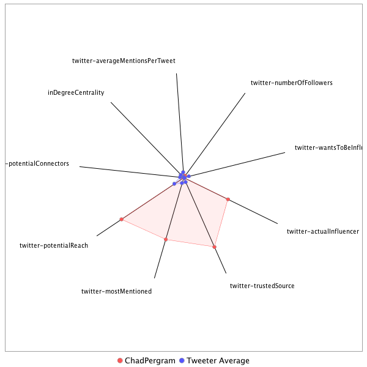

This tweeter has been identified as an influencer. Its target audience and hashtag and word usage are analyzed below.
Basic Statistics
Number of direct followers 49547 The peak number of followers that the tweeter had during any time period. Number of retweeters 223 Number of agents that retweeted the key influencer. Number of secondary followers 77497904 The sum of the followers of those who retweeted the key influencer.
Measure Values of Other Influencers node versus Tweeter Average
This compares the measure values of the key influencer with the average values across all tweeters. For each measure line, the center-point means zero and the end-point means the maximum score across all tweeters.

Where was the influencer?
The agent is not recorded as being in any locations. Either he tweeted without geo-tags or we have no information about the tweets he sent.
The agent and retweeters were in 31 different locations.

What hashtags did the influencer use?
This displays the top ranked hashtags that the influencer and its retweeters used.
Rank hashtag Count 1 AHCA 937 2 pharma 599 3 BREAKING 585 4 Comey 527 5 Obamacare 456 6 TrumpCare 453 7 biotech 383 8 FDA 375 9 ACA 368 10 mtal 361 11 GA06 290 12 ParisAgreement 252 13 NIH 247 14 Russia 246 15 ComeyHearing 232 16 adopt 220 17 Trump 207 18 CNNsotu 198 19 drugprices 178 20 AdoptDontShop 170 21 dog 169 22 VAGov 164 23 healthcare 156 24 CongressionalBaseballGame 150 25 ComeyFiring 129 26 Manchester 125 27 SCOTUS 125 28 worldreligiontour 123 29 ge2017 114 30 TrumpBudget 110 31 cat 103 32 Qatar 102 33 MTpol 101 34 Medicaid 100 35 ComeyDay 99 36 ComeyTestimony 99 37 NYC 99 38 ksleg 98 39 cbntrumptravels 95 40 CDC 92 41 JamesComey 92 42 TheBachelorette 91 43 drugpricing 91 44 omnibus 89 45 MemorialDay 88 46 alexandriashooting 88 47 rescue 88 48 txlege 83 49 covfefe 82 50 Opioids 81 51 FF 79 52 foster 79 53 climate 78 54 LondonBridge 75 55 MOLeg 73 56 CR 71 57 SessionsHearing 71 58 climatechange 71 59 ISIS 69 60 Nats 69 61 Syria 69 62 ThisWeek 69 63 ParisAccord 68 64 science 67 65 Hardball 66 66 SpecialReport 64 67 FBI 62 68 shooting 61 69 trumprussia 60 70 Alexandria 59 71 CATS 59 72 TBT 59 73 fakenews 59 74 Iran 55 75 FTN 54 76 Israel 54 77 opioid 54 78 China 53 79 London 53 80 MAGA 52 81 PDUFA 52 82 FBIDirector 51 83 potusabroad 51 84 HHS 50 85 Ebola 49 86 dogs 49 87 US 48 88 tcot 48 89 CAPIdeas 47 90 ParisClimateDeal 47 91 FoxNews 46 92 sallyyates 46 93 FarewellOldChum 45 94 OTD 45 95 NorthKorea 44 96 SC05 44 97 Caps 43 98 snl 43 99 FOIA 42 100 NATO 42
Tweet List
This displays all of the tweets of the influencer ordered from earliest to latest. Click on a tweet to see its status in Twitter.
Number Tweet ID Date Message 1 859429844777656320 2017-05-02 11:30:17-04 Hoyer on if there will be Dem absences on Thurs if GOP tries to move health care bill: Not that I know of 2 859211592101224450 2017-05-01 21:03:01-04 Pence expected to talk health care w/GOP mbrs Tues pm at the Capitol 3 859875909779804160 2017-05-03 17:02:47-04 Scalise not ready to commit to health care bill vote tomorrow: We still have some work to do. 4 859966097956712448 2017-05-03 23:01:09-04 Pelosi letter to colleagues: GOPers are fraudulently claiming that Trumpcare covers Americans with pre-existing conditions. It does not!! 5 860117633525481474 2017-05-04 09:03:18-04 Expect House to vote around 1:15 pm et on health care bill 6 860197502406057984 2017-05-04 14:20:40-04 #BREAKING House passes health care bill 217-213. 20 GOP noes. All Dems voted no 7 860195167927775232 2017-05-04 14:11:24-04 House now voting on revamped health care bill. Magic number is 216 for passage with 431 members here including House Spkr Paul Ryan (R-WI) 8 860190617934196737 2017-05-04 13:53:19-04 Expect Hse to start vote on health care bill around 2:15-2:20 pm et or so. Result by 2:30 pm et. Health care vote is 2nd of 3 in this series 9 860175146593783809 2017-05-04 12:51:50-04 Should be 3 votes upcoming. Health care bill is 2nd in series & will start 20-25 minutes after vote series starts. Then NKorea sanctions 10 859900936600342529 2017-05-03 18:42:14-04 Senate has omnibus spending bill. McConnell filed cloture to end debate. Hopes to cut deal to vote Thursday 11 859484208192000004 2017-05-02 15:06:18-04 Whip Scalise says there are mtgs tonight on health care: Every night is a big night..I like the direction we’re heading 12 859423521293946880 2017-05-02 11:05:09-04 Budget Dir Mulvaney says Dems tried "to make this President look like he couldn't govern..he beat them on that at the very highest level" 13 859227265217024000 2017-05-01 22:05:18-04 Colleague Catherine Herridge rpts informal Trump campaign figure Carter Page is cooperating w/Senate Intel Cmte Russia probe 14 859116606995259393 2017-05-01 14:45:35-04 Schumer: We made it clear that if the gov't shut down it would be on the Republicans' backs. And that gave us real leverage 15 859017821107441664 2017-05-01 08:13:02-04 Colleague John Roberts rpts WH pushing for mid-week health care vote in the House 16 860138630605672448 2017-05-04 10:26:44-04 431 mbrs in the Hse w/4 vacancies. 216 is threshold for passage if all vote. But bar could be lower on health care bill later. 17 859484043334823936 2017-05-02 15:05:39-04 There is a school of thought that the health care bill gets worse for GOPers if they keep mbrs here for days w/o voting. 18 859450153501151235 2017-05-02 12:50:59-04 Cornyn on Fox: A gov't shutdown is basically an abdication of our responsibility, particularly if you are in the majority. 19 859753161921372160 2017-05-03 08:55:01-04 Mulvaney on Fox: You may be seeing a break through this morning on the healthcare bill on the Hill and you may see a vote 20 859413503819513856 2017-05-02 10:25:21-04 Whip Scalise as he leaves the presser. I ask him about the whip count on health care: It's better 21 859046705546833920 2017-05-01 10:07:49-04 GOP sources tell Fox they're close on healthcare vote tally. Take issue w/Wed vote unless they're clearly there. Thurs more likely if at all 22 859909738938740737 2017-05-03 19:17:12-04 #BREAKING House to vote tomorrow on health care 23 860126550410366976 2017-05-04 09:38:44-04 Expect close vote on health care bill. Dems ok'd 2nd version of Obamacare 219-212 in March '10. Switch 4 votes & bill would have gone down 24 860186035174682626 2017-05-04 13:35:06-04 Fleet of buses/vans now parked on Capitol plaza to prospectively bus GOPers to WH should health care bill pass 25 859866124124598276 2017-05-03 16:23:54-04 #BREAKING Hse ok's gov't spending pkg to fund gov't thru Sept 30, 309-118. 103 GOPers voted nay. 26 858891787179618308 2017-04-30 23:52:14-04 Lowey on gov't funding pkg: This is not the bill that any of us would have written individually - it is the product of compromise. 27 860126852169560066 2017-05-04 09:39:56-04 Watch for GOP's "in case of emergency break glass" votes. A few mbrs will standby to vote yea if needed. If not, they are released & vote no 28 864863027732127745 2017-05-17 11:19:48-04 Cummings: If this was a time we need to leave our party outside the door, this is it 29 864862994324389889 2017-05-17 11:19:40-04 Cummings on Russia probe: Will it lead to impeachment? I don't know 30 864862692955361280 2017-05-17 11:18:29-04 Cummings on Russia probe: We are at a very significant moment in our country's history. This is our watch 31 864861877087719424 2017-05-17 11:15:14-04 Swawell notes Hse may not not be able to move discharge petition on Russia probe until end of July. Says that's soonest they can donit 32 864861536434737152 2017-05-17 11:13:53-04 Schiff on the dangers of impeachment: It cannot be seen as an effort to nullify an election by other means 33 864861198604521472 2017-05-17 11:12:32-04 Schiff on impeachment: No one should rush to embrace the most extraordinary remedy for removing a president 34 864861112092766208 2017-05-17 11:12:12-04 Schiff: I think we'll have Director Comey coming back to the White House in fairly short order 35 864859406810394624 2017-05-17 11:05:25-04 Crowley on some calls for impeachment: There needs to be a full investigation first 36 864858524748308480 2017-05-17 11:01:55-04 House Democratic Caucus Chairman Joe Crowley (D-NY): The American people want faith restored in their government 37 864857752681762820 2017-05-17 10:58:51-04 Sr Hse GOP source tells Fox that the mood at the Hse GOP Conference this am was "melancholy." Little formal discussion of Trump issue 38 864856395287547904 2017-05-17 10:53:27-04 Only 2 discharge petitons have been successful in Hse in last 2 decades: Hse version of McCain/Feingold campaign finance bill & Ex-Im Bank 39 864856135714603009 2017-05-17 10:52:25-04 Hse Dems pushing "discharge petition" to go over Hse GOP ldrs & force vote to establish independent commission to probe Trump/Russia 40 864855934308372480 2017-05-17 10:51:37-04 McCain on Watergate and Trump remark: I think it’s too early, but I was using that and Iran-Contra and other similar situations 41 864854258059014144 2017-05-17 10:44:57-04 Dem TX Rep Al Green on impeachment call: I do this because, Mr. Speaker, there is a belief in this country that no one is above the law 42 864854098448920576 2017-05-17 10:44:19-04 Dem TX Rep Al Green: I rise today, Mr. Speaker to call for the impeachment of the President of the United States..for obstruction of justice 43 864853228986531841 2017-05-17 10:40:52-04 Cummings: Speaker Ryan appears to have zero, zero, zero appetite for investigating President Trump 44 864853036975435776 2017-05-17 10:40:06-04 Cummings on GOPers probing Trump: They do as little as humanly possible just to claim they are doing something 45 864852723539337220 2017-05-17 10:38:52-04 Rep. Elijah Cummings (D-MD): We are learning new and astonishing allegations of President Trump not just every day but every hour 46 864852307829194753 2017-05-17 10:37:13-04 Ryan on political impact of Trump on GOPers: I don't worry about things outside of control 47 864851796153561088 2017-05-17 10:35:11-04 Rep Fitzpatrick presiding over Hse admonishes Rep Green "to refrain from..accusations that (Trump) committed an impeachable offense" 48 864848474503868418 2017-05-17 10:21:59-04 Schumer: The country is being tested in unprecedented way. Now facts are needed & an impartial investigation into these serious matters 49 864848205237940224 2017-05-17 10:20:54-04 Rep. Al Green (D-TX) just called for the impeachment of President Trump shortly after the House met. 50 864846956702699520 2017-05-17 10:15:57-04 Ryan says GOP will be "dispassionate" in probe of Trump. 51 864846741446807552 2017-05-17 10:15:05-04 Ryan says Hse R's will be "sober" & "responsible in Russia/Trump inquiry 52 864846435178688512 2017-05-17 10:13:52-04 Ryan says Hse needs to hear from Comey. Says it is time to get the facts 53 864845818590900224 2017-05-17 10:11:25-04 Am told Tillis received fluids at GW Hospital after collapsing at roadrace. Am told CPR was NOT administered contrary to some rpts 54 864836724362539008 2017-05-17 09:35:17-04 Sen Graham: The sooner Comey testifies, the better 55 864833650784907264 2017-05-17 09:23:04-04 Talked to Tillis last night at the Capitol and he appeared healthy 56 864833563597910017 2017-05-17 09:22:44-04 GOP NC Sen Thom Tillis collapsed at 3 mile DC roadrace this am. At hospital and awake. Am told it could be dehydration 57 864796348482244608 2017-05-17 06:54:51-04 Spotted on a street in Portree, Scotland on the isle of Skye https://t.co/9e5ELM45C2 58 864776743349047299 2017-05-17 05:36:57-04 Hse Transportation Cmte hrng today on reforming the FAA 59 864776633064054784 2017-05-17 05:36:30-04 Hse hrng today on "fire-prone National Forests" 60 864776340758810624 2017-05-17 05:35:21-04 Energy Sec Rick Perry meets w/House GOPers today 61 864776125075132416 2017-05-17 05:34:29-04 Senate Foreign Relations Cmte considers nomination of fmr Sen Scott Brown to be Amb to New Zealand 62 864775833155768320 2017-05-17 05:33:20-04 Commission on Security and Cooperation in Europe holds hrng today on growing Russian military threat in Europe 63 864775700229877761 2017-05-17 05:32:48-04 Expect the latest Comey news to dominate CapHill today. Some GOPers finding themselves in tough spot defending Trump. Dems applying pressure 64 864654338542755840 2017-05-16 21:30:33-04 Hoyer: I hope every Member of Congress will be judged worthy by posterity for putting country, the Constitution, and the rule of law first. 65 864640963519578113 2017-05-16 20:37:24-04 Gowdy on Fox on Comey: I think if he felt like this was an effort to influence him 66 864640790928261120 2017-05-16 20:36:43-04 Gowdy on Fox: I want to see the memo. I want to talk to..Comey to determine how contemporaneous his recording of the conversation was. 67 864638082456408064 2017-05-16 20:25:57-04 Judiciary Cmte chair Bob Goodlatte on Comey/Flynn notes: "I don’t comment off the cuff in the middle of the street” 68 864637964546134018 2017-05-16 20:25:29-04 GOP FL Rep Curbelo on Comey notes: If true it's disconcerting and opens up new chapter of scandal in this country 69 864631441145155584 2017-05-16 19:59:34-04 Schiff on Comey notes: Comey should be brought back to testify before Congress without delay. 70 864631362170613760 2017-05-16 19:59:15-04 Schiff on Comey notes: If there are notes of these meetings they should be provided to Congress immediately – subpoenaed if necessary 71 864630542867845122 2017-05-16 19:56:00-04 Ryan spox AshLee Strong: We need to have all the facts, and it is appropriate for the House Oversight Committee to request this memo. 72 864629420786671617 2017-05-16 19:51:32-04 Dems on Oversight and Judiciary Committees writes to GOPers. demand probe of Trump, Sessions & top WH aides. 73 864627477599186945 2017-05-16 19:43:49-04 Chaffetz indicates tjhat he will subpoena Comey memo if it exits. Tells Fox he doesn't have it yet. 74 864626993022861313 2017-05-16 19:41:53-04 Dem RI Sen Jack Reed says under Ryan/McConnell "Congress has not fulfilled its..obligation to serve as (a) check on this President" 75 864626007013302272 2017-05-16 19:37:58-04 Dem MD Rep Jamie Raskin: The ship of state is not on a steady course right now & is careening all over the place. 76 864625604947320832 2017-05-16 19:36:22-04 On Fox, Dem Rep Connolly says trying to persuade Comey "to back off is obstruction of justice and that is a serious matter." 77 864625283667820546 2017-05-16 19:35:06-04 House Dem Caucus Chair Crowley doesn't say Dems should use "I" word on Trump other than "independent commission" to probe Russia issue. 78 864624783446724610 2017-05-16 19:33:06-04 Dem Rep Jamie Raskin hints at Watergate. Doesn't use John Dean "cancer on the presidency" line. Says there's "a staph infection on the DOJ" 79 864616348684611585 2017-05-16 18:59:35-04 Blumenthal: James Comey, Jeff Sessions, Rod Rosenstein, and Don McGahn – should be called to testify under oath in public before the Senate 80 864616176365776899 2017-05-16 18:58:54-04 House MajLdr McCarthy on Comey/Flynn memo: “In today’s Washington I find there are a lot of allegations and small truths.” 81 864610558909272065 2017-05-16 18:36:35-04 "No comment" from Judiciary Cmte chair Goodlatte on Comey memo & Flynn probe 82 864609386420948992 2017-05-16 18:31:56-04 Pelosi: If the President has nothing to hide, then he should welcome independent investigations to remove all doubt of a cover-up. 83 864609272197459968 2017-05-16 18:31:28-04 Pelosi: If these reports are true (Trump's) brazen attempt to shut down the FBI’s investigation of..Flynn is an assault on the rule of law 84 864605565078704130 2017-05-16 18:16:44-04 On Comey, Schumer says he was "shaken" at Comey news. Says to fellow senators "history is watching" 85 864604818228346882 2017-05-16 18:13:46-04 Schumer to speak about Comey memo on Senate floor shortly 86 864602921945759744 2017-05-16 18:06:14-04 Judiciary Cmte chair Grassley says Rosenstein testified there was no interference in probe. Says if Comey memo true there is a "conflict" 87 864582078544969728 2017-05-16 16:43:25-04 DCI Pompeo now spkg to Hse Intel Cmte. Was scheduled before Trump/Russia intel issue erupted 88 864580807817650176 2017-05-16 16:38:22-04 USSS says suspect apprehended after they vaulted the bike rack just shy of the fence at the White House 89 864578905587544065 2017-05-16 16:30:48-04 Another fence jumper at the White House. Information fragmentary at this stage 90 864552885987799042 2017-05-16 14:47:25-04 Schumer on McMaster's explanation: There are different nuances 91 864552588825563138 2017-05-16 14:46:14-04 Schumer on if Dems should dial back imprachment talk: Every mbr has..right to..views..We need a thorough investigation. Then we get..facts 92 864551402785435648 2017-05-16 14:41:31-04 Schumer on asking for transcripts: We have directly communicated to the White House 93 864550229709815808 2017-05-16 14:36:51-04 Sen. Ed Markey (D-MA) on Comey firing and Russia/Trump intel sharing: These two acts alone bring us closer to a Constitutional crisis 94 864548984815276033 2017-05-16 14:31:55-04 Sen. Richard Blumenthal (D-CT): I will ask Rod Rosenstein on Thursday as to whether he will commit to a special prosecutor 95 864547542616375296 2017-05-16 14:26:11-04 Schumer: The President should make full transcripts available immediately. No ifs. No ands. And no buts 96 864547469685915648 2017-05-16 14:25:53-04 Schumer on Trump: We need more Republicans to stand up and put country over party 97 864547393957765121 2017-05-16 14:25:35-04 Schumer on Trump: We need more of our Republican colleagues to speak out. This is not normal behavior.. 98 864545917910884352 2017-05-16 14:19:43-04 Senate GOPers wouldn't grant Merrick Garland a hearing for SCOTUS. But McConnell suggested Garland to Trump for FBI post 99 864545739808149504 2017-05-16 14:19:01-04 McConnell: I think it would be helpful to have less drama emenating from the White House 100 864545649198608384 2017-05-16 14:18:39-04 McConnell says he's talking to Trump about the next FBI Dir & suggested Merrick Garland. Calls him "deeply credentialed." 101 864545491769585664 2017-05-16 14:18:02-04 McConnell on if he's losing confidence in Trump: "No." McConnell on if he shouldn't trust the president on handling inteligence: "No" 102 864545080639717376 2017-05-16 14:16:24-04 McConnell says he told White House they should consider Merrick Garland to be FBI Director. Says he's "apolitical." 103 864543290544279552 2017-05-16 14:09:17-04 In prepared remarks at weekly presser, Senate GOP leaders didn't talk about Trump/Russia. They discussed how bad Obamacare is. 104 864542397027553282 2017-05-16 14:05:44-04 McConnell & other GOP ldrs now speaking to reporters. Absent is Cornyn who just withdrew from FBI Dir contest https://t.co/okcOdyHHDL 105 864541350414479364 2017-05-16 14:01:34-04 GOP NC Rep Mark Meadows asks McMaster to retract statement on whether or not Western Wall is part of Israel 106 864541176963182592 2017-05-16 14:00:53-04 Meadows on McMaster: There is no question that both geographically and historically the Western Wall has been part of the state of Israel 107 864539077634392064 2017-05-16 13:52:33-04 Colleague Mike Emanuel rpts Cornyn considered FBI post because Sessions asked him to do so in effort to restore stability at FBI 108 864537943444246529 2017-05-16 13:48:02-04 Cornyn says he'll help Trump admin find "a well-credentialed, independent FBI Director" but it won't be him 109 864537762061578242 2017-05-16 13:47:19-04 Cornyn on FBI Director opening: The best way I can serve is continuing to fight for a conservative agenda in the U.S. Senate. 110 864537554762309636 2017-05-16 13:46:30-04 #BREAKING GOP Senate Whip & TX Sen John Cornyn effectively pulls his name out of consideration to be the next FBI Director 111 864529383113076740 2017-05-16 13:14:01-04 Pelosi with a reading suggestion for Trump: He should read the Old Testament..I hope he would take the wisdom of Solomon 112 864529282877575168 2017-05-16 13:13:37-04 Pelosi on McMaster saying information Trump revealed was open source: You know he confirmed something. 113 864529065440575488 2017-05-16 13:12:46-04 Engel on Trump's intel revelation: It would be bad enough with any other country. But the Russians? 114 864528934662230016 2017-05-16 13:12:14-04 Rep Engel the top Dem on the Foreign Affairs Cmte: I don't understand the the President's infatuation with the Russians.. 115 864527551259127809 2017-05-16 13:06:45-04 Pelosi on Trump: What do the the Russians have on the President personally, professionally, financially? 116 864527492782202880 2017-05-16 13:06:31-04 Pelosi: I was very disappointed in the Rosenstein memo..The title of it was appalling.. 117 864527434858860544 2017-05-16 13:06:17-04 Pelosi on if Trump picked someone who wasn't independent to be FBI Dir: That would be an indictment on the President 118 864527285751349248 2017-05-16 13:05:41-04 Pelosi doesn't have "name" 2 suggest as next FBI Dir. But wants "someone who recognizes the independence of the FBI..it isn't about a person 119 864526974777249792 2017-05-16 13:04:27-04 Pelosi on Trump: In doing so he perhaps jeopardized a source or a method..and jeopardized other countries working with us 120 864526858163040256 2017-05-16 13:03:59-04 Pelosi on McMaster saying Trump revelation was open source: To say it was in the public... doesn't matter..What he confirmed was dangerous 121 864522808071774208 2017-05-16 12:47:54-04 Pelosi says it doesn't matter if McMaster said intel Trump shared with open source. Says Trump "confirmed something" 122 864516816521105408 2017-05-16 12:24:05-04 Dem MA Sen Ed Markey says the Trump disclosure "potentially compromises our young men and women over in the Middle East" 123 864513707967172610 2017-05-16 12:11:44-04 DCIA Pompeo to talk w/Hse Inte Cmte mbrs tonite. Mtg was on the books before the Russia/Trump conflagration. But will be topic of discussion 124 864513430622961664 2017-05-16 12:10:38-04 Top D on Foreign Affairs Cmte Engel, alongside Pelosi, discussing their trip to Nepal & how State Dept cuts would harm human rights overseas 125 864511905557360640 2017-05-16 12:04:34-04 Dem NY Sen Gillibrand: This is not business as usual. The president is truly creating chaos. He is not creating jobs or making us safer. 126 864511529319903232 2017-05-16 12:03:05-04 Dem DE Sen Tom Carper on Trump: We had a saying in the Navy...loose lips sink ships 127 864504964705652736 2017-05-16 11:36:59-04 Hoyer: I don't think Donald Trump is going to sell out our country consciously 128 864504494155071488 2017-05-16 11:35:07-04 Hoyer: We're not a third world country. We're not going to have a coup 129 864503623501455362 2017-05-16 11:31:40-04 Hoyer: Jumping into impeachment is a very serious matter. It ought not to be taken lightly.. 130 864503541263683585 2017-05-16 11:31:20-04 Hoyer on GOPers and Trump: There are a lot of very responsible Republicans..now is the time to stand up 131 864503420270542848 2017-05-16 11:30:51-04 Hoyer on the Trump agenda: I don't think I've seen an administration so late in their term lacking in substance 132 864502871274008577 2017-05-16 11:28:40-04 Hoyer on GOP deference to Trump: It is past time for Republicans to stand up 133 864502712519585792 2017-05-16 11:28:03-04 Hoyer says it's natural thatnGOPers might be deferential to Trump. But says there's a time to "stand up" for the country 134 864500961770909696 2017-05-16 11:21:05-04 Hoyer on why it's not time to move on impeachment: We need to know the facts 135 864499909399109632 2017-05-16 11:16:54-04 Dem CO Sen Bennet: I am troubled by a lot that’s going on in this WH and it’s time for them to settle things down. 136 864498465296064515 2017-05-16 11:11:10-04 Hoyer: This is the 1st time I thought that if my candidate did not win, the country would be in danger. This week confirmed my observation 137 864498337424257024 2017-05-16 11:10:39-04 Hoyer: The chaos, the incompetence of this administration is beyond anything I've ever experienced in my lifetime.. 138 864498187658285056 2017-05-16 11:10:04-04 Hoyer: I think it's too early to talk about impeachment, however it is past time to be greatly concerned about our country 139 864497023147552768 2017-05-16 11:05:26-04 In opening Senate remarks today, McConnell talks about failures of Obamacare. Schumer talks about Trump & classified intel 140 864496846110158848 2017-05-16 11:04:44-04 McConnell: Unless we act, Obamacare premiums will keep skyrocketing across the nation 141 864496564789751808 2017-05-16 11:03:37-04 Schumer: If the president has nothing to hide he should direct that the transcript be made available (of Russia mtg) 142 864496237705351172 2017-05-16 11:02:19-04 Schumer: I am calling on the WH to make the transcript of the meeting available to Congressional..cmtes as soon as possible 143 864495646513954816 2017-05-16 10:59:58-04 Graham says people "may not like this president" but it's a "crime" to leak info 144 864495107462103040 2017-05-16 10:57:49-04 Graham: The president didn’t do anything illegal, but..if u want to talk w/the Russians about anything sensitive, run it thru the system 1st 145 864494764661583874 2017-05-16 10:56:28-04 McCain: The time..Trump spent sharing sensitive info with the Russians was time he did not spend focusing on Russia’s aggressive behavior 146 864448883136630784 2017-05-16 07:54:09-04 GOP AL Rep Mo Brooks now running for Senate seat held by Sen Luther Strange. Strange was appointed to succeed AG Jeff Sessions 147 864417649920528384 2017-05-16 05:50:02-04 Senate Finance Cmte hrng today on Medicare 148 864417072763330561 2017-05-16 05:47:44-04 Hse Appropriations panel hrng on American Indian and Alaska Native issues today 149 864416711071739904 2017-05-16 05:46:18-04 Senate now trying to finish work on nomination of Jeffrey Rosen to become Dep Transportation Sec 150 864416465046446081 2017-05-16 05:45:20-04 House returns to session today after week-and-a-half recess. Focus in both chambers now on Trump/Russia issue 151 864274474945970176 2017-05-15 20:21:06-04 Dems using rpt that Trump leaked classified info to Russia as wedge to gang up on him. Most GOPers measured if not silent in response 152 864274199258509312 2017-05-15 20:20:01-04 Pelosi: Congress must be given a full briefing on the..damage President Trump has done in compromising highly classified code-word intel 153 864274051111542784 2017-05-15 20:19:25-04 Pelosi: If the President outed a highly classified code-word source intentionally, that would be even more dangerous. 154 864273971713363972 2017-05-15 20:19:06-04 Pelosi: Even if President Trump unwittingly blew a highly classified code-word source to the Russians, that would be dangerous enough. 155 864273862330130432 2017-05-15 20:18:40-04 Pelosi: Trump has compromised a key source of intelligence collection against ISIS and jeopardized the security of the American people. 156 864272812198047744 2017-05-15 20:14:30-04 Schumer:The President owes the intelligence community, the American people, and Congress a full explanation. 157 864272527857782788 2017-05-15 20:13:22-04 Schiff: The Admin..must immediately and fully brief the House Intelligence Committee on what, if anything, was shared 158 864271912708562945 2017-05-15 20:10:56-04 Conyers/Cummings say Trump "may have sunk to a dangerous new low" after "an unprecedented week" 159 864223849050771456 2017-05-15 16:59:56-04 Schumer to Trump: If there are no tapes he should apologize to James Comey and the American people for misleading them. 160 864221249593069568 2017-05-15 16:49:37-04 Schumer: If there are “tapes” as the president has suggested, he should turn them over immediately to Congress and the investigators. 161 864196612515561473 2017-05-15 15:11:43-04 Pelosi letter to Dems: What do the Russians have on..Trump financially, politically & personally that he & GOPers in Congress want to hide? 162 864190777332838402 2017-05-15 14:48:31-04 Pelosi to Ryan: I hope you will also insist that Director Comey be accountable to the House as well as the Senate in his presentation. 163 864190679152545792 2017-05-15 14:48:08-04 Pelosi writes to Ryan, insisting he ask Dep AG Rosenstein to brief full Hse on Comey firing as he will do for the Senate Thurs 164 864187996718936067 2017-05-15 14:37:28-04 Most sr mbr of the Senate Pat Leahy accuses admin of trying to undermine democracy. Says the "GOP leadership n Congress has stood silent." 165 864184575517478912 2017-05-15 14:23:53-04 USCP advise there will be a 21-Gun salute at 2:55 pm et on West Front of US Capitol for Nat'l Peace Officers' Memorial Svc. 166 864179846955585536 2017-05-15 14:05:05-04 Schumer wants to ask Rosenstein Thurs "to preserve and make public any audio recordings of conversations between" Trump/Comey 167 864179609927122944 2017-05-15 14:04:09-04 Schumer wants senators to "press" Rosenstein at Thurs briefing on Comey firing "to make way for a special prosecutor" 168 864179187040563202 2017-05-15 14:02:28-04 Deputy AG Rod Rosenstein to lead an all-Senators briefing on removal of fmr FBI Dir Comey on Thurs. McConnell requested briefing 169 860535811019853824 2017-05-05 12:44:59-04 Closing arguments Monday in the political corruption scandal of fmr Dem FL Rep Corrine Brown 170 860530156175314946 2017-05-05 12:22:31-04 Senate Intel Cmte to hold open hrng on World Wide Threats next Thurs w/Coats, Comey, Pompeo and others 171 860480666336669696 2017-05-05 09:05:52-04 Pelosi leading bipartisan delegation visit to India, Nepal, Germany and Belgium to study nat'l security & human rights. 172 860479413544210432 2017-05-05 09:00:53-04 McCain says the Senate has work to do on health care and doesn't approve of the House passing a bill without a CBO score 173 860246279322050561 2017-05-04 17:34:30-04 Ds singing "Hey, hey, goodbye" to Rs on health care vote similar to Rs waving bye to Margolies-Mezvinsky casting decisive vote on '93 $ bill 174 860244239631953920 2017-05-04 17:26:23-04 Senate likely to craft its own health care bill despite Hse efforts. Hse tried to narrow bill to meet budget reconciliation rules 175 860242759755673600 2017-05-04 17:20:31-04 Scalise on if GOP spiked the ball on health care w/WH Rose Garden ceremony: No. Not at all. Not at all. 176 860233627245924352 2017-05-04 16:44:13-04 KY GOP Sen Paul on Fox. Says GOPers voted to pay taxpayer money to insurance companies. 177 860225125945401351 2017-05-04 16:10:26-04 Schiff on closed Comey/Rogers hrng: The witnesses, I think were valuable in providing some additional insights to us 178 860225024346787849 2017-05-04 16:10:02-04 Rep Conaway, now ldg Russia probe says Intel Cmte "had a very successful hrng" w/Comey & NSA chief Rogers. Hrng was closed. 179 860223887166058496 2017-05-04 16:05:31-04 Razor-thin margin on health care vote. GOP sources say they had a few "in case of emergency break glass" votes in their pocket though 180 860223397577490432 2017-05-04 16:03:34-04 Senate synchs up with Hse & ok's omnibus spending bill, 79-18. Avoids gov't shutdown. Bill goes to Trump to sign. Gov't funded thru Sept 30 181 860222125327699968 2017-05-04 15:58:31-04 McConnell: The status quo is unacceptable..We must repeal and replace this failed law. 182 860221928270946304 2017-05-04 15:57:44-04 McConnell very cautious about prospects for health care in Senate: Today’s vote in the House was an important step. 183 860220178054995969 2017-05-04 15:50:47-04 Getting the Senate to take up health care could be weeks away..if not longer. 184 860219925809549313 2017-05-04 15:49:47-04 Ryan/McCarthy effusive in their praise of Trump on health care at Rose Garden ceremony. 185 860219816384311296 2017-05-04 15:49:20-04 Hse Intel Cmte finishes its closed session on Russia with FBI Dir Comey & NSA Chief Rogers. 186 860216515420934145 2017-05-04 15:36:13-04 GOP noes on health care (con't): Massie Meehan Reichert Ros-Lehtinen SmithNJ Turner 187 860216366896488448 2017-05-04 15:35:38-04 GOP noes on health care: Biggs Coffman Comstock Costello Dent Donovan Fitzpatrick HerreraBeutler Hurd Jones Joyc Katko Lance LoBiondo.. 188 860216037509353473 2017-05-04 15:34:20-04 20 GOP noes on health care bill. Many were moderates from swing districts or disticts carried by Hillary Clinton. 189 860211689924567040 2017-05-04 15:17:03-04 Schumer: Senate Republicans should refuse to follow their House colleagues over a cliff, reject repeal, and work with Dems 190 860211058442735616 2017-05-04 15:14:32-04 Schumer: This bill is going nowhere fast in the United States Senate. 191 860204273753350145 2017-05-04 14:47:35-04 Trump presser with House GOPers in the Rose Garden planned for 3:30 pm et on health care 192 860203967955034114 2017-05-04 14:46:22-04 Buses now en route, taking Hse GOPers to WH for Rose Garden Ceremony with Trump. Usually that only happens when they sign a bill into law. 193 860203585266733060 2017-05-04 14:44:51-04 Pelosi on GOP health care bill: They walked the plank 194 860203514039029761 2017-05-04 14:44:34-04 Hse Dems had margin of 3 votes on 1st health care bill. 4 on 2nd health care bill. GOP could only lose 1 vote & still pass it. 195 860202913607684100 2017-05-04 14:42:11-04 Dems sang "Na Na Na. Nah Na Na Na Na. Hey Hey Hey. Goodbye" to GOPers at end of health care vote, implying they'll lose seats in '18 196 860202387314794497 2017-05-04 14:40:05-04 With 217-213 vote, GOP could only lose one more vote and pass the bill. A loss of 2 votes means a 215-215 tie. Ties lose in the Hse 197 860202066253418499 2017-05-04 14:38:49-04 GOPers now getting on buses at the Captiol to go to the White House for a Rose Garden Ceremony after passing health care bill. 198 860200306357022721 2017-05-04 14:31:49-04 House approves bill to bolster sanctions against North Korea, 419 to 1. GOP KY Rep Thomas Massie was the lone nay 199 860199717573201923 2017-05-04 14:29:29-04 Dems to hold presser soon on health care bill, led by Hoyer 200 860199654570512385 2017-05-04 14:29:14-04 Hse now voting on bill to increase sanctions on North Korea 201 860198795161866240 2017-05-04 14:25:49-04 Trump invites backers of the health care bill to the White House for remarks shortly. 202 860196424738275330 2017-05-04 14:16:23-04 2 Dem yeas on the board. Dems playing games with GOP on health care bill? 203 860196060446240768 2017-05-04 14:14:57-04 18 GOP noes on the board on health care. Can only lose 21. Newhouse should be only GOP absence 204 860190770715926528 2017-05-04 13:53:55-04 Expect North Korea sanctions vote to be the third in this series, following the health care bill. 205 860189583493009408 2017-05-04 13:49:12-04 Ryan: We will not falter. We will replace. And today is the day we're going to do this.. 206 860189144592547840 2017-05-04 13:47:28-04 Senate now voting to synch up w/House to fund gov't & avoid gov't shutdown. 207 860188674188873728 2017-05-04 13:45:36-04 Ryan thanks Trump for his leadership in trying to move bill to repeal/replace Obamacare. 208 860188559839461376 2017-05-04 13:45:08-04 Ryan gets roaring applause from GOpers as he starts his speech on health care bill on flr. Ryan: "I haven't even said anything yet." 209 860188385838813184 2017-05-04 13:44:27-04 House Speaker Paul Ryan (R-WI) now speaking on the House floor about the health care bill 210 860185623965179904 2017-05-04 13:33:28-04 Pelosi speaking now on health care on the floor 211 860180508571041794 2017-05-04 13:13:09-04 For the umpteenth time, an exasperated Rep Mike Simpson (R-ID) admonishes mbrs to direct remarks thru the chair during health care debate 212 860177227874545664 2017-05-04 13:00:07-04 NSA's Rogers now at Hse Intel Cmte along w/Comey for closed door session on Russia probe. TX Rep Conaway now ldng effort in lieu of Nunes 213 860169550326792192 2017-05-04 12:29:36-04 Hse resumes debate on Obamacare replacement, picking up debate where they left off in March. 214 860169407464706048 2017-05-04 12:29:02-04 GOP OH Rep Johnson: Where was my colleagues and the Democrats when millions of Americans were forced out of work because of..Obamacare? 215 860168449611485184 2017-05-04 12:25:14-04 Dem TX Rep Doggett: The real high risk pool is the one that everyone who votes for this outrageous proposal is about to plunge into. 216 860166340988030977 2017-05-04 12:16:51-04 FBI Dir Comey arrives on CapHill for closed hrng w/Hse Intel Cmte on Russia probe 217 860157747983257602 2017-05-04 11:42:42-04 We expect vote on health care bill midday, probably around 1 pm-ish. Vote on North Korea sanctions also in the queue. 218 860157520459026440 2017-05-04 11:41:48-04 Chaffetz her for health care vote after foot surgery. Using scooter for one leg. Shows me pic of foot after surgery. Looks like Frankenstein 219 860155809988259840 2017-05-04 11:35:00-04 GOP WA Rep Newhouse not here for health care vote. Is in district for family emergency. Announced in April his wife has cancer. 220 860155197703827456 2017-05-04 11:32:34-04 Pelosi: I was concerned about the president's statement is that this country needs is a good shutdown. 221 860155056456437760 2017-05-04 11:32:01-04 Pelosi on GOP health care plan: It's a stupid bill 222 860154896686960641 2017-05-04 11:31:22-04 Pelosi on health care vote/GOPers: They have this vote tattooed on them. A scar they will carry. It's their vote they are taking 223 860154732115054592 2017-05-04 11:30:43-04 Pelosi: Republicans are in a lose-lose situation. They lose if they don't bring it up and they really lose if they do pass it 224 860154123647406084 2017-05-04 11:28:18-04 Pelosi says GOPers are "maliciously trying to destroy health care." Says this provides "a civics lesson for the American people." 225 860152968825491456 2017-05-04 11:23:43-04 W/prospective absence of Rep Daniel Newhouse (R-WA), GOP only has 237 Rs here. Can only lose 21 on their side on health care vote 226 860152841360609285 2017-05-04 11:23:12-04 W/430 mbrs exepcted to vote on health care bill today, magic number for passage should be 216. 227 860152720489152512 2017-05-04 11:22:44-04 Expecting 430 of 431 Hse mbrs to vote on health care later. 1 absence. Ryan could vote. Customary for Spkr not to vote 228 860152553543217153 2017-05-04 11:22:04-04 Rep Daniel Newhouse (R-WA) seems to be only mbr absent today on either side ahead of health care vote. Was not at Rules Cmte mtg last nite 229 860150359968428032 2017-05-04 11:13:21-04 House now debating revamped health care bill. 230 860149113224146944 2017-05-04 11:08:24-04 Senate sets up 1:45 pm et vote to synch up w/Hse & ok bill to fund gov't thru September 30 & avoid shutdown 231 860148307586412544 2017-05-04 11:05:11-04 427 mbrs voted on 2nd Hse bedcheck vote before health care vote. Ryan didn't vote again. Pelosi at her presser. GOP WA Rep Newhouse absent 232 860146274695249920 2017-05-04 10:57:07-04 428 mbrs voted on 1st bedcheck vote prior to health care. 431 total mbrs. Sprk Ryan didn't vote. Nor did GOP WA Rep Newhouse 233 860142159302930433 2017-05-04 10:40:46-04 Rep. Jason Chaffetz (R-UT) here for today's vote. Had been out for foot surgery. Just talked to him in the hall 234 860140517715312642 2017-05-04 10:34:14-04 Hse now starting bedcheck votes to do final whipping & asses who is here & what may be threshold to pass health care bill later. 235 860139051181117440 2017-05-04 10:28:25-04 Hse will soon conduct "bedcheck" votes to assess how many mbrs are here & who is absent. Could impact final vote. Also, last chance to whip 236 860138903625486337 2017-05-04 10:27:49-04 Current breakdown in Hse is 238 GOPers to 193 Dems. GOP can only lose 22 votes on its side & pass bill if all mbrs vote. 237 860137289577623552 2017-05-04 10:21:25-04 Club for Growth officially withdraws its opposition to the GOP's health care bill 238 860133354775212032 2017-05-04 10:05:46-04 On Fox, HHS Sec Price says nmbr that 24 million Americans will lose coverage is wrong. Says plan "will increase coverage" 239 860127681379270656 2017-05-04 09:43:14-04 GOP didn't post new health care text until 8 pm last night. GOP has rule requiring text be posted for parts of 3 days before voting 240 860127414348918784 2017-05-04 09:42:10-04 No CBO score or price tag on GOP health care bill today. All they have is old, original score. 241 860126341030707201 2017-05-04 09:37:54-04 Expect close vote on health care bill. Dems ok'd 1st version of Obamacare 220-215 in Nov '09. Switch 3 votes & bill would have gone down 242 860123593543430144 2017-05-04 09:26:59-04 Dem MA Rep McGovern on health care bill: I have a magic bullet fix if you want to help ppl w/pre-existing conditions. Don’t change the law 243 860123247895093249 2017-05-04 09:25:37-04 WH officials "comfortable" w/vote tally on health care bill. Colleague Blake Burman saying WH not making definitive predictions on vote 244 860122534179725312 2017-05-04 09:22:47-04 Hse now voting the "rule" to prep revised health care bill for the flr. Rule governs how Hse handles the bill for debate later today 245 860120254726504448 2017-05-04 09:13:43-04 Scalise: "It's gonna be a good day" & bill "will pass" 246 860119563958145024 2017-05-04 09:10:58-04 McCarthy says he is "very" confident Hse has votes to pass health care bill today 247 860119240971620353 2017-05-04 09:09:41-04 What GOP doesn't want to see: Screen of Death on CapHill monitors if Hse goes out subject to call of chair. Would signal problems w/vote 248 860118062418333696 2017-05-04 09:05:00-04 House to hold series of "bedcheck" votes in the next hr or so. Will assess who all is here & do final whipping on health care bill 249 860117792061837312 2017-05-04 09:03:56-04 Don't expect Senate to take up health care bill for a while. Senators need to figure out what to do with what the House may pass 250 860117483109396480 2017-05-04 09:02:42-04 Hse GOPers mtg at this hr for last minute conversations about reshaped health care bill 251 860070156394954752 2017-05-04 05:54:39-04 Senate Armed Services Cmte hrng today to examine United States Special Operations Command. 252 860069794959286272 2017-05-04 05:53:13-04 Senate today to debate & possibly vote on Hse-passed spending bill to fund gov't thru Sept 30 253 860069631058378752 2017-05-04 05:52:34-04 Hse Intel Cmte to hear from FBI's Comey, NSA's Rogers in closed session today about Russia probe 254 860069517518569472 2017-05-04 05:52:06-04 Hse expected to vote today on bill to increase sanctions against NKorea 255 860069393606352896 2017-05-04 05:51:37-04 Hse GOPers meet this am to discuss final changes to health care bill 256 860069302359207936 2017-05-04 05:51:15-04 Pelosi asking Hse Dems to make a show of force and all be in Hse chamber for health care debate today 257 860069152895238144 2017-05-04 05:50:40-04 House to debate/vote today on revamped version of health care bill. GOP ldrs confident they have the votes 258 859966412651147264 2017-05-03 23:02:24-04 Pelosi letter to Dems: When debate begins on the repeal of the Affordable Care Act, we encourage all Members to be present on the floor 259 859938164550533120 2017-05-03 21:10:09-04 Rep. Fred Upton (R-MI) on his health care bill tweaks: I called for the CBO to release a score. And sadly we don't have it 260 859936210696982528 2017-05-03 21:02:24-04 Dem MA Rep McGovern on health care bill at Rules Cmte: This process..to put it bluntly is a God damm mess..Fixes to fixes to fixes to fixes. 261 859933001546964994 2017-05-03 20:49:39-04 Upton tells Rules Cmte at 8:48 pm he'll be "brief because the hr is late." Chair Sessions says it's "early." Rules met at 10:35 pm last wk 262 859931785362386945 2017-05-03 20:44:49-04 Dem FL Rep Hastings says health care bill will wind up like cap & trade: I predict this will go to the Senate and we won't see it any more 263 859931462208032769 2017-05-03 20:43:32-04 Rep McGovern on reshaped health care bill: We've been forced to rely on press reports to figure out what the hell is even in this bill 264 859929866661240836 2017-05-03 20:37:11-04 Reps Upton, MacArthur, McSally & DeSantis to testify at tonight's Rules Cmte hrng prepping revamped health care bill for flr tomorrow 265 859928168970555392 2017-05-03 20:30:26-04 House Rules Committee starting shortly to prep revamped health care bill for the floor tomorrow 266 859927765591748608 2017-05-03 20:28:50-04 Pelosi on health care bill: GOPers are going to tattoo this moral monstrosity to their foreheads..the..people will hold them accountable 267 859927610305990656 2017-05-03 20:28:13-04 Pelosi: Forcing a vote without a CBO score shows that Republicans are terrified of the public learning the full consequences of their plan 268 859927520103342080 2017-05-03 20:27:52-04 Pelosi: If GOPers pass Trumpcare, Americans with pre-existing conditions will be pushed off..insurance & segregated into high risk pools 269 859916689097576448 2017-05-03 19:44:49-04 Expect tight vote on health care. Dems ok'd final Obamacare version 219-212 in March '10. Switch 4 votes & bill failed. 34 Dem noes 270 859916497921208320 2017-05-03 19:44:04-04 Expect tight vote Thurs on health care: Dems ok'd Obamacare in 220-215 w/39 Dem noes in Nov '09. Switch 3 votes & bill would have failed 271 859910720128942080 2017-05-03 19:21:06-04 #BREAKING Majority Ldr McCarthy on health care bill tomorrow: "We're going to pass it" 272 859910532672958464 2017-05-03 19:20:22-04 Rules Cmte to meet around 8:30 pm et tonight to set up health care bill for tomorrow 273 859910055256346626 2017-05-03 19:18:28-04 We expect the vote to come in the early afternoon on health care tomorrow. They will whip in the morning. Have to go to Rules cmte 274 859906398058098688 2017-05-03 19:03:56-04 Hse GOP begins leadership mtg to decide if they'll put health care bill on the flr tomorrow. 275 859905536359370752 2017-05-03 19:00:30-04 GOP KY Rep Hal Rogers says he's "leaning yes" on health care bill but says “it’s a tough decision.” 276 859905405673230337 2017-05-03 18:59:59-04 Hse Rules could still meet tonight to tee up health care bill for flr. Still waiting for bill text of Upton/Long amendment 277 859905270096564225 2017-05-03 18:59:27-04 Am told GOP brass doesn't like idea of keeping mbrs in DC & blowing up recess. They think that costs them votes on health care 278 859905105017044993 2017-05-03 18:58:47-04 Am told Hse GOP just a few votes shy on health care now but believe they can bring them across line in next few hours. 279 859904940097122305 2017-05-03 18:58:08-04 Senior House GOP source tells Fox “I think it’s tomorrow” when asked about when they’ll vote on health care. Vote tally “on the button." 280 859881114831343616 2017-05-03 17:23:28-04 Susan Rice declines request to appear befor Senate Intel cmte. Says invite was not truly bi-partisan. 281 859880827810873345 2017-05-03 17:22:19-04 Scalise walks out of Hse chmbr holding a white paper. I ask if that's the health care whip count. He pats his breast pocket. "It's in here." 282 859879215281393665 2017-05-03 17:15:55-04 Colleague Rich Edson rpts Rubio/Cardin to unveil their Philippine human rights bill this week. 283 859875810530013185 2017-05-03 17:02:23-04 Scalise on health care bill: I think you’ll be surprised by the number of people who have come around. 284 859875668376596481 2017-05-03 17:01:49-04 Scalise on health care bill: We’ve been gaining votes..that’s been a real positive development. People who were no are now for the bill. 285 859874944251023360 2017-05-03 16:58:57-04 Hoyer asks McCarthy on flr about the schedule for health care, a vote tomorrow, CBO score. McCarthy gives him virtually no info 286 859874704378798083 2017-05-03 16:57:59-04 House GOP leadership meeting at 5 pm et on state of play for health care 287 859866560353140743 2017-05-03 16:25:38-04 With House passage of spending bill, plan now goes to the Senate. Passage likely tomorrow or Friday. 288 859866471236861958 2017-05-03 16:25:16-04 178 Dems voted yea on spending bill. GOP often needs Dem votes to pass fiscal bills because of GOP defections. 289 859866334213091328 2017-05-03 16:24:44-04 103 GOPers voted no on spending bill in protest of not getting conservative provisions in the bill. GOP did get a "majority of the majority" 290 859857422176985090 2017-05-03 15:49:19-04 House now voting on bill to fund the gov't thru Sept 30. Expect significant defections from GOP side. 291 859852676569366529 2017-05-03 15:30:28-04 If GOP scores yea vote of GOP NV Rep Mark Amodei, that is a signal that they probably have the votes to pass the health care bill 292 859852301309181952 2017-05-03 15:28:58-04 Pence & HHS Sec Price mtg w/GOP NV Rep Amodei who has been a no on the bill for wks. 293 859846222642905088 2017-05-03 15:04:49-04 Rules Cmte would have to copy updated health care bill text onto old bill. No one has seen new text yet of Upton amdt 294 859846047123853313 2017-05-03 15:04:07-04 Sources anticipating the Hse Rules Cmte could meet later tonight to set up possible health care vote tomorrow. 295 859842822635216897 2017-05-03 14:51:18-04 McCarthy & GOP CA Rep Denham leave the Capitol together. Denham has been a no on health care. Denies they are going to the WH 296 859842359475015686 2017-05-03 14:49:28-04 McCarthy when asked if they will know tonight if they will vote on health care this week: Oh yeah..we are going to get it." 297 859842045464256512 2017-05-03 14:48:13-04 McCarthy calls Upton amdt "a very big amdt that helps close the bill." Pergram: So you're not there quite yet? McCarthy: We are very close 298 859841541522763777 2017-05-03 14:46:13-04 GOP FL Rep Dan Webster has been a no on the health care bill. Surrounded by 4 ldrshp/cmte aides working him over during last vote series 299 859841323024752641 2017-05-03 14:45:21-04 Pence now at the Capitol discussing health care. 300 859839329803411468 2017-05-03 14:37:25-04 House now debating government funding bill. Vote later this afternoon. Senate likely tomorrow or Friday at the latest 301 859810243391479809 2017-05-03 12:41:51-04 GOP OK Rep Cole on gov't spending bill: Every member has a victory somewhere in this bill 302 859810047022510081 2017-05-03 12:41:04-04 Hse now considering the "rule" to tee up debate this pm on gov't spending pkg to avoid gov't shutdown later this week 303 859806670087704576 2017-05-03 12:27:39-04 Upton tells Fox that the House could vote on revised health care bill by early afternoon tomorrow. 304 859806396874981378 2017-05-03 12:26:34-04 Long on WH mtg w/Trump on health care. Says Trump kept telling him "We need you, we need you, we need you." 305 859806251223588864 2017-05-03 12:25:59-04 Upton/Long plan provides $8b over 5 yrs to help those w/pre-existing conditions get health coverage. Hope it will lower premiums 306 859803152765341700 2017-05-03 12:13:40-04 Walden on Upton amdt: This amendment is an important step that..decidedly improves the American Health Care Act 307 859800121080500224 2017-05-03 12:01:37-04 Comey: Putin hated Clinton..worked to harm her..preferred to make deals with a businessman 308 859799792192565248 2017-05-03 12:00:19-04 Schiff on Comey: The FBI Director chose to conceal the Trump investigation and reveal the Clinton investigation. 309 859799633014509568 2017-05-03 11:59:41-04 Comey tells Senate hrng he's "mildly nauseous" when he hears someone thinks he affected electoral coutcome 310 859799472334942208 2017-05-03 11:59:03-04 At WH health care mtg: Trump, Pence, legislative dir Marc Short, Reps Walden, Upton, Long & Burgess. WH pushing for Thurs vote 311 859799212330016768 2017-05-03 11:58:01-04 Schumer: The Upton amendment is like administering cough medicine to someone with stage 4 cancer. 312 859799133481205760 2017-05-03 11:57:42-04 Upton says he thinks health care bill will “likely” pass the House with new changes. 313 859799005433397248 2017-05-03 11:57:11-04 Upton at WH on health care: Based on our discussions, I can now be in a place where I can support the bill with such an amendment 314 859798871714787328 2017-05-03 11:56:39-04 Upton: I talked to the President yesterday & told him I couldn't support the bill w/o added protections for those w/preexisting illnesses 315 859798603224801280 2017-05-03 11:55:35-04 Freedom Caucus ok w/Upton amdt to health care bill so long as it just adds money for high risk pools 316 859798431245750277 2017-05-03 11:54:54-04 Feinstein to Comey: You took an enormous gamble and it did affect the election..everyone knew it would affect election 317 859798264538963969 2017-05-03 11:54:15-04 Feinstein to Comey: Why the different treatment for Clinton & FBI noticeably silent on Trump investigation...why dramatic difference? 318 859798130900045826 2017-05-03 11:53:43-04 Feinstein says she believes Comey letter had impact on election. 319 859797926465462281 2017-05-03 11:52:54-04 Grassley at Comey hrng: Acloud of doubt hangs over the FBI’s objectivity. The Dir says..ppl at the FBI don’t give a rip about politics 320 859797701185196032 2017-05-03 11:52:00-04 Grassley: In..haste to end a..politically charged investigation the FBI failed to follow up on credible evidence of intent to hide fed rcrds 321 859769676464783360 2017-05-03 10:00:39-04 Expecting lots of GOP defections on gov't funding bill today including cmte chairs. Dems will help pass the bill though. 322 859768315778093060 2017-05-03 09:55:14-04 GOP Hill sources upset at WH meddling w/sked & health care whip count. Sr Dem source says Spkr Pelosi wouldn't have stood for that w/Obama 323 859767835538710529 2017-05-03 09:53:20-04 GOP sources believe Hse could vote as early as Thurs on health care if they can pick up votes w/new amdt 324 859767672468381696 2017-05-03 09:52:41-04 Sr GOP sources think they could get health care bill back on course & be close on votes if they can get Long/Upton back on board 325 859767447041212416 2017-05-03 09:51:47-04 GOP nay votes on health care Uptom/Long to WH. Effort to craft amdt on pre-existing conditions/risk pools to salvage health care bill 326 859753745097392129 2017-05-03 08:57:20-04 Mulvaney on Fox on health care bill: I would probably go to the floor because it is that close. 327 859753639996477440 2017-05-03 08:56:55-04 On Fox, Mulvaney says he's "thankful" he's not Spkr because "it's a miserable job." 328 859753360534245376 2017-05-03 08:55:49-04 On Fox, Mulvaney says a health care vote could come "as early as Saturday..I think it's really really close." 329 859746213079502849 2017-05-03 08:27:25-04 ObamaCare overhaul: Are Republicans getting anywhere? | Fox News https://t.co/bVXZNK8wuN 330 859743833311117313 2017-05-03 08:17:57-04 Some Hse conservatives smarting over gov't funding bill. Baffled Dems scored some wins. Wanted more for conservatives 331 859743654763790337 2017-05-03 08:17:15-04 Expect blend of Dems & GOPers to vote for spending bill today in Hse. Some GOP defections. That's why they needed Dem help 332 859741748284862465 2017-05-03 08:09:40-04 Expect lots of talk about Russia, Clinton & election during Comey's appearance before the Senate Judiciary Cmte today 333 859715725380001792 2017-05-03 06:26:16-04 Hse hrng today on visas & denying terrorists entry into US 334 859715296717885440 2017-05-03 06:24:34-04 Hse cmte hears from VA Sec Shulkin today 335 859715173128577024 2017-05-03 06:24:04-04 FBI Dir Comey appers today at Senate Judiciary Cmte hrng looking at the FBI 336 859714884346499072 2017-05-03 06:22:55-04 Talks continue offstage as GOP & WH try to conjure just enough votes to pass health care bill 337 859714723054575616 2017-05-03 06:22:17-04 Hse expected to debate & vote on bipartisan spending bill to fund gov't thru September today 338 859645780981948416 2017-05-03 01:48:20-04 GOPers trying to add last minute changes to health care bill again to deal w/pre-existing conditions & risk pools. Lots of mbrs talk w/Trump 339 859550053006020609 2017-05-02 19:27:56-04 DeMint says Heritage's public statement released earlier is puzzling" given that the board previously praised his work 340 859549512498638848 2017-05-02 19:25:48-04 Fate of health care bill could hinge on what mbrs say they want to do at Hse GOP Conf mtg 9 am Thurs 341 859547683006054402 2017-05-02 19:18:31-04 Process 7 for legislation nuke option: Here's the problem w/changing Senate rules. Need 67 (!) yeas to break filibuster to change rules 342 859547493037740032 2017-05-02 19:17:46-04 Process 6 for legislation nuke option: Senate could simply vote to lower threshold from 60 to 51..or blow out filibuster altogether 343 859547236950306817 2017-05-02 19:16:45-04 Process 5 for legislation nuke option: Senate could also vote to change Rule XXII, the Senate's cloture/filibuster rule 344 859547078569099265 2017-05-02 19:16:07-04 Process 4 for legislation nuke option: If majority votes against chair Senate establishes new precedent of lower threshold to end filibuster 345 859546812146909184 2017-05-02 19:15:04-04 Process 3 for legislation nuke option: McConnell appeals ruling of chair. Looking for simple majority to overrule the chair 346 859546614138118145 2017-05-02 19:14:17-04 Process 2 for legislation nuke option: Chair rules against McConnell simple majority isn't the precedent to end filibusters. 347 859546464837611520 2017-05-02 19:13:41-04 Process 1 for legislation nuke option: McConnell makes pt of order simple majority should be threshold to end filibuster. 348 859546233530048512 2017-05-02 19:12:46-04 Some conservatives fear nuke option for legislation because if Dems get control they could ok single payer health care or immigration reform 349 859546079464960000 2017-05-02 19:12:09-04 GOP PA Rep Scott Perry says he's ok w/legislative nuke option fbecause if Ds ok'd something w/simple majority, they'd have to answer for it 350 859545740615528449 2017-05-02 19:10:48-04 GOP PA Rep Scott Perry says he's ok w/filibuster, so long as senators are required to take the flr & talk 351 859514751474335744 2017-05-02 17:07:40-04 McCarthy on Upton defection on health care bill: The vote's not yet. He may be voting for it 352 859511323268403204 2017-05-02 16:54:03-04 Heritage Foundation says DeMint resigned. Statement says there "significant" mgt issues & that DeMint "failed to resolve these problems." 353 859510945063763969 2017-05-02 16:52:32-04 Rules Cmte chair Sessions on proceeding on health care: The Spkr will make the determination at the time that he chooses. 354 859510755565109249 2017-05-02 16:51:47-04 McGovern to Rules chair Sessions on health care: We strongly protest this process. Sessions: That objection will be entered in the record. 355 859510021545226240 2017-05-02 16:48:52-04 Rules Cmte chair Sessions when pressed by Dems on health care: I have no clue what we are going to do. 356 859490876871118849 2017-05-02 15:32:48-04 Colleague Kara Rowland rpts Senate Intel Cmte mbrs have gone to CIA HQ to view sensitive documents 357 859490107434422273 2017-05-02 15:29:44-04 McConnell on health care: When they send it over here it will be a real big challenge on the Senate side as well. 358 859489947354632193 2017-05-02 15:29:06-04 McConnell: There is an overwhelming majority..not interested in changing the way the Senate operates the legislative colander 359 859489810960060416 2017-05-02 15:28:34-04 McConnell on Trump saying it's time to change Senate filibuster rules: No it isn't. 360 859486895251828736 2017-05-02 15:16:58-04 House now debating bill to strengthen sanctions against North Korea 361 859486464018722818 2017-05-02 15:15:16-04 Schumer on if Hse GOP passes health care bill: If they do it. It's on their backs. 362 859486297962033153 2017-05-02 15:14:36-04 Schumer on omnibuis: This is a good day...Bipartisan negotiation. Why ruin that? 363 859486142659518468 2017-05-02 15:13:59-04 Schumer on ending legislative filibuster: I think the idea of the nuclear option for legislative action is dead. 364 859486015203004416 2017-05-02 15:13:29-04 Schumer on changing Senate threshold for legislative filibusters. Said they wouldn't back changes 365 859485366096678912 2017-05-02 15:10:54-04 Hse Rules Cmte now mtg to prep omnibus spending bill for flr debate tomorrow. 366 859484329885540352 2017-05-02 15:06:47-04 Whip Scalise on if Hse must stick around past Thursday to finish health care: I’m not sure right now 367 859483906197925889 2017-05-02 15:05:06-04 McCarthy says no decision on keeping Hse here past Thurs to vote on health care. "There's Fri, there's Sat, there's Sun" 368 859471448292962304 2017-05-02 14:15:36-04 OMB Dir Mulvaney says a "good" gov't shutdown "would be something that fixes Washington, DC permanently" 369 859469151286554625 2017-05-02 14:06:28-04 OMB Dir Mulvaney on Dems: They wanted a shutdown. They are desperate to to make this admin look like we..couldn't govern 370 859468691557294082 2017-05-02 14:04:38-04 Dem Caucus Chair Crowley on Trump: The Presidency is a tough job. There is a reason why Obama's hair color turned from black to gray. 371 859468532932915200 2017-05-02 14:04:01-04 Dem Caucus chair Crowley says Trump's gov't shutdown comment means Congress is "a separate branch the president does not control." 372 859467793179320321 2017-05-02 14:01:04-04 OMB Dir Mulvaney says Dems were "spiking the football" on gov't spending bill. 373 859467543362367489 2017-05-02 14:00:05-04 OMB Dir Mulvaney on budget culture in Washington: If it takes a shutdown to change it, so be it. 374 859455348998111234 2017-05-02 13:11:37-04 McCain says it’s okay for Trump to meet with Putin. Says US leaders met with Soviet leaders during the Cold War 375 859447572603260928 2017-05-02 12:40:43-04 Pence at the Capitol mtg w/GOPers on health care. Trying to get the votes 376 859429999388102656 2017-05-02 11:30:53-04 Hoyer on GOPer Upton opposing health care bill: I applaud him for his insight and his courage 377 859429630364852224 2017-05-02 11:29:25-04 Hoyer on if all Democrats will be there to oppose the health care bill Thursday: We will urge every Democrat to be there 378 859428124148330496 2017-05-02 11:23:26-04 Hse Dem Whip Hoyer says he's confident GOP would lose on health care vote. "There are more than 23 (GOP'ers) who are going to vote no." 379 859427840139440128 2017-05-02 11:22:19-04 #BREAKING Hoyer says if GOP forces health care vote "I think we're going to win. We're going to have the votes" to defeat the bill 380 859427610492899328 2017-05-02 11:21:24-04 Homeland Security chair McCaul says security warning for European travel based on “specific and credible intelligence…imminent threat.” 381 859426923629477889 2017-05-02 11:18:40-04 Hoyer on ending Senatenlegislative filibuster: I'm for the majority being able to..get something on the floor, not to cut off debate 382 859426562835451904 2017-05-02 11:17:14-04 Hoyer on Trump and twitter: He uses his Twitter account and all of you..we are almost mesmerized by what this President Tweets 383 859424043187023872 2017-05-02 11:07:13-04 Hoyer on Trump gov't shutdown tweet: That's why he appointed..Mulvaney. He voted to shut the government down and voted to keep it shut down 384 859423903999025153 2017-05-02 11:06:40-04 Hoyer on Trump government shutdown tweet: I think that's an absurd statement.. 385 859419710546423808 2017-05-02 10:50:00-04 Leahty on Trump/gov't shutdown tweet: Governing by tweet and manufacturing a crisis before our work even begins is no way to lead. 386 859419625225945093 2017-05-02 10:49:40-04 Leahy calls Trump's tweet rooting for a gov't shutdown "a sour and shameful note to kick off negotiations for FY 2018." 387 859418563660197888 2017-05-02 10:45:27-04 Dem VA Rep Beyer blasts Trump on shutdown tweet: I can think of no worse example of ldrshp than to call..for such an unmitigated disaster 388 859417639944429568 2017-05-02 10:41:47-04 Heritage Action wants no vote on gov't funding bill: Says it it's "viewed as a rebuke to President Trump’s agenda & conservative priorities" 389 859415160301244418 2017-05-02 10:31:56-04 Sr Hse GOP aide on when they will vote on heath care: "That is a GREAT question" 390 859414514168717312 2017-05-02 10:29:21-04 Ryan says Trump has been nothing but helpful on health care and didn't hurt efforts to pass the health care bill 391 859414204641660930 2017-05-02 10:28:08-04 Ryan says the debate over the border wall will come this summer 392 859413008040292352 2017-05-02 10:23:22-04 Ryan says defunding of Planned Parenthood will be in a budget reconciliation package later this summer 393 859412681245306881 2017-05-02 10:22:04-04 Ryan says Trump is helping them advance health care, not hurting, contrary to some assertions over the past 24 hrs 394 859412505411670016 2017-05-02 10:21:23-04 Ryan on Trump's tweet about a gov't shutdown in September: We've got a long way to go between now and September 395 859411175532097537 2017-05-02 10:16:05-04 Scalise on health care: Our bill protects ppl w/pre-existing conditions and provides multiple layers for people with pre-existing conditions 396 859411072079372292 2017-05-02 10:15:41-04 Scalise on health care: We've been making progress.. 397 859409900287533056 2017-05-02 10:11:01-04 Ryan notes there is no longer parity in spending for the military and all other programs in omnibus. Says Obama would have insisted on that 398 859409684641583104 2017-05-02 10:10:10-04 House Speaker Paul Ryan (R-WI) notes that there is the biggest increase in border security funding in a decade in the omnibus 399 859409148978528258 2017-05-02 10:08:02-04 GOP NJ Rep MacArthur says they are "close" on health care but won't say how close 400 859408080936861696 2017-05-02 10:03:48-04 Shuster at airline hrng: Congress will not hesitate to act..to ensure your customers are treated with the respect they deserve. 401 859407659644092416 2017-05-02 10:02:07-04 Ways/Means Chair Brady: If no AHCA this wk, I don't know when 402 859407261751541760 2017-05-02 10:00:32-04 Shuster at hrng w/airline execs on customer svc: One of the fundamental rules of any successful business is that the customer comes first. 403 859403655350542336 2017-05-02 09:46:13-04 Trump tweet: Our country needs a good "shutdown" in September to fix mess! 404 859402706062118913 2017-05-02 09:42:26-04 Hse Transportation Cmte now hrng from airline executives after recent incidents 405 859363271274631169 2017-05-02 07:05:44-04 Hse slated today to debate bill to increase sanctions against NKorea. Expands targets of those who do business w/NKorea 406 859346498764648448 2017-05-02 05:59:05-04 Hse hrng today on "Overview of the Annual Report on Sexual Harassment and Violence at the Military Service" 407 859346162352041984 2017-05-02 05:57:45-04 Senate hrng today to on nomination of IA Gov Terry Branstad to be Amb to China 408 859345798626254849 2017-05-02 05:56:18-04 Hse Rules Cmte to prep omnibus spending bill to avoid gov't shutdown today for flr debate tomorrow 409 859345619164561408 2017-05-02 05:55:36-04 Pence to Capitol today for wkly mtg w/senators at GOP conference lunch. Then mtgs w/Hse mbrs on health care 410 859345430852882432 2017-05-02 05:54:51-04 Hse GOPers meet today to discuss omnibus spending bill & continue to work on health care bill 411 859345293384527872 2017-05-02 05:54:18-04 Hse Transportation Cmte hrng today w/CEO's of United & American Airlines today on customer service 412 859209362392461313 2017-05-01 20:54:09-04 Chaffetz has not yet resigned & plans to come back this wk after foot surgery. GOP needs his vote to pass health care bill. 413 859209265344544768 2017-05-01 20:53:46-04 Some key mbrs to watch on health care bill if they flip to yea: Long, MurphyPA, Diaz-Balart, Herrera Beutler. Movement could signal vote 414 859208961064673281 2017-05-01 20:52:34-04 GOPers need budget reconciliation pkg for health care to sidestep Senate filibusters. Garden variety bill would face filibuster. 415 859208821323026432 2017-05-01 20:52:00-04 GOP worried about a health care bill losing on the flr because it burns a budget reconciliation pkg. Can't put the genie back in the bottle 416 859208705858039812 2017-05-01 20:51:33-04 If GOP puts health care bill on flr w/o being 100% sure it will pass, as they say in the movies "You play a dangerous game, Mr. Bond." 417 859208554816950276 2017-05-01 20:50:57-04 GOP ldrs want to be ultra-confident before putting health care bill on the flr. They are very leery of a vote that fails. 418 859208388244275202 2017-05-01 20:50:17-04 GOP needs a cushion of mbrs to pass health care bill plus a few "in case of emergency, break glass votes." 419 859208271256842240 2017-05-01 20:49:49-04 GOP needs more than the precise nmbr of votes to pass health care. Don't want to pinpoint 1 particular mbr as the 1 who cast deciding ballot 420 859208081925963781 2017-05-01 20:49:04-04 Whip counts are held very closely among the whip & key persons. "You don't announce a whip count. You just don't" said source on health care 421 859207851415359488 2017-05-01 20:48:09-04 WH saying Hse is just short of votes to pass health care. Sr GOP Cap source agrees but says WH doesn't truly know the vote count 422 859207583772659712 2017-05-01 20:47:05-04 GOP source is "confident" there would be a vote Thurs on health care. Same source is "not as confident" it would pass right now. 423 859207469058469889 2017-05-01 20:46:38-04 Hse appears to be reserving Thurs for potential effort to move health care bill..if they can. They still appear short in getting the votes. 424 859207327689437185 2017-05-01 20:46:04-04 Expect omnibus spending bill to avoid shutdown to be on the Hse flr Wed. GOP will need Dem help. Unclear if Rs can get majority of majority 425 859199988328476673 2017-05-01 20:16:55-04 CBO analysis of omnibus spending bill to avoid gov't shutdown later this week: https://t.co/1Ux2pCSQu5 426 859198726719631360 2017-05-01 20:11:54-04 Pelosi: President Trump is terrorizing immigrant communities and tearing families apart 427 859198607160946689 2017-05-01 20:11:25-04 Dem Caucus Chair Crowley: It's important for leaders to stand up to the tacks on the immigrant population by the Trump administration 428 859197065406164994 2017-05-01 20:05:18-04 Brilliant sunset from the third flr of the US Capitol tonight https://t.co/CeqFPyGN9m 429 859182392086548480 2017-05-01 19:06:59-04 Ryan involved in long conversation w/GOP MO Rep Billy Long on the flr. Long opposed to health care bill 430 859179021418057728 2017-05-01 18:53:36-04 Pence at Capitol on if they are really just a few votes shy on health care & if they will vote this wk: "Stay tuned" https://t.co/r6YbxU2Cl7 431 859170625432236032 2017-05-01 18:20:14-04 Budget Dir Mulvaney: To my GOP friends, if you're serious about the President advancing the agenda, you should vote for the bill 432 859170373048430593 2017-05-01 18:19:14-04 Budget Dir Mulvaney on omnibus pkg: Everything we got in this deal lines up prefectly with POTUS's priorites 433 859170103115624449 2017-05-01 18:18:09-04 Mulvaney on $ bill: I think it's great that Dems like the bill - fantastic - I thought it was a good deal for admin as well 434 859169654874439682 2017-05-01 18:16:22-04 GOP TX Rep Barton emerges from CapHill mtg w/Pence, confident they have the votes to move health care bill 435 859148533429043201 2017-05-01 16:52:27-04 Pence now at the Capitol, mtg with GOP mbrs about health care 436 859140799363264514 2017-05-01 16:21:43-04 Jordan: Why in the world did we do short term spending bill?..Central issue the border funding. Unfortunate that's not in there. 437 859140658623369216 2017-05-01 16:21:09-04 Jordan on if GOP ldrs lost focus on $ bill in favor of health care bill last wk: Being in leadership is not easy. 438 859140447704408064 2017-05-01 16:20:19-04 GOP OH Rep Jordan on spending bill; You'll see a whole bunch of Freedom Caucus mbrs who have problems with bill. 439 859140249112522754 2017-05-01 16:19:32-04 Rep Jordan on omnibus spending bill: “This thing has problems..why aren’t we pushing more..for funding we told everyone we would do?" 440 859138255584940032 2017-05-01 16:11:36-04 Pence says Trump "is going to make sure that these majorities in the nation's capital keeps our promise..we are going to repeal Obamacare" 441 859137625327796226 2017-05-01 16:09:06-04 Jordan asks why GOP passed interim spending bill last week if they were going to put together an omnibus which favors Dem priorities 442 859137449494228992 2017-05-01 16:08:24-04 GOP OH Rep Jordan says he & other conservatives have trouble w/omnibus $ pkg. Don't understand why Planned Parenthood is funded 443 859130594076262400 2017-05-01 15:41:10-04 Pence headed to CapHill soon to meet with lawmakers about health care 444 859123618411839488 2017-05-01 15:13:27-04 McConnell: The funding bill also includes another critical priority I’ve long fought for – protecting coal miners 445 859123553668608000 2017-05-01 15:13:11-04 McConnell: The funding bill will allow us to continue to make critical investments in defense, border and aiding communities w/opioid crisis 446 859119573123072003 2017-05-01 14:57:22-04 Dem TX Rep Castro decides against running for Senate against Cruz. Would 1st have to survive Dem primary against Rep Beto O'Rourke 447 859117067022344197 2017-05-01 14:47:25-04 WH's Spicer says border wall "will be a major priority" in FY '18 spending pkg this fall. 448 859116839007334401 2017-05-01 14:46:30-04 WH's Spicer says they are "getting closer & closer" every day on health care. Says there is no "timeline" to pass bill. 449 859116413440606208 2017-05-01 14:44:49-04 Schumer: When Republicans work with us we can get thing done This bodes well for a 2018 budget 450 859116302748790785 2017-05-01 14:44:22-04 Schumer on $ bill: I spoke to 7 or 8 Republicans who were against the wall. We think it's a very good deal for the American people 451 859112633353588736 2017-05-01 14:29:47-04 In letter to Dems, Pelosi applauds policy victories for Dems in spending bill. But doesn't directly ask Dems to back bill. 452 859112480915820544 2017-05-01 14:29:11-04 Pelosi letter to Dems: In a defeat for..Trump, the omnibus does not fund the immoral..wall or create a cruel new deportation force. 453 859112051444260865 2017-05-01 14:27:29-04 WH's Spicer indicates that omnibus spending bill is a down payment on later Trump priorities. Says many of those will come later 454 859097256158482435 2017-05-01 13:28:41-04 NKorea vote late in the wk could also be used as great chance to do final whip/assess who is here should GOP want to do health care Thursday 455 859097064310964224 2017-05-01 13:27:56-04 Hse NKorea sanctions vote now likely for Thurs. GOP could use that vote as ultimate backstop to health care in case that vote goes sideways 456 859087754830991360 2017-05-01 12:50:56-04 Debate on North Korea sanctions bill in the House pushed to tomorrow 457 859087090918752256 2017-05-01 12:48:18-04 Office of Gov't Ethics letter about role of Ivanka Trump https://t.co/Sz6lHmQEwK 458 859083443740823552 2017-05-01 12:33:48-04 Susan B Anthony List: It is incredibly disappointing that any GOP spending bill would contain continued funding for Planned Parenthood 459 859069467183206401 2017-05-01 11:38:16-04 GOP & Dems crafted a compromise spending bill to avoid shutdown. Next round in Sept will be bigger fight as Trump pushes his priorities. 460 859069148743294976 2017-05-01 11:37:00-04 Spending bill has provisions Rs don't like because GOP can't ok bill w/only GOP votes. Too many defections. Need Dems to pass bill 461 859063596629807104 2017-05-01 11:14:56-04 Top Dem on Foreign Affairs Engel says Trump bringing Duterte to WH "calls into question long held American policy of promoting human rights" 462 859040958272372737 2017-05-01 09:44:59-04 Ryan says omnibus spending bill acts on "Trump’s commitment to rebuild our military..and bolster our nation’s border security" 463 859038763888103424 2017-05-01 09:36:16-04 Manchin says omnibus spending bill includes permanent plan to cover health care benefits of retired miners 464 859025194085756928 2017-05-01 08:42:20-04 An 'Artificial Crisis': Budget battle fizzles after firestorm | Fox News https://t.co/7Aah7NFxx5 465 858998810403635200 2017-05-01 06:57:30-04 Hse GOPers could take another run at health care this wk if they think they can get the votes. But nothing is certain 466 858997754076516352 2017-05-01 06:53:18-04 House to vote today on NKorea sanctions bill 467 858997673377939456 2017-05-01 06:52:59-04 Hse Rules Cmte to meet Tues on omnibus spending bill to avoid gov't shutdown. Sets up prospective Wednesday flr vote 468 864901494558076929 2017-05-17 13:52:40-04 Colleague Jake Gibson independently confirms the existence of the Comey memo in question. 469 867316533172871168 2017-05-24 05:49:10-04 Hse has held onto health care bill - not sending it to Senate - so it can determine if it can fit into special Senate reconciliation rules 470 867316274287783936 2017-05-24 05:48:08-04 House expected to receive retrenched CBO score today reflecting many changes to health care bill 471 867315158904918016 2017-05-24 05:43:42-04 Senate Intel Cmte meets this pm 472 867315036586483712 2017-05-24 05:43:13-04 Senate Homeland Security Cmte hrng today on border security 473 867314822622441473 2017-05-24 05:42:22-04 Cabinet Secs Mnuchin, DeVos & Kelly all appear before Hse panels today to discuss spending needs for their depts 474 867314635183181824 2017-05-24 05:41:37-04 OMB Dir Mulvaney appears before Hse Budget Cmte today to discuss Trump budget proposal 475 867197696024735744 2017-05-23 21:56:57-04 Dem WI Rep Pocan to be co-chair of the Hause Progressive Caucus. Joins Dem. AZ Rep Grijalva who is the other co-chair 476 867140682313498624 2017-05-23 18:10:24-04 Dem aide: We don’t know what CBO will say (on health care bill but it will mean) higher costs for worse coverage..millions fewer insured 477 867140396840833024 2017-05-23 18:09:15-04 Colleague Jake Gibson rpts source close to Comey says he's "ready" to talk to Mueller. Could clear the way for Comey to talk to Congress 478 867130711198896128 2017-05-23 17:30:46-04 British raise threat level from "Severe" to "Critical." MI5 says that reflects "an attack is expected imminently." 479 867124689474396162 2017-05-23 17:06:51-04 Top Dem on Senate Intel Cmte Warner on Flynn business subponea: A business does not have the right to take the Fifth 480 867123958432370690 2017-05-23 17:03:56-04 Senate Intel cmte subpoenas 2 Flynn businesses for docs. Letter sent to Flynn atty askiny how 5th Amd shield applies to document requests 481 867103786397040640 2017-05-23 15:43:47-04 NSA chief Rogers now before Hse cmte on Cybersecurity 482 867095555054465026 2017-05-23 15:11:04-04 Senate voted to "disapprove" of a $1.15b Obama Admin arms pkg w/Saudi Arabia. But vote was non-binding. Sen Paul sponsored measure. 483 867095347277025280 2017-05-23 15:10:15-04 Sen Paul expected to force Senate to vote on "resolution of disapproval" regarding Trump's arms deal w/Saudi Arabia. 484 867089386072047616 2017-05-23 14:46:34-04 Schumer on how budget impacts rural, Trump voters: This is a legitimate thing to bring to ppl's attention. This hurts ppl in rural America 485 867089126478282753 2017-05-23 14:45:32-04 Schumer on what should happen to Flynn if he doesn't comply. Contempt?: There will be consequences if he doesn't 486 867084793883897856 2017-05-23 14:28:19-04 Schumer as he walks up to presser: "Ok Thune!" Says they work out in gym together. Says Thune looks better than him & lifts more weights 487 867084471023136773 2017-05-23 14:27:02-04 McConnell on GOP not talking to Ds about health care: We're not going 2 waste..time talking to ppl who aren't interested in fixing..problem 488 867084122962972676 2017-05-23 14:25:39-04 McConnell on not giving a ringing endorsement on the budget: I didn't engage in giving a ringing endorsement in President Bush's budget 489 867084056097435648 2017-05-23 14:25:23-04 McConnell dodges on how Trump: budget would affect rural voters in Kentucky: This is a recommendation. It's not determinative. 490 867080860473884672 2017-05-23 14:12:41-04 Senate Majority Leader Mitch McConnell (R-KY) on health care bill: We will move forward..sometime in the near future 491 867077201824555008 2017-05-23 13:58:09-04 CMS Admin Seema Verma joined Pence to talk health care at Senate GOP lunch today 492 867075249455714306 2017-05-23 13:50:23-04 Pelosi on Trump budget: This is a killer for the American people..there is a price to pay with public opinion 493 867075139422310402 2017-05-23 13:49:57-04 Pelosi on Trump budget: This is one of the dumbest budget moves..with stiff competition 494 867071577287995392 2017-05-23 13:35:48-04 #BREAKING House now observing moment of silence "in memory of the victims of the terrorism attack in #Manchester England". 495 867066735974854656 2017-05-23 13:16:33-04 Expect Hse of Representatives to pause for moment of silence to honor the dead in #Manchester around 1:35-1:40 pm et 496 867065189568524288 2017-05-23 13:10:25-04 GOP NJ Rep MacArthur who crafted key amdt on health care bill: Effective immediately, I resign as co-chair of the Tuesday Group. 497 867064961515827200 2017-05-23 13:09:30-04 MacArthur steps aside as co-chair of Tuesday Group. Says some "embraced" his efforts. Others "bristled. Clearly our group is divided." 498 867061484442013696 2017-05-23 12:55:41-04 Schumer: The Trump budget is comic-book villian bad..and it reminds me of someone who is rooting for a government shutdown 499 867061117683724290 2017-05-23 12:54:14-04 Sanders on Trump budget vs his campaign speeches: This was just cheap and dishonest campaign rhetoric for designed to get votes 500 867060881426984960 2017-05-23 12:53:18-04 Rep Yarmuth: If President Trump used these budgeting techniques in his business projects, not even the Russians would believe his proposals 501 867058910661890049 2017-05-23 12:45:28-04 Schiff: Testimony by..Brennan that the Russians brazenly interfered in our election..further underscores the importance of our investigation 502 867054391119020033 2017-05-23 12:27:30-04 Open portion of Hse Intel Cmte hrng on Russia complete w/fmr DCIA Brennan. Closed portion now underway 503 867048552895324160 2017-05-23 12:04:18-04 Kaine to Coats: Do you have confidence (in Trump) to do his job? Coats: We're going to do our job. We're going to get to the bottom of this 504 867046729069285377 2017-05-23 11:57:03-04 Ryan: We can finally turn the page on the Obama era of bloated budgets that never balance. 505 867045048076075009 2017-05-23 11:50:23-04 DCCC infuses nearly $2 million into Ossoff campaign in effort to win GA seat in special election 506 867043861843107840 2017-05-23 11:45:40-04 OMB Dir Mulvaney: We are absolutely dead serious about the wall. 507 867043744650014725 2017-05-23 11:45:12-04 Fmr DCIA Brennan tells Hse Cmte Russia "anticipated" Clinton would win election & so it "tried to damage or bloody her before election" 508 867043503985094656 2017-05-23 11:44:14-04 Tom Rooney to Brennan: Was Moscow actually rooting for Donald Trump or rooting for Hillary Clinton and why? Brennan: My assessment was both. 509 867041220262068224 2017-05-23 11:35:10-04 Hoyer on GOPers calling for big budget cuts:!They like to tell people they are going to slash and burn. But then voting is another thing 510 867040819588591616 2017-05-23 11:33:34-04 Hoyer on if the Democrats have to win at least one of these special elections to reclaim the House: I don't know that we do 511 867040784977100802 2017-05-23 11:33:26-04 McCain: Trump’s $603 billion defense budget request is inadequate to the challenges we face, illegal under current law 512 867040111959187456 2017-05-23 11:30:46-04 McCain: Ultimately, any military buildup is impossible as long as the Budget Control Act remains the law of the land. 513 867039821121937409 2017-05-23 11:29:36-04 GOP SC Sen Graham on Trump budget: "There are a lot of Benghazis in the making if this thing becomes law" (Note: budgets don't become law) 514 867039411413950465 2017-05-23 11:27:59-04 Hoyer on GOPers trying to wrestle with Trump: Republicans increasingly think this White House is increasingly an anchor than a strong wind 515 867039118454394880 2017-05-23 11:26:49-04 Hoyer: I don't know of any other president who sent down a budget which is less realistic than this one 516 867038712286367745 2017-05-23 11:25:12-04 Brennan to Hse Cmte on Russia: We know they are aggressively trying to collect individuals. The Russia intelligence threat is a serious one 517 867037940207296512 2017-05-23 11:22:08-04 Hoyer on Democrats not rejoicing at GOP troubles: I don't want to sound sappy. But this is bad for the country 518 867037799400312832 2017-05-23 11:21:34-04 Hoyer on Ryan budgets & other GOP plans: Those budgets were never realized..they never passed appropriations bills to mirror their rhetoric 519 867036557991084032 2017-05-23 11:16:38-04 Hoyer says "every 24 hrs" Trump appears to be trying to disuade his cabinet/officials from Russia probe 520 867035708342587393 2017-05-23 11:13:16-04 Hoyer on cuts for handicapped in budget: I don't know what this President has against ppl w/disabilities. He makes fun of them on the stump 521 867035556206784516 2017-05-23 11:12:39-04 Hoyer on budget: This is a message budget to the right-wing of the party..authored by a member of the right-wing of the party, Mr. Mulvaney 522 867033772088328192 2017-05-23 11:05:34-04 On Trump budget, Hse Apps Cmte chair Frelinghuysen notes Congress has "pwr of purse." Says his cmte will "analyze the request" 523 867032547322204163 2017-05-23 11:00:42-04 Gowdy: Were these official mbrs of Trump campaign/ppl connected w/him? Brennan: I'm not going to identify (them) bc of classified sources 524 867032106261676037 2017-05-23 10:58:57-04 Gowdy: Did evidence exist of collusion between Trump and Russia. Fmr DCIA Brennan: I don't know if such collusion existed 525 867029299668430848 2017-05-23 10:47:48-04 Dem Caucus chairman Crowley on balancing budget: The math does not add up..this is voodoo math 526 867028619993939970 2017-05-23 10:45:06-04 Yarmuth on Trump budget: It savagely cuts health care and nutrition assistance..& relies on absurd economic projections and pretend revenues 527 867028317270151168 2017-05-23 10:43:54-04 Lujan on Dems being competitive in GOP turf in special elections: Why are Republicans having to spend so much money to defend these seats 528 867028183547248640 2017-05-23 10:43:22-04 DCCC chair Lujan on special election in Georgia: It's going to be a tight race 529 867027556121358337 2017-05-23 10:40:52-04 DCCC Chair Lujan on GA/MT special elections: The very nature that we're even having a conversation about these seats ought to concern them 530 867026851373481985 2017-05-23 10:38:04-04 McConnell: It’s hard to imagine the pain that the families of these victims must be feeling today. #Manchester 531 867026561681248256 2017-05-23 10:36:55-04 Graham on DNI Coats/WashPost rpt: He said he couldn't comment..my q would be if he has legal privilege 2 do that or he's just choosing not 2 532 867022732382404609 2017-05-23 10:21:42-04 Ryan on Trump budget: I don't want to get ahead of Mulvaney. I haven't seen all of the details. 533 867022602468044800 2017-05-23 10:21:11-04 Ryan on health care bill We want to work on our schedule...We want to dot our I's, cross our T's before we send it over to the Senate. 534 867022334888202244 2017-05-23 10:20:07-04 Ryan: Terror is a threat we face together—with our might, and with our humanity too. The US stands ready to help in #Manchester 535 867021825124990981 2017-05-23 10:18:06-04 DNI Coats tells Senate cmte #Manchester bombing was a “suicide attack.” 536 867018277683429378 2017-05-23 10:04:00-04 Senate Chaplain Barry Black in Senate's opening prayer: "God, stay close to those affected by the bombing in #Manchester England." 537 867018099165462528 2017-05-23 10:03:17-04 At hrng, DNI hrng, McCain asks DNI Coats about rpt Trump about WashPost story. Coats "I don't feel appropriate to discuss this topic" 538 867017762685825024 2017-05-23 10:01:57-04 Open Hse Intel Cmte hrng w/fmr CIA Dir Brennan testifying on Russia/election starting now. 539 867016961921875968 2017-05-23 09:58:46-04 McCain WashPost rpt about Coats: I want to know what he wants to say. That's not the subject of this hearing. A lot of rpts are disturbing 540 867016311221694466 2017-05-23 09:56:11-04 Top Dem on Apps Cmte Lowey: There is no chance $ bills could be enacted while adhering to such a budget, setting the stage for (a)..showdown 541 867016022662017024 2017-05-23 09:55:02-04 Schumer says he asked OMB Dir Mulvaney to publicize copies of waivers goven to lobbyists to work in administration 542 867015775558795264 2017-05-23 09:54:03-04 DNI Coats now talking to Senate panel. Questions on Russia, Trump trying to influence intel community & Manchester 543 866961461247135746 2017-05-23 06:18:14-04 Senate Banking Cmte mtg today considering nominees who will combat terror financing 544 866961052726161408 2017-05-23 06:16:36-04 Pence to CapHill today for weekly GOP Senate luncheon 545 866960954415882240 2017-05-23 06:16:13-04 Senate hrng today w/DNI Coats. Expect Manchester to come up 546 866960688283095040 2017-05-23 06:15:10-04 Hse hrng today on cyber threats 547 866960493201825792 2017-05-23 06:14:23-04 Open House Intel Cmte hrng on Russia probe w/fmr DCIA Brennan testifying 548 866960365741121536 2017-05-23 06:13:53-04 Trump's budget delivered to Capitol Hill today 549 866849840369684481 2017-05-22 22:54:41-04 Pelosi: During this dark hour, the American people stand united with our ally and friend the United Kingdom. #ManchesterBombing 550 866840269525790726 2017-05-22 22:16:40-04 DHS: The public may experience increased security in and around public places and events #ManchesterArena 551 866840177016262656 2017-05-22 22:16:17-04 DHS: We have no information to indicate a specific credible threat involving music venues in the United States. #ManchesterArena 552 866824315723010049 2017-05-22 21:13:16-04 Trump budget defunds Planned Parenthood (because the budget assumes the AHCA passes). No cuts to Social Security or Medicare 553 866824202233556992 2017-05-22 21:12:49-04 Trump budget features massive entitlement cuts. $800b in cuts to Medicaid. $193b in cuts to SNAP (food stamps) 554 866823925963128833 2017-05-22 21:11:43-04 Trump budget heading to CapHill tomorrow has more money for national security, border security, and law enforcement 555 866823724108001280 2017-05-22 21:10:55-04 Trump budget balances in 10 yrs. Keep in mind budgets aren't binding. Only aspirational 556 866823499159097344 2017-05-22 21:10:01-04 Trump budget delivered to CapHill tomorrow titled "New Foundation of American Greatness." Described as a "taxpayer first budget" 557 866813908035751936 2017-05-22 20:31:54-04 GOP LA Sen Bill Cassidy announces Nat'l Seersucker Day will be Thursday, June 8. Senators usually wear seersuckers to CapHill 558 866805897103888384 2017-05-22 20:00:05-04 In Flynn's refusal to provide Intel Cmte w/documents..providing documents can sometimes be interpreted as providing testimony. 559 866805703536771072 2017-05-22 19:59:18-04 Senate Intel Cmte subpoeanaed Flynn documents not testimony. But providing documents can make it harder to use 5th Amdt shield 560 866805110424338433 2017-05-22 19:56:57-04 Unclear if Senate Intel Cmte will try to get Flynn before panel just to invoke 5th to a series of questions 561 866804983324389376 2017-05-22 19:56:27-04 Senate sources say Intel Cmte plans to make things "very hard" for Flynn since he invoked 5th on providing documents to cmte 562 866804294447759360 2017-05-22 19:53:42-04 Graham on Mueller: I can’t think of 1 witness he wouldn’t want to call. So if I were Mueller I wouldn’t let Congress take my witness pool 563 866803953798971395 2017-05-22 19:52:21-04 Graham on Russia probe: We can’t call ppl before..Congress that might have legal jeopardy in a criminal proceeding & say testify before us 564 866803667156054016 2017-05-22 19:51:13-04 Graham on Comey: I think Grassley/Feinstein are very upset..I’d like to hear from (Comey) in Judiciary where he belongs 565 866803400083734529 2017-05-22 19:50:09-04 Judiciary Cmte mbr Coons says he wishes Comey would appear before Judiciary Cmte. But happy he's at least going to Intel Cmte 566 866803147318185984 2017-05-22 19:49:09-04 Sanders on Trump budget: We are taking away nutrition pgms..after school pgms..I don’t think any sane GOPer would support that 567 866802831826800642 2017-05-22 19:47:54-04 Sanders on Trump budget: This is a disastrous proposal..I think this..is not what America is about..this budget is going 2b soundly rejected 568 866802171265896448 2017-05-22 19:45:16-04 Schiff says rpts that Trump tried to enlist NSA/DNI chiefs "to advance the White House narrative on the Russia investigation..is disturbing" 569 866801866344103936 2017-05-22 19:44:03-04 Rep Dent chairs VA apps subcmte. Says under Trump budget "I will come out of this better than most. Nobody wants to harm our veterans" 570 866801449379954688 2017-05-22 19:42:24-04 Rep Charlie Dent (R-PA), sr Apps Cmte mbr says Trump budget will make it harder to pass $ bills because it cuts so much besides military 571 866779558846058496 2017-05-22 18:15:25-04 Senate confirms Iowa Governor Terry Branstad Ambassador to China 82-13 572 866772985646112768 2017-05-22 17:49:18-04 Chaffetz tweets he speaks with Comey. Wednesday hearing postponed. Chaffetz says Comey wants to speak w/special counsel 573 866770074031583235 2017-05-22 17:37:44-04 Senate now voting to confirm IA Gov Terry Branstad as ambassador to China 574 866765662219362304 2017-05-22 17:20:12-04 Chaffetz has not yet spoken with Comey today about potential Wednesday hearing. Were supposed to talk today 575 866763775256526850 2017-05-22 17:12:42-04 Burr/Warner: We will vigorously pursue..Flynn’s testimony and his production of any and all pertinent materials pursuant to the cmte 576 866763652472459265 2017-05-22 17:12:13-04 Burr/Warner: We are disappointed he has chosen to disregard the Committee’s subpoena request for documents relevant..to our investigation 577 866762923703767041 2017-05-22 17:09:19-04 Chaffetz/Cummings obtain summary indicating Flynn may have lied to security clearance investigators in 2016 578 866742485774733312 2017-05-22 15:48:06-04 Pence to CapHill shortly. Talking w/Ways/Means Chair Brady & others about tax reform 579 866721420793008128 2017-05-22 14:24:24-04 CBC Chair Richmond on SCOTUS NC redistricting case: Republicans don’t have it in their DNA to play fair when it comes to redistricting 580 866719859505233921 2017-05-22 14:18:12-04 Flynn counsel to Intel Cmte: "Under the 5th..(no one) is required to offer testimony" when there is "danger" from a "direct answer" 581 866719302208163847 2017-05-22 14:15:59-04 Flynn counsel to Senate Intel Cmte: Flynn would respectfully decline your request for an interview and for the production of documents. 582 866719028861181952 2017-05-22 14:14:53-04 Feinstein: I’ve seen rpts..Flynn will refuse to testify before Congress/provide docs. That’s unfortunate but not unexpected 583 866700390661853184 2017-05-22 13:00:50-04 SCOTUS strikes down NC Cong districts. In 5-3 ruling, Court says NC stuffed black voters in 2 districts: Butterfield/Adams. Both CBCers 584 866690156765511680 2017-05-22 12:20:10-04 Hse jtly files rpt w/court on status of lawsuit on Obamacare payments w/ Congress still considering repeal/replace effort 585 866685065794813954 2017-05-22 11:59:56-04 Pelosi: At a critical period when insurers are deciding premiums..GOPers are pouring uncertainty into the health insurance marketplaces 586 866684905593417728 2017-05-22 11:59:18-04 Pelosi: In merely delaying their suit, Republicans cynically continue to sow uncertainty in the health coverage of millions of Americans. 587 866680828281196550 2017-05-22 11:43:06-04 Schumer on GOP & health care $: They ought to step up to the plate and say once and for all that they will make these payments permanently 588 866680623942991872 2017-05-22 11:42:17-04 Schumer: The White House realizes that eliminating cost sharing reduction payments would cause chaos in the markets 589 866669873086291968 2017-05-22 10:59:34-04 Colleague Catherine Herridge rpts Flynn to decline Senate Intel Cmte subpoana. Will cite 5th Amdt. Formal notification to cmte later today 590 866669401415831553 2017-05-22 10:57:41-04 Dem WA Sen Murray asks Gov't ethics office to probe Trump payments over hotel: https://t.co/WnXRiKpFDy 591 866597795112898561 2017-05-22 06:13:09-04 Senate today to debate & vote on nomination of Terry Branstad to become Ambassador to China 592 866597458066931712 2017-05-22 06:11:49-04 Chaffetz plans to talk with Comey today by phone ahead of prospective Wednesday hearing on Comey's firing 593 866597298050150400 2017-05-22 06:11:11-04 Pence to CapHill today to meet with lawmakers 594 866432885510873091 2017-05-21 19:17:52-04 Hoyer on Saudi arms deal: Was the Israeli government consulted beforehand?..The Administration failed to brief Congress on any..details 595 866423514785513473 2017-05-21 18:40:37-04 Schumer: This budget continues to reveal President Trump's true colors: His populist campaign rhetoric was just a Trojan horse 596 866423425715372032 2017-05-21 18:40:16-04 Schumer: Trump's budget pulls the rug out from so many who need help: those suffering from opioid/heroin addiction, people in nursing homes 597 866379984918773761 2017-05-21 15:47:39-04 Chaffetz expected to talk by phone with Comey Monday. Chaffetz has tentatively slated a hearing for Wednesday w/Comey pending chat 598 866379772619837441 2017-05-21 15:46:49-04 GOP NY Rep King on Trump speech: There were no apologies, there was no political correctness, there’s no happy talk. He drew the line 599 866379611613126663 2017-05-21 15:46:10-04 GOP NY Rep Pete King on Trump: It was was a historic speech. It was so different from everything that President Obama has said 600 866311055110275074 2017-05-21 11:13:45-04 Top Dem on Oversight Cmte Cummings drafts subpoena for White House 601 866310677715193859 2017-05-21 11:12:15-04 McCain on Fox about Trump/Russia: Is it handled the way Watergate was where it dripped, dripped, dripped about everyday? 602 866310352027488257 2017-05-21 11:10:57-04 Pelosi says Dems will intro bill "making clear that Director Mueller’s independence is without question" apart from DoJ 603 865710992650641410 2017-05-19 19:29:19-04 Grassley/Feinstein on Comey: We expected him to be responsive to the senators responsible for vetting its next proposed leader. 604 865710770537017344 2017-05-19 19:28:26-04 Grassley/Feinstein: There is no reason he can’t testify before both the Intelligence and Judiciary Committees 605 865710659832610817 2017-05-19 19:28:00-04 Grassley/Feinstein: We’re extremely disappointed in James Comey’s decision not to testify voluntarily before the Judiciary Committee. 606 865704004633931777 2017-05-19 19:01:33-04 Pelosi: If the President follows through on his latest threat, he will be directly responsible for increasing premium costs..by 19% 607 865703044201271298 2017-05-19 18:57:44-04 Sen Warner hopes "Comey’s testimony will help answer..questions that have arisen since..Comey was so suddenly dismissed by the President" 608 865702638486265856 2017-05-19 18:56:07-04 Burr on Comey testifying: I am hopeful..he will clarify for the American people recent events that have been broadly reported in the media 609 865702415714201601 2017-05-19 18:55:14-04 Trump taps Callista Gingrich, wife of fmr Spkr Newt Gingrich, to be amb to the Vatican 610 865700784968794112 2017-05-19 18:48:45-04 #BREAKING Fmr FBI Dir Comey agrees to testify in open session before Senate Intel Cmte. Will be scheduled after Memorial Day 611 865666438220009473 2017-05-19 16:32:16-04 Cummings to Chaffetz: If..WH docs..exist memorializing the President’s statements to..Russians, the..cmte needs to obtain copies immediately 612 865653927676596225 2017-05-19 15:42:34-04 Sanders: Lieberman's political history, and his extreme views on a number of issues, would make him a very contentious and divisive nominee. 613 865653792997466113 2017-05-19 15:42:01-04 Special elex to fill upcoming vacancy created by UT Rep Chaffetz will be Nov 7. Primary on Aug 15 if necessary 614 865609727870468096 2017-05-19 12:46:56-04 Judges tells Weiner he must register as a sex offender after he exchanged lewd msgs w/NC teen 615 865609533221195776 2017-05-19 12:46:09-04 Former Dem NY Rep Weiner on his conviction: "I have a sickness, but I do not have an excuse," 616 865609332406312965 2017-05-19 12:45:21-04 Fmr Dem NY Rep Anthony Weiner pleads guilty to transmitting sexual material to minor. Could get 21-27 months in prison. 617 865608482619359232 2017-05-19 12:41:59-04 Pelosi on Rosenstein briefing: I came out even more sure that we need an outside independent commission 618 865608364780335105 2017-05-19 12:41:31-04 McCarthy snarkily tells Hoyer he can help him walk the health care bill over to the Senate together when the Hse sends it over. 619 865608222115287040 2017-05-19 12:40:57-04 Hoyer to McCarthy on health care: Is this bill coming back to Hse? Should we expect another vote on it?..we should at least be given notice 620 865607961502265344 2017-05-19 12:39:54-04 Hoyer on health care bill: I would hope the Majority Leader would give us a clear picture if we are going to consider this bill again 621 865607870628409346 2017-05-19 12:39:33-04 Hoyer on GOP & health care bill: They have no idea what the CBO is going to come up with next week. 622 865607768409083905 2017-05-19 12:39:08-04 Hoyer on health care bill: They think they’re not complying w/the Byrd rule…they may have to vote again, to which the MajLdr didn’t address 623 865607522576629761 2017-05-19 12:38:10-04 Senate Byrd rule under budget reconciliation requires legislation must fall within narrow legislative windows & not add to deficit. 624 865607310995058688 2017-05-19 12:37:19-04 It may not matter if Hse health care bill doesn't comport w/Senate Byrd rule under. Senate trying to move its own health care bill. 625 865607092945772544 2017-05-19 12:36:27-04 Revoting the health care bill in the Hse would be a beast considering the revamped CBO out next week. 626 865606875890544640 2017-05-19 12:35:36-04 There is some question about if Hse may have to revote health care bill after CBO score to comply w/budget reconciliation & Senate Byrd rule 627 865606686081527808 2017-05-19 12:34:50-04 On flr Hoyer asks McCarthy if Hse will have to revote health care bill after revamped CBO score next wk. McCarthy doesn't give direct answer 628 865601849533108224 2017-05-19 12:15:37-04 Colleague Kevin Corke rpts he is told no announcement on new FBI Director today. 629 865601681173733377 2017-05-19 12:14:57-04 CBO says it will release updated price tag of health care bill on May 24. 630 865601540593246210 2017-05-19 12:14:24-04 In remarks so far, McCarthy doesn't say definitively if there will be another vote on health care bill in the House. 631 865601442618454018 2017-05-19 12:14:00-04 Hoyer asks McCarthy if the health care bill is "going to another vote." McCarthy says they'll move bill along after CBO score. 632 865601137285750784 2017-05-19 12:12:47-04 Hoyer notes that the House still has possession of the health care bill. Not moved to the Senate yet. 633 865600988161470464 2017-05-19 12:12:12-04 Norcross on Rosenstein briefing: He was asked..were you asked to write the memo? He completely shut down..We’re in a quagmire here. 634 865600891394633729 2017-05-19 12:11:49-04 Norcross on if the Rosenstein briefing was to mop things up: If that was their vision, they came out on the wrong side. 635 865600780245635073 2017-05-19 12:11:22-04 Norcross on Rosenstein: He was completely convuluted..it did anything but instill confidence that this thing is going in the right direction 636 865600699895250945 2017-05-19 12:11:03-04 Rep Norcross says Rosenstein brfng did more harm than good: That certainly wasn’t the way to insure the confidence in Congress 637 865600460283142144 2017-05-19 12:10:06-04 Rep Norcross says Rosenstein "made bold statements" about memo then "refused to take questions concerning the memo he just spoke about." 638 865600301826543617 2017-05-19 12:09:28-04 Dem NJ Rep Norcross on Rosenstein briefing: I walked in with confidence with great confidence…but I walked out with such skepticism. 639 865600007436738560 2017-05-19 12:08:18-04 Cummings on Mueller: You will not push him around. He's straight shooter..he'll bring some normalcy to this process 640 865599139744231424 2017-05-19 12:04:51-04 Rosenstein on memo: I sent my signed memorandum to the Attorney General after noon on Tues May 9. I wrote it. I believe it. I stand by it. 641 865599008533827584 2017-05-19 12:04:20-04 Rosenstein on his memo: It is a candid internal memo about the FBI Dir public statements concerning a high-profile criminal investigation. 642 865598847329947649 2017-05-19 12:03:41-04 Rosenstein to Hse mbrs: My memorandum is not a statement of reasons to justify a for-cause termination. 643 865598749602709504 2017-05-19 12:03:18-04 Rosenstein to Hse mbrs: My memorandum is not a finding of official misconduct; the IG will render his judgment about that..in due course 644 865598481372778496 2017-05-19 12:02:14-04 Rosenstein to Hse mbrs: Notwithstanding my personal affection for Director Comey, I thought it was appropriate to seek a new leader. 645 865598423009038336 2017-05-19 12:02:00-04 Rosenstein to Hse mbrs: On May 8, I learned that President Trump intended to remove Director Comey and sought my advice and input. 646 865591196210544645 2017-05-19 11:33:17-04 Mbrs are walking out of Rosenstein briefing upset at lack of clarity on Mueller/Comey. Say it didn't instill confidence in process 647 865590943172370432 2017-05-19 11:32:17-04 Mbrs saying Rosenstein made "bold statements" in classified briefing on Mueller/Comey. But then wouldn't take questions 648 865590626913443841 2017-05-19 11:31:02-04 Mbrs walking out of Rosenstein mtg. Mbrs from both sides say Rosenstein made things worse. Say it was "muddled" 649 865587781367734273 2017-05-19 11:19:43-04 Cummings on who he wants to lead FBI: I prefer a police type person...This thing is just turning into a mess 650 865587245880922112 2017-05-19 11:17:35-04 Cummings after Rosenstein briefing: This is about the fight for the soul of our democracy 651 865585330149261313 2017-05-19 11:09:59-04 Mbrs now streaming out of classified briefing w/Rosenstein on Comey and Mueller 652 865566093842231296 2017-05-19 09:53:32-04 Dep AG Rod Rosenstein now at the Capitol to brief Hse mbrs on Comey firing & Mueller hiring. Classified session. 653 865555050952667136 2017-05-19 09:09:40-04 Lieberman was Dem. Became "independent." Spoke at GOP convention. Dems nearly kicked him out of Dem caucus. Some Dems still resent Lieberman 654 865554745133481984 2017-05-19 09:08:27-04 Some Senate Dems really pushing back on Lieberman for FBI Dir. Resent him for spkg at '08 GOP convention & backing McCain over Obama 655 865507410072313858 2017-05-19 06:00:21-04 House hrng today on IRS reform 656 865507200998948865 2017-05-19 05:59:31-04 Deputy AG Rosenstein returns to CapHill this am to deliver classified, House-wide briefing to mbrs on Comey firing, Mueller apptmt 657 865320909258862596 2017-05-18 17:39:16-04 Chaffetz says "in March the reality of spending more than 1,500 nights away from my family..hit me harder than it had before." 658 865320730124333056 2017-05-18 17:38:33-04 Chaffetz writes to constituents/UT Gov Herbert "indicating my intention to resign from Congress effective June 30, 2017." 659 865318682943262720 2017-05-18 17:30:25-04 Colleague Jake Gibson rpts DoJ officials say Rosentein got the sense Trump would fire Comey before Trump fired Comey. Wasn't definitive 660 865316802355752960 2017-05-18 17:22:57-04 Cornyn on Lieberman: We are very divided in the nation's capital. Lieberman is the only one who could get 100 votes in the Senate 661 865315403765096448 2017-05-18 17:17:23-04 Nothing definitive from Chaffetz on his departure. But Gowdy just put out a statement. Ryan seemed baffled about when Chaffetz was leaving 662 865314277875429376 2017-05-18 17:12:55-04 Graham says "there was shock in the room about how the limitations apply to us" if Russia probe shifts to criminal, curbing Cong inquiry 663 865312991897681920 2017-05-18 17:07:48-04 Manchin on Fox: Rosenstein was very clear that Mr Mueller has untethered access. He can do & run this investigation the way he chooses. 664 865312718500376576 2017-05-18 17:06:43-04 Intel Cmte mbr Manchin on Fox: There's not going to be a witch hunt. I can assure you. I won't partake in anything like that. 665 865311704221089793 2017-05-18 17:02:41-04 Cardin on if Trump will tap Lieberman as FBI Dir: I would never want to..guess what the President will do because he surprises me everyday 666 865311363203309568 2017-05-18 17:01:20-04 Cardin says Rosenstein explained appt of special counsel Mueller "which I think was very well received by all" in classified briefing 667 865309320338079744 2017-05-18 16:53:13-04 Lieberman started as a Dem. Lost primary. Became an "independent Democrat." Won re-election. Spoke at '08 GOP convention. 668 865308384018534400 2017-05-18 16:49:30-04 Durbin said Rosenstein told senators he knew the day before Trump fired Comey that Comey was out the door. 669 865287572037173249 2017-05-18 15:26:48-04 Sen McCaskill says Rosenstein signaled he knew Comey would he fired regardless 670 865286905134534657 2017-05-18 15:24:09-04 Graham says Congress may have challenges w/Russia inquiry because it is now criminal & less on intel & oversight 671 865284895932907520 2017-05-18 15:16:10-04 Trump says he is "very close" to picking new FBI Dir. Confirms that Lieberman is leading candidate. 672 865281634433675264 2017-05-18 15:03:12-04 Colleague John Roberts rpts fmr CT Sen Lieberman is "leading candidate" to be FBI Dir. Says announcement could be soon 673 865280713767235586 2017-05-18 14:59:32-04 National Security Adviser HR McMaster on Capitol Hill mtg w/various sr leaders & cmte mbrs. 674 865275832360685568 2017-05-18 14:40:09-04 Fmr DCIA Brennan to appear in open & then closed House Intel Cmte hearing May 23 on Russia probe. 675 865275074319974400 2017-05-18 14:37:08-04 Deputy AG Rosenstein now at Senate-wide classified briefing on firing of fmr FBI Director James Comey 676 865274967704961024 2017-05-18 14:36:42-04 Burr going into Rosenstein mtg: The FBI and the Justice Department have been open and forthcoming in the investigation 677 865274900189241344 2017-05-18 14:36:26-04 Burr on what mbrs may ask Rosenstein on Comey firin: He can share with them the thought process he went through. 678 865274677220052993 2017-05-18 14:35:33-04 Intel Cmte chair Burr met with Rosentein yesterday. Says today's mtg is chance 4 colleagues "to hear from (Rosenstein) first hand" on Comey 679 865274328044142593 2017-05-18 14:34:10-04 Burr going into classified Senate mtg w/Rosenstein on Comey firing. Says he is "satisfied today" w/responses from DoJ & FBI 680 865269276193828865 2017-05-18 14:14:06-04 McCain/Feinstein to Erdogan: Your staff’s blatant violation of these rights on American soil is an affront to those freedoms 681 865268939978362881 2017-05-18 14:12:45-04 McCain/Feinstein to Erdoğan: The actions of your staff violate the constitutional protections of freedom of the press & freedom of assembly 682 865266118042296320 2017-05-18 14:01:33-04 Pence ignores question on if he knew Flynn was under investigation as he enters Capitol 683 865257366853484544 2017-05-18 13:26:46-04 Schumer on Trump NAFTA statement: The administration’s notice is a welcome first step but the devil will be in the details 684 865253110805090304 2017-05-18 13:09:51-04 Intel Cmte Chair Burr: Flynn’s attorneys have not yet indicated their intentions regarding the Senate Intelligence Committee’s subpoena. 685 865251596355215360 2017-05-18 13:03:50-04 Trump says he's subject of "greatest witch hunt in American history." Rep Moulton is Salem, MA native. Tweets "I can confirm..this is false" 686 865251116908412928 2017-05-18 13:01:56-04 Pelosi on Trump and his NAFTA letter: I think it's weak 687 865251067071782912 2017-05-18 13:01:44-04 Pelosi on Comey: I hope he will testify publicly 688 865251005344165888 2017-05-18 13:01:29-04 Pelosi on if Democratic talk of impeachment is problematic: No. No. 689 865250943700525057 2017-05-18 13:01:15-04 Pelosi to Trump: Get some thick skin 690 865250867573923840 2017-05-18 13:00:57-04 Pelosi on Trump spelling issues on Twitter: How did he spell witch hunt? How did he spell counsel? 691 865250728234954753 2017-05-18 13:00:23-04 Pelosi on Chaffetz potentially leaving early: The last thing I heard is that he was running for governor..and then that he had a bad foot 692 865250622270033920 2017-05-18 12:59:58-04 Pelosi on Trump disclosing sources/methods: What he did was very damaging 693 865250524018376704 2017-05-18 12:59:35-04 Pelosi on how Trump handles classified intelligence: A little bit of knowledge is a dangerous thing when it comes to intelligence 694 865250392640282626 2017-05-18 12:59:03-04 Pelosi on the GOP and tax reform efforts: They can't even come to an agreement themselves on the border tax 695 865250286230802432 2017-05-18 12:58:38-04 Pelosi on the GOP agenda going off the rail due to Trump troubles: That's their problem 696 865250184346951681 2017-05-18 12:58:14-04 Pelosi on Trump/Russia probe: We're in uncharted waters..it has foreign intrigue 697 865250078382010369 2017-05-18 12:57:48-04 Pelosi on if she'll be Speaker again: We don't talk politics here that much..I'll be able to tell you more about that in September 698 865242098496307202 2017-05-18 12:26:06-04 Blumenthal on Mueller: He has the grit and backbone to stand up to potential political influence 699 865240753253097472 2017-05-18 12:20:45-04 Sen Blumenthal: President Trump is again demonstrating his contempt for the rule of law 700 865235594405924864 2017-05-18 12:00:15-04 Pelosi: For all his rhetoric, President Trump looks to be sorely disappointing American workers on trade. 701 865235538097340417 2017-05-18 12:00:02-04 Pelosi: The President’s vague NAFTA letter is a stark contrast with the aggressive promises he made..during the campaign 702 865234773459034113 2017-05-18 11:56:59-04 Graham/Cruz/Rubio/Heller intro resolution to urge recognition of Jerusalem as capital of Israel and relocate US Embassy to Jerusalem 703 865234496504963072 2017-05-18 11:55:53-04 Ryan on if tax reform could slip to next year: I don't think that's the case. We should be able to meet this deadline in calendar year 2017 704 865234348978692096 2017-05-18 11:55:18-04 Ryan on if Chaffetz is resigning June 30: I've not spoken to Jason about that..I will find out from Chaffetz what he is or isn't doing 705 865232195899752448 2017-05-18 11:46:45-04 Ryan on meeting with Rod Rosenstein: I was at the meeting. I don't comment on meetings that were classified 706 865232116153450496 2017-05-18 11:46:26-04 Ryan on if Trump drama interferes with Congress: It's always nice to have less drama..That doesn't seize up Congress 707 865231990970359808 2017-05-18 11:45:56-04 Ryan on if GOP would be better with Vice President Pence: "Good grief...I'm not even going to give credence to that" 708 865229863648735232 2017-05-18 11:37:29-04 Hse Intel Cmte asks for docs on Comey firing "memorializing conversations between the President and Mr. Comey." 709 865212394175418369 2017-05-18 10:28:04-04 Top Dem on Intel Cmte Warner on probe: We feel like we’ve got pedal to the metal because our investigation has really picked up steam 710 865211186106818560 2017-05-18 10:23:16-04 Treasury Sec Mnuchin on CapHill. Colleague Peter Doocy asks if tax reform is still on track. Says "it is indeed" 711 865208568609484800 2017-05-18 10:12:52-04 Ways/Means hrng on tax reform now underway 712 865141778432892928 2017-05-18 05:47:28-04 Hse Apps cmte sessions today on spending for USCP & Library of Congress 713 865141456943689729 2017-05-18 05:46:11-04 Hse Ways/Means Cmte holds 1st major hrng on tax reform today 714 865141335996731392 2017-05-18 05:45:42-04 Marquee event today is Senate-wide, classified briefing w/Dep AG Rod Rosenstein on Comey firing 715 865141135777431552 2017-05-18 05:44:54-04 Pence to Capitol today to deliver private remarks to the Laffer Associates 57th Washington Conference 716 864988514110365696 2017-05-17 19:38:27-04 Ryan says appointing Mueller compliments Hse Russia probe and it will continue. 717 864988132529381377 2017-05-17 19:36:56-04 Rbt Fiske became "special prosecutor" probing Clinton/ Whitewater in Jan '94. Culminated in Clinton's impeachment over Lewinsky in '98-'99 718 864987515987603460 2017-05-17 19:34:29-04 Grassley: I have a great deal of confidence Deputy Attorney General Rosenstein and I respect his decision. 719 864987449444925440 2017-05-17 19:34:13-04 Grassley The FBI’s handling of recent politically charged investigations has eroded the public’s trust in its ability to be independent. 720 864985717214244864 2017-05-17 19:27:20-04 Schiff says apptment of Mueller "is not a substitute for a vigorous investigation in Congress" 721 864985557310550016 2017-05-17 19:26:42-04 McConnell on Mueller: The Senate Select Committee on Intelligence will also continue its investigation into this matter 722 864985467233726464 2017-05-17 19:26:20-04 McConnell says Mueller apptmnt "confirms that the investigation into Russian intervention into our election will continue" 723 864984691824373761 2017-05-17 19:23:15-04 Trump on Mueller probe: I look forward to this matter concluding quickly. 724 864984614212861952 2017-05-17 19:22:57-04 Trump: A thorough investigation will confirm what we already know – there was no collusion between my campaign and any foreign entity. 725 864983033002303489 2017-05-17 19:16:40-04 Top Dem on Intel Cmte Schiff says Mueller aptmt shouldn't stop effort to have independent commission 726 864980965583671297 2017-05-17 19:08:27-04 McCarthy spox on rpt McCarthy said Russia pays Trump: This was a failed attempt at humor. The idea (he) would assert this is absurd & false 727 864980588188631040 2017-05-17 19:06:57-04 Deputy AG Rod Rosenstein to conduct Hse-wide classified briefing on Comey Friday at 10 am et. Speaks to senators tomorrow 728 864979685234667520 2017-05-17 19:03:22-04 Schumer: Mueller is exactly the right kind of individual for this job. 729 864979609107877889 2017-05-17 19:03:04-04 Schumer: A special counsel is very much needed in this situation and Deputy Attorney General Rosenstein has done the right thing. 730 864979154516815873 2017-05-17 19:01:15-04 Wyden on Mueller: This announcement didn’t happen by accident – it happened because the free press and the American people demanded it. 731 864979000040591360 2017-05-17 19:00:38-04 Pelosi: Will Mueller’s investigation include President Trump’s attempt to intervene in the investigation of Michael Flynn? 732 864978884273549313 2017-05-17 19:00:11-04 Pelosi on Mueller: He cannot take the place of a truly independent, outside commission 733 864978744183836676 2017-05-17 18:59:37-04 Pelosi: A special prosecutor is the first step, but it cannot be the last. 734 864978666329133057 2017-05-17 18:59:19-04 Pelosi: The Trump Admin must make clear that..Mueller will have the resources & independence he needs 2 execute this critical investigation 735 864978528667934720 2017-05-17 18:58:46-04 Pelosi: Former Director Mueller is a respected public servant of the highest integrity. 736 864978456374857730 2017-05-17 18:58:29-04 Pelosi: We are pleased DoJ has answered Congressional Democrats’ calls for a special prosecutor to conduct an independent investigation 737 864978236433989636 2017-05-17 18:57:36-04 Scalise on Mueller/cmtes stepping on each other in Russia probe: I’ll let the cmte chairmen work through that and see what the best route is 738 864978076123443201 2017-05-17 18:56:58-04 Scalise on Congressional investigations continuing as Mueller does his work: We’ll see if these two can work hand and hand 739 864977963619688448 2017-05-17 18:56:31-04 Issa on Mueller apptmt: You don’t need..someone who has to re-invent the wheel..you want someone who can b up and running in a matter of wks 740 864977791602839552 2017-05-17 18:55:50-04 GOP IL Rep Kinzinger on Mueller: This takes the politics out of it..hopefully this detoxes some of the politics of it 741 864977609662365697 2017-05-17 18:55:07-04 Issa on Mueller apptmnt: It’s good we now have someone we all trust. 742 864973663183020032 2017-05-17 18:39:26-04 Cummings: I urge Mr. Mueller to follow the facts wherever they may lead—with integrity and independence. 743 864973466285617153 2017-05-17 18:38:39-04 Cummings on Rosenstein & Mueller: I commend him for putting our country and justice system first. 744 864973329568026627 2017-05-17 18:38:06-04 Cummings: Knowing Deputy Attorney General Rosenstein from his tenure in Baltimore, I think he made a solid choice in Mr. Mueller 745 864972469043695616 2017-05-17 18:34:41-04 Ryan spox on McCarthy saying Trump was paid by Russian:!This entire year-old exchange was clearly an attempt at humor. 746 864964291979603969 2017-05-17 18:02:12-04 Dep AG Rosenstein picks FBI chief Mueller to serve as special counsel for Russia investigation 747 864960602770468864 2017-05-17 17:47:32-04 Colleague Fin Gomez rpts fmr CT Sen Joe Lieberman now at WH mtg about FBI Dir opening. 748 864956512690724865 2017-05-17 17:31:17-04 Dem CA Rep Zoe Lofgren calls on gov't to revoke visas for Erdoğan bodyguards after melee at Turkish Amb's residence in DC Tues 749 864953781469032449 2017-05-17 17:20:26-04 Discharge Petition Process 9: If Dems are successful w/Russia probe discharge petition, parliamentary mechanics mean this is months away 750 864953474643087360 2017-05-17 17:19:13-04 Discharge Petition Process 8: If Hse is out on 2nd/4th Monday of month when discharge petitions become ripe, tough cookies. Can't come up. 751 864953305788821505 2017-05-17 17:18:32-04 Discharge Petition Process 7: If Hse Dems don't get 218 for discharge petition, only chance in July is July 24. 752 864953182040068096 2017-05-17 17:18:03-04 Discharge Petition Process 6: Hse can only consider discharge petitions on 2nd/4th Mondays of month. Next chances are June 12 or 26. 753 864952955279114241 2017-05-17 17:17:09-04 Discharge petition Process 5: Once 218 mbrs sign discharge petition, it must lay over for 7 legislative days. 754 864952801251733505 2017-05-17 17:16:32-04 Discharge Petition Process 4: Dems now have 193 mbrs. That means they need 25 GOPers to sign petition to hit 218 755 864952652538544128 2017-05-17 17:15:57-04 Discharge Petition Process 3: Mbrs sign discharge petition in Hse chamber. Must get 218 signatures. 756 864952547886419968 2017-05-17 17:15:32-04 Discharge Petition Process 2: Mbrs can bring forth discharge petition after 30 legislative days of non-action on issue in cmte. 757 864952406899077120 2017-05-17 17:14:58-04 Discharge Petition Process 1: Issue must sit before cmte for 30 legislative days without action 758 864952268080259072 2017-05-17 17:14:25-04 Only 2 discharge petitions successful in Hse in last 15 yrs: Shays/Meehan campaign finance bill in '02 & re-upping Ex-Im Bank 2 yrs ago 759 864951977909899264 2017-05-17 17:13:16-04 Dems trying to go over the heads of ldrs & force a Hse debate/vote on a "discharge petition" to create independent commission to probe Trump 760 864938450591649793 2017-05-17 16:19:31-04 Colleague Brooke Singman rpts fmr Ast AG Alice Fisher has withdrawn from FBI Dir consideration 761 864938110056099840 2017-05-17 16:18:09-04 GOPers worry that Trump troubles could hinder GOP from moving much besides debt limit on CapHill. Debt limit will be major lift 762 864937782615171073 2017-05-17 16:16:51-04 GOPers on CapHill worried about Congress passing 12 appropriations bills & dealing w/debt limit if Russia/Trump issue lingers 763 864937298433122304 2017-05-17 16:14:56-04 2 GOP lawmakers tell Fox Congress could be better off w/Pence in charge. But they're not pushing for impeachment. 764 864937051963174912 2017-05-17 16:13:57-04 GOP lawmakers tell Fox Trump presidency could be unsustainable if it careens constantly from one crisis to another. 765 864936828985593857 2017-05-17 16:13:04-04 Veteran GOP Congressional source tells Fox Ryan/McConnell must go to WH & tell Trump his actions imperil their ability to pass legislation 766 864936502207422464 2017-05-17 16:11:46-04 GOP lawmakers starting to worry how Trump troubles could impact legislative agenda: health care, tax reform, infrastructure pkg. 767 864917773578797058 2017-05-17 14:57:21-04 Colleague John Roberts rpts Trump mtg w/fmr CT Sen Joe Lieberman as candidate to be FBI Director 768 864913035353305089 2017-05-17 14:38:31-04 Consider tentative plan by Chaffetz to hold a hrng w/Comey next Wednesday as a "placeholder." Chaffetz says he needs to talk to Comey 1st 769 864909693096951811 2017-05-17 14:25:14-04 Chaffetz tweets that he is scheduling a Russia hrng at 9:30 am May 24. Wants Comey there. But hasn't been able to speak with him 770 864906905814261765 2017-05-17 14:14:10-04 Dem Caucus chair Crowley says it's hard for Congress to advance other issues "as long as there are shadows hanging over their heads" 771 864895061879910402 2017-05-17 13:27:06-04 Top Dem on Senate Intel Cmte Warner on why Comey didn't testify last week. Says Comey may have "wanted a week to cool out." 772 864892116731875330 2017-05-17 13:15:24-04 Grassley/Feinstein write to Acting FBI head McCabe & WH Counsel McGahn. Ask for memos on Comey's interactions & WH interactions w/Comey 773 864891283390832644 2017-05-17 13:12:05-04 Witnesses for Hse tax reform hrng Thurs include Douglas Peterson of S&P Global & Steven Rattner Willett Advisors LLC 774 864891099848089600 2017-05-17 13:11:21-04 Witnesses for Hse tax reform hrng Thurs include AT&T's John Stephens, Zachary Mottl of Atlas Tool Works, David Farr of Emerson Electric.. 775 864879971482968064 2017-05-17 12:27:08-04 Senate Intel Cmte asks Acting FBI Dir Andrew McCabe for notes he has w/sr WH/DOJ officials related to investigations into Russia’s efforts 776 864879684517081091 2017-05-17 12:26:00-04 Senate Intel Cmte writes to Comey "seeking his appearance before the Senate Select Cmte on Intelligence in both open & closed sessions" 777 867570124135464960 2017-05-24 22:36:50-04 #BREAKING Fox colleagues Alicia Acuna, Faith Mangan & Keith Railey witness Gianforte bodyslam reporter Ben Jacobs: https://t.co/mpU6yFdNZf 778 869912314417250304 2017-05-31 09:43:52-04 Pelosi: Trump’s decision to pull the United States out of the Paris Climate Accord is a stunning abdication of American leadership 779 869717743699996672 2017-05-30 20:50:43-04 GOP UT Sen Lee on Fox: I have grave concerns about getting rid of the filibuster rules..we would have had single-payer health care by now 780 869689040102191109 2017-05-30 18:56:39-04 Fox confirms that Flynn plans to provide some records subpoened by the Senate Intel Cmte. 781 869620577333649408 2017-05-30 14:24:37-04 DHS Sec Kelly says laptop ban "is still on the table." Could ban them on flights "if the intelligence and threat level warrant it." 782 869620104404795393 2017-05-30 14:22:44-04 Cummings asks DNI & NSA dir for all documents on conversations w/Trump over "counterintelligence, criminal" or probes involving Russia 783 869619555605389312 2017-05-30 14:20:33-04 Trump Atty Cohen confirms to colleague Serafin Gomez he's targeted by Congressional probes on Russia. 784 869605248951832577 2017-05-30 13:23:42-04 Colleague Catherine Herridge rpts source familiar w/Carter Page testimony to Hse Intel cmte postponed indefinitely at request of Democrats 785 869583599502327808 2017-05-30 11:57:40-04 Carter Page tells Hse Intel Cmte he won't meet w/cmte June 7. Says he won't be allowed to address "misleading testimony" by Comey/Brennan 786 869578366231433219 2017-05-30 11:36:53-04 Trump tweets he wants Senate to switch to simple majority to overcome filibusters. McConnell on record as opposing this tactic 787 868896906562461696 2017-05-28 14:29:00-04 Pelosi: Trump’s brash and condescending lecture to NATO leaders disrespected our closest allies and dishonored the common defense pact 788 868882336745652224 2017-05-28 13:31:06-04 DHS Sec Kelly on Fox on if he'll ban laptops on int'l flights to:from US: I might..they are obsessed with..knocking down a US flight 789 868881593099792384 2017-05-28 13:28:09-04 Durbin on Fox about Cassidy/Colins health plan: I'm sorry that the 2 of them are not in the room w/the 13 apostles that..McConnell's chosen 790 868812414069993472 2017-05-28 08:53:15-04 Memorial Day concert scheduled for this evening on the West Front of the US Capitol w/the National Symphony Orchestra 791 868590817593700352 2017-05-27 18:12:43-04 Dem IL Rep Raja Krishnamoorthi requests suspension of Jared Kushner's security clearance. Calls on him to testify before Hse Cmte 792 868580000462766082 2017-05-27 17:29:44-04 Gianforte's Capitol Hill arrival won't be typical, special election formality | Fox News https://t.co/3mSmeBPWcX 793 868570629381005314 2017-05-27 16:52:29-04 Late KY Sen Jim Bunning is only figure to ever serve in the Senate & also be elected to the baseball Hall of Fame. 794 868551732367904773 2017-05-27 15:37:24-04 Jim Bunning served 4 terms in Hse & 2 terms in Senate. Succeeded by KY Sen Paul. Pitched perfect game against the Mets in '64 795 868551396815142912 2017-05-27 15:36:04-04 Fmr GOP KY Congressman, Senator & Hall of Fame pitcher Jim Bunning dies at age 85. Pitched no-hitters in both the AL & NL 796 868446487004549121 2017-05-27 08:39:12-04 Dress rehearsal open to public tonite at Capitol for the Memorial Day Concert. Laurence Fishburne hosts alongide Nat'l Symphony Orchestra 797 868137753216765953 2017-05-26 12:12:24-04 MT Dems: Gianforte should not be sworn in as a member of the House of Representatives while his assault case is still pending in court. 798 868135546576674819 2017-05-26 12:03:38-04 Hse Ethics Cmte did probe fmr Rep Michael Grimm for campaign finance issues which occurred prior 2 his mbrshp in the Hse. That's rare though 799 868135323104157696 2017-05-26 12:02:44-04 On Gianfrote, Hse Ethics Cmte has generally stayed away from probing mbrs for conduct prior to their mbrshp in the Hse. 800 868135144586137600 2017-05-26 12:02:02-04 Hse Ethics Cmte can "undertake an inquiry or investigation” to probe a member’s conduct. 801 868134917607174144 2017-05-26 12:01:08-04 On Gianforte, Hse's Code of Conduct requires mbrs to “behave at all times in a manner that shall reflect creditably on the House.” 802 868134713013284864 2017-05-26 12:00:19-04 MT has a 3 person Congressional delegation. 1 Hse mbr & 2 senators. Will MT Sens Tester/Daines join Gianforte in chmbr for swearing-in? 803 868134520117239810 2017-05-26 11:59:33-04 Gianforte will take the office of fmr Rep & now Interior Sec Zinke when he becomes a mbr. 1429 Longworth. 804 868134297533861888 2017-05-26 11:58:40-04 Speaker's Office has not formally set date to swear-in Gianforte. Likely to be June 6 or 7, when House returns to action after Memorial Day 805 868062994655313923 2017-05-26 07:15:20-04 Gianforte: I should not have treated the reporter that way. I am sorry Mr. Ben Jacobs...That is not the person I am 806 868062772365602816 2017-05-26 07:14:27-04 Gianforte: I did make a mistake. I took an action that I cannot take back. I am not proud of what happened. 807 868060776841572352 2017-05-26 07:06:31-04 Dems now 0-2 in special elex with GA runoff coming. Lost KS & MT. Made both competitive though. Forcing GOPers to take nothing for granted 808 868059144519077888 2017-05-26 07:00:02-04 Ryan: Gianforte is an outsider with real-world experience..he will be a valuable voice in the House Republican Conference. 809 868058991674482689 2017-05-26 06:59:26-04 Ryan: Elections are about choices and Montanans made their choice – selecting Greg Gianforte to represent them in Congress. 810 868058836481056768 2017-05-26 06:58:49-04 RNC: Gianforte was right to apologize for his actions..Tonight’s apology was a good first step toward redemption 811 868058650501410816 2017-05-26 06:58:04-04 RNC on Gianforte's win: Montanans spoke and chose to send a conservative voice to Washinton. 812 868058369298497537 2017-05-26 06:56:57-04 With Gianforte's win in special elex in MT, he won't be sworn-in until early June. Hse now on Memorial Day recess for week and a half 813 867856521304190976 2017-05-25 17:34:53-04 Trump formally sends nomination of Callista Gingrich to the Senate to be Ambassador to the Holy See. 814 867846920999501825 2017-05-25 16:56:44-04 Senate Intel Cmte votes to give Burr/Warner "blanket authority to issue subpoenas as they deem necessary" 815 867824124550418432 2017-05-25 15:26:09-04 Schiff: Trump’s failure to voice full support for NATO and the principle of collective defense is baffling and strongly detrimental 816 867823370020237312 2017-05-25 15:23:09-04 In '85, Hse Dems refused to seat Rick McIntyre of IN over Dem Rep Frank McCloskey in election dispute. Hse decided McCloskey won by 4 votes 817 867823121763532800 2017-05-25 15:22:10-04 Article I, Sec 5 of the Constitution gives Hse/Senate the right to “be the Judge of the Elections, Returns & Qualifications of its own Mbrs” 818 867822897334800385 2017-05-25 15:21:16-04 Ryan indicates it's "not our choice" for Hse not to seat Gianforte should he win. But Article 1, Sec 5 of Constitution says it is. 819 867816798565027840 2017-05-25 14:57:02-04 Chaffetz: The records being withheld are central to those questions, even more so in light of Comey's decision not to testify 820 867816708299530240 2017-05-25 14:56:41-04 Chaffetz says his cmte needs FBI documents because his probe "will complement the work of the Special Counsel." 821 867816544419446784 2017-05-25 14:56:02-04 FBI tells Chaffetz it will withhold docs on Russia probe due to Mueller investigation. Chaffetz says he's conducting his own inquiry 822 867794382006571010 2017-05-25 13:27:58-04 MT Dems: Montanans must hold Greg Gianforte accountable, and the best way to do that is to get out and vote today for Rob Quist. 823 867792528065650688 2017-05-25 13:20:36-04 Kaine says his AUMF to ok military action overseas "is meant to cover existing operations..This isn't designed to stop any current operation 824 867788058707546112 2017-05-25 13:02:50-04 DCCC: Ryan’s lack of moral clarity is on full display as he refuses 2 drop his strong support of..Gianforte after his violent assault charge 825 867768879069749249 2017-05-25 11:46:37-04 Ryan: The debt ceiling will get resolved..the timing is the story...receipts aren't what they are 826 867768598701461505 2017-05-25 11:45:30-04 Ryan on Mnuchin saying he wants a "clean" debt limit hike: Every Treasury Sec says that & needs to say that 827 867768379100327936 2017-05-25 11:44:38-04 Ryan: I'm comforted by the CBO report which says they'll lower premiums 828 867767324098613248 2017-05-25 11:40:27-04 Ryan on if the House would seat Gianforte (the House has Constitutional right not to do so): He has been chosen by the people of Montana 829 867767153419747329 2017-05-25 11:39:46-04 Ryan on Gianforte: Physical altercations should never occur. It's wrong and should he apologize 830 867764549411368961 2017-05-25 11:29:25-04 MT Sen Tester on Jacobs/Gianforte: It wasn’t a particularly tough question. It was a particularly timely question though 831 867764304816242688 2017-05-25 11:28:27-04 Dem MT Sen Tester on Gianforte: This business is about answering questions and you guys are part of it.. 832 867763683375677440 2017-05-25 11:25:59-04 Warner on if Russia had access to Manafort/Flynn: If true that’s..troubling..that would indicate there was attempts to collude or..influence 833 867762160264499200 2017-05-25 11:19:55-04 Pelosi: I thought it was curious for the President to go to Saudi Arabia first. Saudi Arabia? It's not even alphabetical 834 867762078785953793 2017-05-25 11:19:36-04 Pelosi on President Trump's overseas trip: We don't criticize the President when he's abroad 835 867761975538982912 2017-05-25 11:19:11-04 Pelosi on Gianforte: The Freedom of the press is the guardian of the gate..It's a tactic to attack the press 836 867761275673169922 2017-05-25 11:16:25-04 Pelosi on Gianforte: I would hope the people of MT would have a have a higher standard..You ask a question I'm going to strangle you? 837 867761040527945729 2017-05-25 11:15:28-04 Pelosi on Gianforte: We've got to say come on. Behave. Behave. That was outrageous. 838 867761013638221825 2017-05-25 11:15:22-04 Pelosi on Gianforte: As a mom and a grandmother..we try to have some dignity 839 867758126350684160 2017-05-25 11:03:54-04 Ryan: The..crackdown on peaceful protesters by Turkish security forces was completely indefensible..Erdogan gov't response was..inadequate. 840 867756574747578369 2017-05-25 10:57:44-04 House okays resolution condeming attack by Turkish security forces on protesters by Turkish Ambassador's residence in DC last week 841 867755205160468482 2017-05-25 10:52:17-04 Trump: The alleged leaks coming out of gov't agencies are deeply troubling..the culprit should b prosecuted to the fullest extent of the law 842 867749941216759808 2017-05-25 10:31:22-04 Reps Schiff/Wilson intro bill requirin Treasury to issue license regulations for travel to/from North Korea by US citizens 843 867749611783454720 2017-05-25 10:30:04-04 Sen Graham tells Mulvaney Trump budget is a problem "because soft power is destroyed in this budget." 844 867749403683164160 2017-05-25 10:29:14-04 OMB Dir Mulvaney to Senate Budget Cmte: The results (of CBO) are awful..I measure performance by results 845 867749260728700928 2017-05-25 10:28:40-04 Sanders to Mulvaney: I find it unfair when Republicans disparage the CBO when it was Tom Price who appointed him.... 846 867748439651745792 2017-05-25 10:25:24-04 Colleague Robert Shaffer rpts Gianforte must appear in person in court before June 7. M/W/F at 8 am. Must wait in line 847 867748064525783040 2017-05-25 10:23:55-04 The CBO score on the health care bill isn't great but may be just good enough for Republicans: https://t.co/etr5Fi2v4G 848 867745982863343616 2017-05-25 10:15:38-04 Schiff signals Intel Cmte will try to subpoena former National Security Adviser Michael Flynn as a part of its Russia probe. 849 867741251679989760 2017-05-25 09:56:50-04 Rep Elijah Cummings undergoes procedure at Johns Hopkins Hospital to treat aortic stenosis. Had a narrowing of the aortic valve. 850 867740736544026626 2017-05-25 09:54:48-04 Budget Dir Mulvaney now appearing before Senate Budget Cmte discussing Trump budget 851 867717719176732672 2017-05-25 08:23:20-04 Ahead of MT race, keep in mind that more than 1/3 of all votes had been cast ahead of last night's incident 852 867717547382251520 2017-05-25 08:22:39-04 MT Hse race had tightened for a while before last night's incident. Many GOPers were downplaying expectations/criticizing Gianforte 853 867696281438781440 2017-05-25 06:58:09-04 Sens Flake/Kaine to introduce plan to authorize use of military force (AUMF) for US to fight in Syria/Iraq/Afghanistan 854 867695991952113668 2017-05-25 06:57:00-04 DHS Sec Kelly talks to Senate Apps panel about budget request. Expect discussion about Manchester 855 867695822158393344 2017-05-25 06:56:19-04 Mnuchin before Senate Finance Cmte. Expect discussion on debt limit 856 867695568386215937 2017-05-25 06:55:19-04 Senate Intel Cmte meets this pm as its mbrs continue work on Russia probe 857 867695375381127168 2017-05-25 06:54:33-04 Mulvaney appears before Senate Budget Cmte today to discuss Trump budget request 858 867695220212867072 2017-05-25 06:53:56-04 Special elex today in MT to succeed Interior Sec Ryan Zinke. GOPer Greg Gianforte v Dem Rob Quist. Gianforte cited Wed for assaulting rptr 859 867616220660596737 2017-05-25 01:40:01-04 Gallatin County MT Sheriff Gootkin: Gianforte received a citation..is scheduled to appear in Gallatin County..Court between now & June 7 860 867615950283165697 2017-05-25 01:38:56-04 Gallatin County, MT Sheriff Brian Gootkin says Ben Jacobs's "injuries did not meet the statutory elements of felony assault." 861 867615567699734528 2017-05-25 01:37:25-04 Gallatin County MT Sheriff Brian Gootkin determines "there was probable cause to issue a citation to Greg Gianforte for misdemeanor assault" 862 867598893130940416 2017-05-25 00:31:09-04 DCCC: Voters..deserve to know that someone aiming to represent them.. is likely to have just committed (an) assault on an innocent person 863 867598660477087745 2017-05-25 00:30:14-04 DCCC: Gianforte has no business being in Congress, and there’s still time to stop him. 864 867548407044468738 2017-05-24 21:10:33-04 Statement from Gianforte campaign doesn't jibe with audio of Ben Jacobs's recording of confrontation. 865 867542435358003200 2017-05-24 20:46:49-04 DCCC: Ryan/NRCC should not waste another minute before.:denouncing their candidate & apologizing for the millions of dollars they spent 866 867542230394916865 2017-05-24 20:46:00-04 DCCC: Gianforte must immediately withdraw his candidacy after his alleged violent assault of an innocent journalist. 867 867541214316421121 2017-05-24 20:41:58-04 Gianforte campaign: It's unfortunate..this aggressive behavior from a liberal journalist created this scene at our campaign volunteer BBQ 868 867541081726103552 2017-05-24 20:41:26-04 On altercation, Gianforte campaign says "Jacobs grabbed Greg's wrist, and spun away from Greg, pushing them both to the ground." 869 867540839488258048 2017-05-24 20:40:28-04 Gianforte campaign says Guardian reporter Ben Jacobs "shoved a recorder in Greg's face, and began asking badgering questions" 870 867511337571819520 2017-05-24 18:43:15-04 WH on CBO: History has proven the CBO to be totally incapable of accurately predicting how..legislation will impact..insurance coverage. 871 867506805479546880 2017-05-24 18:25:14-04 Dem MA Rep Clark asks EdSec DeVos if she would withhold $ from private school barring LGBT students. DeVos says parents best to decide 872 867505793108783106 2017-05-24 18:21:13-04 Some GOPers trying to downplay health care CBO rpt. GOP NJ Rep MacArthur says CBO's estimates aren't "sacrosanct" 873 867505121164394496 2017-05-24 18:18:33-04 CBO lists wide range of premium estimates. Not specific numbers. Says they didn't want to rpt something "if the model wasn't good." 874 867504702543601667 2017-05-24 18:16:53-04 CBO projects that 1/6 of US population is vulnerable to health care market instability starting in 2020 875 867500819809280002 2017-05-24 18:01:27-04 Hse Freedom Caucus opposed clean debt limit hike, wants issue addressed before Aug & wants issue "paired" to other cuts. 876 867500667375685632 2017-05-24 18:00:51-04 House Freedom Caucus to oppose clean increase of debt ceiling. Stark contrast to what Mnuchin called for today at House hearing 877 867498830010486785 2017-05-24 17:53:33-04 Sens. Jeff Flake & Kaine to intro resolution to authorize US use of force in Iraq/Syria/Afghanistan against ISIS, al-Qaeda and the Taliban 878 867498402870947841 2017-05-24 17:51:51-04 Schumer on health care bill in the Senate: They're having trouble getting 50 votes for anything..they're just stuck 879 867498193197690880 2017-05-24 17:51:01-04 Schumer on GOPers downplaying the CBO rpt on health care: The CBO Director was handpicked by Tom Price 880 867497817769693184 2017-05-24 17:49:31-04 Americans for tax reform notes CBO says GOP health care bill cuts taxes by $992 billion over the next decade 881 867495960758411266 2017-05-24 17:42:08-04 MacArthur on CBO rpt on health care: Just because a group of auditors down the block say something's going to happen doesn't make it so. 882 867495660022575105 2017-05-24 17:40:57-04 GOP NJ Rep MacArthur on CBO rpt on health care bill: "They're not prophets." 883 867493643229298689 2017-05-24 17:32:56-04 Ryan mum when asked when House will send health care bill to the Senate after revamped CBO score 884 867493511695933442 2017-05-24 17:32:25-04 Pelosi: House Republicans have tattooed themselves with a Trumpcare bill that means higher costs, 23 million..Americans losing coverage 885 867493387141861377 2017-05-24 17:31:55-04 Pelosi: Today’s devastating CBO score hammers home Trumpcare’s dire consequences for working families and seniors 886 867493033851461632 2017-05-24 17:30:31-04 Schumer: CBO report should be nail in the coffin for Trumpcare 887 867489006224801792 2017-05-24 17:14:30-04 #BREAKING Ryan on CBO report on health care bill: "I feel good about it. It's great." Won't say when Hse will send bill to the Senate 888 867486126973571074 2017-05-24 17:03:04-04 Best signal to watch for if health care bill is okay for reconcilation in Senate: When Hse releases paperwork & sends it to Senate 889 867485979707400193 2017-05-24 17:02:29-04 CBO rpt means health care bill SHOULD fit into reconciliation. Utlimately up to Senate Parliamentarian. 890 867484724318674945 2017-05-24 16:57:30-04 Ryan: This CBO report again confirms that the American Health Care Act achieves our mission: lowering premiums and lowering the deficit. 891 867481837324709890 2017-05-24 16:46:01-04 CBO/JCT say revamped health care bill would cut deficit by $119m over decade. That's $32b less than savings in original bill 892 867481151782387714 2017-05-24 16:43:18-04 #BREAKING CBO rpt says 23 million more uninsured under revised health care bill. Had been 24 million. Lower premiums 893 867479424949792769 2017-05-24 16:36:26-04 #BREAKING CBO score on revised health care bill posted: https://t.co/IVIA5DrUCw 894 867478080255864833 2017-05-24 16:31:05-04 Rep Cuellar to DHS Sec Kelly: I don't think it's correct for you to tell Mbrs of Congress to "shut up" 895 867477013405290496 2017-05-24 16:26:51-04 Key Congressional staff to be briefed soon on CBO report on House's revamped health care bill 896 867476605450547200 2017-05-24 16:25:14-04 Energy/Commerce Cmte chair Walden on if Hse may have to revote health care bill: Let's hope we don't have to do that 897 867467931160117249 2017-05-24 15:50:46-04 Hse resolution on Turkish security officials calls on State Dept to waive immunity on anyone who assaulted demonstrators last wk 898 867467702780272640 2017-05-24 15:49:51-04 Royce/Engel/Hoyer intro resolution condemning Turkish security officials for their "brutal" attack during last wk's melee in DC. 899 867466186363154433 2017-05-24 15:43:50-04 Winning Congressional painting from Clay's district this yr is titled “Bound.” Shows woman doing her hair as ghosts tug on her hair 900 867465919269937153 2017-05-24 15:42:46-04 Winning artwork in Congressional competition last yr from Clay's district was from David Pulphus, who crafted "pigs as police" painting 901 867465784339165185 2017-05-24 15:42:14-04 Winning Congressional artwork for this yr from Rep Wm Lacy Clay's district comes from Santia Maderios, sophomore at McCluer High School. 902 867461851638050816 2017-05-24 15:26:36-04 Pelosi calls the Trump budget "immoral." Says it takes "food out of the mouths of babies" 903 867454738895425536 2017-05-24 14:58:20-04 Treasury Sec Mnuchin tells lawmakers to deal w/debt limit before they leave for Aug recess. Prefers a "clean" debt ceiling package. 904 867454615733882881 2017-05-24 14:57:51-04 Doubtful Hse health care bill will go to Senate before Memorial Day recess. 905 867454484041039872 2017-05-24 14:57:20-04 In '10, Hse Dems passed an empty shell for budget reconciliation & sent it the the Senate. Senate then dumped in Obamacare & sent it back 906 867454321407008769 2017-05-24 14:56:41-04 Signal that Hse is ok with CBO score on health care bill: Bill goes to the Senate. House still holding the bill for now. 907 867454209020571650 2017-05-24 14:56:14-04 A revote on the health care bill would mean the Hse isn't any further along on health care than when ldrs pulled 1st bill off flr in March 908 867453988404416513 2017-05-24 14:55:22-04 If Hse had to revote health care bill, its because it stripped provisions to conform w/reconciliation. Would that pass? Who knows. 909 867453839691198465 2017-05-24 14:54:46-04 Hse ldrs not expecting issues w/CBO rpt which would force a revote of health care bill. Such a revote would be a major problem. 910 867453660237836288 2017-05-24 14:54:03-04 Ryan doesn't want to send McConnell a health care bill he can't work with. That's why Hse has held onto bill until it gets a CBO score. 911 867453473595568129 2017-05-24 14:53:19-04 Provisions taken out of reconciliation pkg under Byrd rule occur during the "Byrd bath." What's taken out are called "Byrd droppings" (true) 912 867453245920247808 2017-05-24 14:52:24-04 "Byrd rule" named after Rbt Byrd requires reconciliation bills be budget neutral. There is a 6-part test, applied by Senate Parliamentarian 913 867453017276252160 2017-05-24 14:51:30-04 Hse wants to make sure revamped health care bill fits fits budget reconciliation rules in the Senate. Otherwise, subject to a filibuster 914 867452805115781120 2017-05-24 14:50:39-04 Tip: When reading CBO health care score, look not just at nmbrs but the policy. Could reveal if it fits into Senate reconciliation rules 915 867452484922617856 2017-05-24 14:49:23-04 With CBO rpt coming, a lot of mbrs wanted health care premiums to drop. They hope the MacArthur amdt drives down premium costs. 916 867452284082548736 2017-05-24 14:48:35-04 GOPers hope nmbr of uninsured goes down due to risk pools & cheaper costs encouraging people to buy health coverage. 917 867452069288005632 2017-05-24 14:47:44-04 Revamped health care bill can't hike deficit beyond 10-yrs. Key to watch is if it has $2 billion in savings. Anything less is a problem 918 867451836265005057 2017-05-24 14:46:48-04 Here's what to expect on new CBO score of health care bill. Cost of bill to increase. Insurances costs to decrease. Uninsured to decrease. 919 867451531167248386 2017-05-24 14:45:36-04 CBO says its "score" on the revamped health care bill comes out today "in the afternoon." Am told after 4 pm et 920 867450944388202496 2017-05-24 14:43:16-04 Hse oks bill to crack down on nonconsensual pornography in the military. Defines when private photo sharing is criminal. Passed 418-0. 921 867441844220817411 2017-05-24 14:07:06-04 Rep Griffith says CBO score isn't “the be all, end all...The CBO has historically been off on a number of items" 922 867441716974022656 2017-05-24 14:06:36-04 GOP VA Griffith says the possibility of revoting the health care bill due to the CBO score/to comport w/reconciliation "would be difficult" 923 867441420096991235 2017-05-24 14:05:25-04 Rep. Morgan Griffith (R-VA) says CBO score on the health care doesn’t matter to him. Says CBO is often off predicting the future. 924 867424633678594049 2017-05-24 12:58:43-04 Cummings writes to Trump Organization, raising concerns about Trump complying with the Constitution's Emoluments Clause 925 867422417114640384 2017-05-24 12:49:54-04 OMB Dir Mulvaney to Hse cmte on border wall: We've not decided if one size fits all or if different parts of the border need 926 867407652170719232 2017-05-24 11:51:14-04 OMB Dir Mulvaney to Hse cmte: We will eventually balance the budget "on our terms..or somebody else's" 927 867393644663365633 2017-05-24 10:55:34-04 Mulvaney: We have to start speaking a language that everyone understands, here..explaining to people how much gov't really costs them. 928 867393468909461504 2017-05-24 10:54:53-04 Dem RI Sen Whitehouse notes that Trump signed '09 NYT ad urging work on Copenhagen climate deal. "So we have 2 Donald Trumps" 929 867393153556525056 2017-05-24 10:53:37-04 Schumer: Reports indicate the administration is leaning toward withdrawing from the Paris climate agreement 930 867391616285384704 2017-05-24 10:47:31-04 Mulveney on cutting CBP: I saw the 1st Sesame St. Bird Bird makes more $ than anyone in this room. A Grand Rapids family (doesn't want that) 931 867391026356527106 2017-05-24 10:45:10-04 Mulvaney tells Budget Cmte "I believe it's possible" to balance budget without touching entitlements or "mandatory spending." 932 867390745036152832 2017-05-24 10:44:03-04 Ryan on Fox: For the first time in 8 yrs we actually have a president..who is proposing we balance the budget, we’ve never had that w/Obama. 933 867390460947566592 2017-05-24 10:42:55-04 Architect of Capitol/USCP are conducting drone flights around Capitol between now & end of day May 26 934 867378389761617921 2017-05-24 09:54:57-04 OMB Dir Mulvaney now before Hse Budget Cmte laying out Trump budget proposal 935 874706598207377408 2017-06-13 15:14:38-04 Schumer on press access/GOP. They're afraid to talk about their health care bill. Trying to move cameras away because they're ashamed. 936 874956706819846144 2017-06-14 07:48:29-04 #BREAKING Shooting at Congressional baseball practice. Scalise hit. Other staffers hit. Gunmen with rifle 937 875120789707792384 2017-06-14 18:40:29-04 Trump legal team on rpt that Mueller is probing obstruction of justice: The FBI leak of information..is outrageous, inexcusable and illegal 938 874994780790542337 2017-06-14 10:19:47-04 #BREAKING All member briefing at the Capitol at 11:15 am et on #shooting 939 875062394128609280 2017-06-14 14:48:27-04 #BREAKING Scalise office: Rep. Scalise was critically injured and remains in critical condition. The other patient is in good condition." 940 875163248890433536 2017-06-14 21:29:12-04 #BREAKING Scalise update: The bullet travelled across his pelvis, fracturing bones, injuring internal organs, and causing severe bleeding. 941 874625678813134849 2017-06-13 09:53:06-04 Hse GOP Conf formally ratifies Gowdy as new chair of Oversight Cmte succeeding retiring Chaffetz. Must be announced on the flr 942 874969493533065216 2017-06-14 08:39:18-04 #BREAKING TX Rep Roger Williams head of baseball caucus was hit and taken off in stretcher. Sen Jeff Flake was at bat 943 874706513008439296 2017-06-13 15:14:18-04 Schumer at CapHill presser: Our Republican friends allowed the cameras here today. Decision to ban is wrong. We are working to undo it. 944 875056737958731776 2017-06-14 14:25:58-04 #BREAKING Scalise out of surgery. Stable condition. No other details #shooting 945 874677445483524096 2017-06-13 13:18:48-04 Rules Cmte Chair Shelby: The Rules Cmte has made no changes to the existing rules governing press coverage on the Senate side of the Capitol 946 872913952518418432 2017-06-08 16:31:18-04 House now voting on the CHOICE Act. The bill repeals some parts of the Dodd-Frank financial services law and bolsters community banks. 947 875121480069242881 2017-06-14 18:43:14-04 Mueller's office declining to comment on rpt that he is probing obstruction of justice allegations against Trump 948 872839244355645440 2017-06-08 11:34:27-04 Trump atty Kasowitz to make statement after Comey hrng wraps 949 874422629914075136 2017-06-12 20:26:15-04 DefSec Mattis tells Congress he wants round of base closings in '21. Would save billions. Lawmakers prize bases in their districts/states 950 875081595069267970 2017-06-14 16:04:45-04 Dem Congressional baseball team hosting GOP mbrs for dinner tonight after #shooting 951 875010248171540482 2017-06-14 11:21:14-04 #BREAKING Fox News confirms that the shooter is identified as James T. Hodgkinson #shooting 952 874667578366586887 2017-06-13 12:39:35-04 RTCA Pres Caplan says RTCA is “objecting to the enforcement of the new rule" & that Rules Cmte is now "ultimate arbiter" for coverage 953 875163664969605120 2017-06-14 21:30:52-04 #BREAKING Scalise remains "in critical condition & "will require additional operations." 954 875163495091900422 2017-06-14 21:30:11-04 #BREAKING Scalise underwent 1 surgery & "an additional procedure to stop bleeding. He has received multiple units of blood transfusion." 955 875156593389817856 2017-06-14 21:02:46-04 As they say.."And in other news..." Special Counsel Robert Mueller met with Senate Intel Cmte ldrs today 956 875155058626887680 2017-06-14 20:56:40-04 #BREAKING Trump arrives at DC hospital w/1st Lady Melania Trump, bringing flowers to Majority Whip Steve Scalise #AlexandriaShooting 957 875140343104253952 2017-06-14 19:58:11-04 Senate to finish Iran sanctions bill tomorrow with Russia amendment attached 958 875132684066062341 2017-06-14 19:27:45-04 These USCP officers died protecting Capitol 19 yrs ago. Also heroes today: USCP officers David Bailey/Crystal Griner https://t.co/1mo6Ycskcn 959 875119173151731712 2017-06-14 18:34:04-04 Fox confirms Flake received calls from both Obama and Pence after #AlexandriaShooting Obama flew w/Flake to AZ when Giffords was shot 960 875109017848295425 2017-06-14 17:53:43-04 Community walk in Alexandria tonight at 6:30 pm et in Del Ray to Anglican Church on DeWitt after #AlexandriaShooting 961 875107691747790848 2017-06-14 17:48:27-04 FBI says it wants to figure out "motive" & why Hodgkinson was at ballpark when he opened fire at baseball practive #AlexandriaShooting 962 875106789490122754 2017-06-14 17:44:51-04 Alexandria Police Chief Brown describes #AlexandriaShooting as a "combat" situation 963 875105927967494144 2017-06-14 17:41:26-04 FBI won't comment on whether Alexandria PD or USCP shots killed Hodgkinson in #AlexandriaShooting at baseball practice today 964 875105741245435904 2017-06-14 17:40:42-04 FBI says Hodgkinson had a handgun & a rifle when he opened fire on Congressional baseball practice today #shooting 965 875104937671360513 2017-06-14 17:37:30-04 FBI believes Hodgkinson had been in Alexandria, VA since March & living near the scene of today's #shooting 966 875104740765564930 2017-06-14 17:36:43-04 FBI says it's probing IL home of baseball practice shooter. Also "looking to glean" electronic devices. Has been in Alex, VA since March 967 875104490357227520 2017-06-14 17:35:43-04 FBI says DC Medical examiner says baseball practice shooter James Hodgkinson died from wounds "to his torso." 968 875103695121338368 2017-06-14 17:32:34-04 #BREAKING Press Conf w/law enforcement about #shooting after baseball practice starting now in Alexandria, VA 969 875096879561920513 2017-06-14 17:05:29-04 GOP TX Rep Willaims says he would have felt better if mbrs would carry guns. Reminds reporters he's from TX 970 875096471724601344 2017-06-14 17:03:52-04 GOP TX Rep Williams: We need to play this game. These people that want to destroy our lives, they will win, if we give in #shooting 971 875093194442145792 2017-06-14 16:50:50-04 GOP TX Rep Roger Williams injured his ankle diving for cover at practice today. Was taken to hospital #shooting 972 875092967811371011 2017-06-14 16:49:56-04 GOP TX Rep Roger Williams says "there were a lot of heroes today." Says all they had to protect themselves were "bats." 973 875092729650401283 2017-06-14 16:48:59-04 Colleague Leland Vittert rpts evidence field now walking the baseball field where the #shooting took place 974 875091970091364352 2017-06-14 16:45:58-04 GOP TX Rep Roger Williams says "there could have been 25 deaths today" at practice #shooting 975 875091230757191680 2017-06-14 16:43:02-04 Colleague Blake Berman rpts Trump will not attend Congressional baseball game tomorrow night. Had not been scheduled to attend #shooting 976 875087619268521984 2017-06-14 16:28:41-04 Alexandria Little League 9-11 yr olds were to play championship game on field where #shooting unfolded during GOP baseball practice 977 875086839941615617 2017-06-14 16:25:35-04 GOP TX Rep & Mgr Barton says he yelled at his sons to "get down" during shooting. He called 911 & USCP 978 875086385283203073 2017-06-14 16:23:47-04 GOP had 26 of its 28 players at practice. Full roster still cordoned off at the scene 979 875082724414980096 2017-06-14 16:09:14-04 Dem PA Rep & baseball mgr Mike Doyle: It shouldn't take an incident like this to bring us together 980 875082342481711108 2017-06-14 16:07:43-04 Tyson Food says gov't relations dir Matt Mika in critical condition after being shot at Congressional baseball practice today #shooting 981 875081907293351940 2017-06-14 16:05:59-04 Next press conference from scene of the Congressional baseball practice #shooting at 5:30 pm et. 982 875079546860711937 2017-06-14 15:56:36-04 USCP chief Verderosa: I’m grateful that Special Agent Griner is in good condition & Special Agent Bailey was treated and released 983 875079205024878592 2017-06-14 15:55:15-04 USCP Chief Verderosa: I want to commend Special Agents Crystal Griner, David Bailey, and Henry Cabrera for their heroic..response 984 875075766605803524 2017-06-14 15:41:35-04 House now re-tooling schedule. Will be in session tomorrow but out on Friday now 985 875075345833218048 2017-06-14 15:39:55-04 GOP IL Rep Rodney Davis describes today's shooting as a biproduct of "rhetorical political terrorism" 986 875073242603585537 2017-06-14 15:31:33-04 FBI putting out markers on baseball field for where bullets landed after #shooting at Congressional baseball practice 987 875068452809125888 2017-06-14 15:12:31-04 Senate votes for Russia sanctions amdt as a part of Iran Sanctions bill, 97-2. Nay votes: Sens Lee & Paul 988 875065914466684928 2017-06-14 15:02:26-04 Sanders says he is "sickened by this despicable act" after volunteer for his campaign opened fire at GOP baseball practice #shooting 989 875062900070768640 2017-06-14 14:50:27-04 Rep Roger Williams (R-TX), head of the Congressional Baseball Caucus to hold presser at 4:30 pm et at the Capitol 990 875046296889024512 2017-06-14 13:44:29-04 CapHill press conf on Congressional baseball game with GOP baseball manager Barton/Dem Manager Doyle at 3:30 pm et 991 875027951338881024 2017-06-14 12:31:35-04 #BREAKING Pelosi calls attack "cowardly." Says teams will "go out on the field" tomorrow #shooting 992 875027465655255040 2017-06-14 12:29:39-04 Gifdords: I am heartbroken for the pain of Congressman Scalise, the other victims, and their family, friends, and colleagues 993 875026709615181825 2017-06-14 12:26:39-04 #BREAKING Pelosi says she'll be asking Ryan "every 5 minutes" how Scalise is doing. "The Capitol Police take risks for us" 994 875026062366912512 2017-06-14 12:24:05-04 #BREAKING On USCP officers, Ryan says they "ran into the line of fire" 995 875025790265683969 2017-06-14 12:23:00-04 Ryan says "knowing Scalise" he's likely to be "disappointed he won't be able to play in the baseball game" #shooting 996 875025515907829760 2017-06-14 12:21:54-04 #BREAKING Ryan calls USCP officers "heroes." Says he spoke with both of them. Says "more lives would have been lost" w/o USCP 997 875025038575104001 2017-06-14 12:20:01-04 #BREAKING Ryan: An attack on one of us is an attack on all of us #shooting 998 875024916772421633 2017-06-14 12:19:31-04 #BREAKING Ryan says they "are all horrified by the dreadful attack." Ryan reads names of those shot #shooting Says "we are united" 999 875024469487742976 2017-06-14 12:17:45-04 #BREAKING Ryan/Pelosi spkg on Hse flr momentarily about #shooting 1000 875018533981368320 2017-06-14 11:54:10-04 #BREAKING Trump says gunman was killed when police returned fire at Congressional baseball practice #shooting 1001 875018266556735488 2017-06-14 11:53:06-04 #BREAKING GOP AZ Rep Martha McSally who has seat held by Giffords says baseball game will go on tomorrow night #shooting 1002 875011747073191936 2017-06-14 11:27:12-04 Barton says suspect never got onto field. Was shooting from behind 3rd base dugout. Then moved behind press box behind home plate #shooting 1003 875011234600497154 2017-06-14 11:25:09-04 #BREAKING Pence spoke to Ryan, McCarthy, Barton and an aide who helps coordinate ballgame 1004 875010990500392963 2017-06-14 11:24:11-04 #BREAKING Ryan/Pelosi to deliver remarks on flr at noon et on #shooting 1005 875010824179519488 2017-06-14 11:23:32-04 #BREAKING All Member briefing underway on #shooting now with Hse Sgt at Arms Paul Irving 1006 875003058417274884 2017-06-14 10:52:40-04 McConnell: We’re grateful for all those who stepped into help First responders And of course USCP. Salute their bravery #shooting 1007 875002403799650305 2017-06-14 10:50:04-04 #BREAKING McConnell/Schumer talking #shooting on flr now. Schumer says he was "shaken" at news & "sobering" 1008 875001572211785728 2017-06-14 10:46:46-04 GOP TX Rep Williams Tweets that aide Zack Barth was shot today #shooting 1009 875001090533666817 2017-06-14 10:44:51-04 Flake ran onto the field and began to apply pressure on Scalise's wound #shooting 1010 875000724391940100 2017-06-14 10:43:24-04 Flake helped treat aide who, after being shot in the leg near center field, managed to get into the dugout. Flake says 50 shots were fired. 1011 875000538567462912 2017-06-14 10:42:39-04 #BREAKING Flake was standing along the first base line when the gunman opened fire..Flake took cover in the dugout. #shooting 1012 874999603350962176 2017-06-14 10:38:56-04 #BREAKING USCP Chief Verderosa says info about #shooting is "raw." Says he's "not aware" of political motivation 1013 874999313826492416 2017-06-14 10:37:47-04 Congressional Prayer Caucus meeting this morning #shooting 1014 874998197768376321 2017-06-14 10:33:21-04 VA Gov McAuliffe on scene in Alexandria after #shooting FBI now lead agency 1015 874997929769148416 2017-06-14 10:32:17-04 #BREAKING Alexandria Police Chief says "the city is safe." Says they got "active shooter" call at 7:09. Alex police engaged shooter 1016 874997443284393984 2017-06-14 10:30:21-04 Tillerson hrng opens with prayers for victims of GOP Congressional baseball game #shooting 1017 874996729610948612 2017-06-14 10:27:31-04 Pelosi: My thoughts & prayers are with Whip Steve Scalise and the others wounded, Capitol Police and staff, and their families. #shooting 1018 874990608133365760 2017-06-14 10:03:12-04 #BREAKING No votes in the House today after the shooting at the GOP baseball practice 1019 874983466861023232 2017-06-14 09:34:49-04 Rundown of who was shot. From Capitol security source. Scalise. 1 USCP officer shot in foot. USCP officer hit w/fragments. 1 aide. Gunman 1020 874980650897608705 2017-06-14 09:23:38-04 #BREAKING Alexandria Police Chief Brown says shooting started at 7:09. Respnded within 3 minutes. USCP & Alexandria police shot at gunman 1021 874978492059979776 2017-06-14 09:15:03-04 #BREAKING USSS closes off Penn Ave in front of WH after shooting at Congressional baseball practice as a precaution 1022 874975049291358208 2017-06-14 09:01:22-04 #BREAKING Scalise at Medstar in DC. Undergoing surgery for hip wound. One female USCP detail agent shot. Also at Medstar in DC. 1023 874971702157090816 2017-06-14 08:48:04-04 Man named Matt from Tyson Foods who helps with practice was shot in chest at baseball practice 1024 874971538751094784 2017-06-14 08:47:25-04 #BREAKING Flake Says he was at bat during shooting. Says they were sitting ducks. Says Scalise laid there for minutes 1025 874969841203113986 2017-06-14 08:40:40-04 #BREAKING US Capitol Police Chief Matt Verderosa on scene. Sen Flake says Scalise was "motionless". Dragged himself 15 yds 1026 874968328997138432 2017-06-14 08:34:40-04 Trump: This is a tragedy. Our thoughts and prayers are with the members of Congress, their staffs, Capitol Police, first responders, 1027 874968032849915904 2017-06-14 08:33:29-04 #BREAKING DHS monitoring shooting at Congressional baseball game. 1028 874967444552654848 2017-06-14 08:31:09-04 #BREAKING Shooting started around 7:15 am et. Gunman approached dugout with rifle. Went on for ten minutes 1029 874967057116397568 2017-06-14 08:29:37-04 #BREAKING USCP here with long guns at Congressional bEsbakl game practice where shooting happened 1030 874930262253219841 2017-06-14 06:03:24-04 Senate Commerce Cmte hrng today on sef-driving vehicles 1031 874930028693397505 2017-06-14 06:02:28-04 Senate to vote today on amdt on bipartisan Russia sanctions amdt. Would be tacked on to Iran sanctions bill 1032 874929827974873089 2017-06-14 06:01:41-04 Senate GOPers working behind the scenes still to prep health care bill 1033 874929713243934720 2017-06-14 06:01:13-04 Mattis/Dunford, Tillerson, Mnuchin all on CapHill today for more budget hrngs 1034 874929216692813826 2017-06-14 05:59:15-04 Ryan spox on Trump calling health care bill "mean": GOPers..are working to repeal and replace this terrible Obamacare law 1035 874782000024084480 2017-06-13 20:14:16-04 Schumer: (Sessions) repeatedly refused to answer pertinent questions..without offering a scintilla of a legal justification for doing so 1036 874780902584463360 2017-06-13 20:09:54-04 Feinstein: Rosenstein cemented a very important pt during his testimony this morning: The president cannot fire special counsel Bob Mueller 1037 874769524519821312 2017-06-13 19:24:41-04 Colleague Serafin Gomez rpts Trump describes Hse-passed health care bill as "cold hearted.” 1038 874762839260631041 2017-06-13 18:58:07-04 Colleague Mike Emanuel rpts Trump told GOP senators Hse's health care bill is "mean" & "harsh." Wants Senate to pass "more kind" bill 1039 874743869488996352 2017-06-13 17:42:45-04 Klobuchar on rpts Russia may have hacked 39 state elex systems: This is unacceptable..I am renewing my call for a classified briefing 1040 874742959023017984 2017-06-13 17:39:08-04 Sessions successor in the Sen Luther Strange: Sessions demonstrated ..why President Donald Trump chose him to be our Attorney General 1041 874729875793473536 2017-06-13 16:47:08-04 Pelosi invites NBA champion @warriors to the Capitol. Pelosi is a big Warriors fan. 1042 874728464238170112 2017-06-13 16:41:32-04 Dem Rep Sherman on Trump impeachment effort: "We're not alleging bribery and treason" Says it must be "in the national interest." 1043 874728285292417024 2017-06-13 16:40:49-04 Dem CA Rep Sherman says bar is lower to impeach judges than POTUS: "We have impeached judges for just being drunk on the bench" 1044 874727534579109889 2017-06-13 16:37:50-04 Senate blocks Sen Paul's effort to halt arms sale to Saudi Arabia, 53-47. 1045 874726609722515464 2017-06-13 16:34:10-04 Fmr DHS Sec Johnson as he arrives to talk to Hse Intel Cmte: I'm here to assist the cmte in its investigation in a very important matter 1046 874726429057069057 2017-06-13 16:33:26-04 Sen Cotton asks Sessions if a US senator/Russian Amb in famous spy literature "colluded to pull off the greatest caper." Sessions thx him 1047 874725285144530944 2017-06-13 16:28:54-04 Fmr DHS Sec Johnson now talking to Hse Intel Cmte. Expects to appear in open session before cmte soon 1048 874716883542585344 2017-06-13 15:55:31-04 Am told things are back to the way they were for shooting video/interviewing senators in halls. But Rules Cmte is reviewing overall policies 1049 874716287481630720 2017-06-13 15:53:09-04 Senate Rules Cmte source notes there is existing rule which requires Rules Cmte approval & approval of senator before interviewing in halls 1050 874716106757419008 2017-06-13 15:52:25-04 Sr Rules Cmte source says there was "over-reaction" to directive by Radio/TV Gallery to restrict shooting video/interviewing sens in halls 1051 874715940868509697 2017-06-13 15:51:46-04 Miscommunication between Rules Cmte/Radio TV Gallery may have sparked kerfuffle over TV CapHill TV coverage. 1052 874714325642092544 2017-06-13 15:45:21-04 Senate sets up vote Wed on amdt to impose sanctions on Russia. Amdt to Iran sanctions plan 1053 874707884097097728 2017-06-13 15:19:45-04 Sessions says he hasn't interacted with Mueller since he was appointed Special Counsel. Says "nothing wrong" w/Trump talking to FBI Dir 1054 874707437693128708 2017-06-13 15:17:59-04 McConnell on transparency of health care bill: No one is hiding the ball. We've had Gazillions of hearings on this subject. 1055 874707299599888385 2017-06-13 15:17:26-04 McConnell on what's in health care bill: I'm not going to answer with specificity...Something has to be done soon..the goal is to pass it 1056 874707111372099584 2017-06-13 15:16:41-04 Schumer says he takes "total issue" with GOP not holding hearings or being transparent about health care bill. 1057 874706929339310081 2017-06-13 15:15:57-04 Schumer says he wants to hear from Loretta Lynch about Comey testimony that she wanted Clinton probe addressed as a "matter" 1058 874706218668916737 2017-06-13 15:13:08-04 McConnell on press access: We are a press friendly operation around here. Not trying to deny anyone. You'll have to talk to Rules cmte. 1059 874699480779698177 2017-06-13 14:46:22-04 RTCA: We are in discussions with the Senate Rules Committee to address their concerns and look forward to developing a workable solution 1060 874699383505387521 2017-06-13 14:45:58-04 RTCA: Restricting access in public spaces in the..Capitol..prevents the American public from hearing directly from their lawmakers. 1061 874699250583601152 2017-06-13 14:45:27-04 RTCA exec cmte says it will "condemn in the strongest possible terms the Senate Rules Committee’s effort to limit press access." 1062 874697898834964480 2017-06-13 14:40:04-04 Senate Intel Cmte hrng w/AG Sessions on Russia/elections starting momentarily 1063 874697764151713792 2017-06-13 14:39:32-04 Senate now voting on motion to disapprove of arms sales to Saudi Arabia 1064 874686603603718147 2017-06-13 13:55:11-04 Carper: I’m deeply troubled by the new restrictions placed on reporter access in our nation’s Capitol//the very hallways of our democracy. 1065 874680935601623040 2017-06-13 13:32:40-04 Rules Cmte Shelby on CapHill press coverage: Once again, no additional restrictions have been put in place by the Rules Committee 1066 874674945456046080 2017-06-13 13:08:52-04 Schumer tweet: Access should never be restricted unfairly, particularly not when one party is trying to sneak a major bill through Congress 1067 874667750349778944 2017-06-13 12:40:16-04 RTCA Pres Caplan on with whom journalists should speak w/on Rules Cmte to arrange i-views: "We don't have a name right now" 1068 874667387458637824 2017-06-13 12:38:50-04 '93 Rules Cmte rule says Senate TV i-views must be okayed in advance by senator & Rules Cmte ahead of time 1069 874667187042123776 2017-06-13 12:38:02-04 RTCA Pres Caplan says new ldrsp at Rules Cmte cites '93 rule dictacting dual approval for TV interviews. Doesn't jibe w/RTCA rulebook 1070 874666949250297856 2017-06-13 12:37:05-04 RTCA Pres Craig Caplan of C-SPAN tells me he nor any mbr of assn alerted of policy change in CapHill coverage today 1071 874666575365894145 2017-06-13 12:35:36-04 May 17 letter from CapHill galleries to bureau chiefs says Sgt at Arms "considering actions" as a "response to safety concerns" 1072 874666428951146496 2017-06-13 12:35:01-04 May 17 letter from CapHill galleries to bureau chiefs expresses concerns about crowding in the hallway & safety. 1073 874664778844778496 2017-06-13 12:28:28-04 Klobuchar Tweet: As ranking member of the Senate Rules Cmte I call on the majority to allow reporting in the Capitol to proceed as usual 1074 874658899449794560 2017-06-13 12:05:06-04 RTCA Rulebook Section 1: Portable Interviews - In the Hse/Senate Office building corridors. Approval of specific Member's Office is required 1075 874658760760971265 2017-06-13 12:04:33-04 RTCA Rulebook Section 1 (con't)..traffic or creates a safety concern, or in heightened security situations when press may be restricted.. 1076 874658462726279169 2017-06-13 12:03:22-04 RTCA Rulebook Section 1: The Capitol Grounds - Use of portable equipment is not restricted except when it impedes the flow of vehicular... 1077 874658345508106241 2017-06-13 12:02:54-04 RTCA Rulebook for CapHill coverage: General Rules: Gallery members must follow directions of the Gallery staffs at all times. 1078 874658225186107392 2017-06-13 12:02:25-04 Amid dramatic press coverage changes for CapHill, no advance warning/guidance given to CapHill reporters ahead of changes. No memo. Nothing 1079 874653310791417856 2017-06-13 11:42:54-04 Hoyer on if impeachment talk puts some Dems in tough spot. Says each Dem will have to make that determination & answer to their consistents" 1080 874653127697461248 2017-06-13 11:42:10-04 Hoyer on some Democrats pushing for impeachment: The facts will tell us what we ought to do..Talk about impeachment is not timely. 1081 874649472713797633 2017-06-13 11:27:39-04 Tillerson on Russia sanctions amendment: We would like the flexibly to turn that heat up..I wouldn’t want to close the channels off. 1082 874648976242421760 2017-06-13 11:25:40-04 Dem Caucus Chair Crowley says Democrats should have a “family discussion” before considering impeachment 1083 874648854490165250 2017-06-13 11:25:11-04 House Minority Leader Nancy Pelosi (D-CA) says Democrats should be focused on the economy & not impeachment 1084 874648742502248448 2017-06-13 11:24:45-04 At Dem Caucus, Dem MA Rep Capuanoncalls effort to impeach Trump "selfish" until they have the facts 1085 874648369091796994 2017-06-13 11:23:16-04 Some Dem infighting over efforts to impeach Trump. Dem MA Rep Capuano criticized Sherman's effort. Says forging ahead w/o facts hurts Dems 1086 874645649622536197 2017-06-13 11:12:27-04 Fmr DHS Sec Johnson told Congress prior to elex that Russia tried to data mine by trying to hack some state elex systems 1087 874645313260269571 2017-06-13 11:11:07-04 Fmr DHS Sec Johnson to meet w/ Hse Intel Cmte today. Met w/Senate Intel Cmte yesterday 1088 874643490570989569 2017-06-13 11:03:52-04 Rosenstein tells Dem HI Sen Schatz he won't answer a "hypothetical" about firing Mueller 1089 874643007835967489 2017-06-13 11:01:57-04 Dem Caucus ldrs Crowley/Sanchez criticize GOPers for what they say is ignoring the debt limit issue & budget 1090 874639816645849089 2017-06-13 10:49:16-04 Portman: Otto’s detainment and sentence was unnecessary and appalling, and North Korea should be universally condemned 1091 874639709628248065 2017-06-13 10:48:51-04 Tillerson to Senate Cmte: "Otto Warmbier is on his way home to be reunited with his family." Ohioan had been held by NKorea 1092 874639418564456448 2017-06-13 10:47:42-04 When asked about firing Mueller, Rosenstein tells Senate cmte "Mueller can only be fired for good cause & I would have to put it in writing" 1093 874639234816192512 2017-06-13 10:46:58-04 ME Sen Collins to Rosenstein: Has the president discussed special counsel with you? Rosenstein: No he has not 1094 874639050896019456 2017-06-13 10:46:14-04 Tillerson to Senate panel: We have a large placemat of difficult issues with the Russians... 1095 874638901998002176 2017-06-13 10:45:38-04 Ryan on Special Counsel Robert Mueller: I know Mueller and have confidence in Bob. 1096 874638762025902081 2017-06-13 10:45:05-04 McCarthy jumps into press conf to blast press over Mueller firing rumor: "You're creating a debate that's not occurring here." 1097 874638502566211586 2017-06-13 10:44:03-04 Ryan: I think the best thing to do is to let Mueller do his job. That is smartest and best thing to do. That's what I hope will happen 1098 874637933051031558 2017-06-13 10:41:47-04 Budget chair Enzi on debt limit: Congress must implement..reductions in deficit spending and economic growth policies 1099 874637819481927680 2017-06-13 10:41:20-04 Budget chair Enzi to Mnuchin on debt limit: We must also prioritize changing the trajectory of our overspending. 1100 874630082748436482 2017-06-13 10:10:36-04 McCarthy on health care: Now is the time for the Senate to act and bring it back to the House 1101 874627913139793920 2017-06-13 10:01:58-04 Multipe hrngs now underway w/Mnuchin, Tillerson, Mattis & Rosenstein. Sessions before Senate Intel this pm 1102 874621105239195648 2017-06-13 09:34:55-04 Trump backer NY GOP Rep Chris Collins says firing Mueller would be "ill-advised" & is a "hypothetical" 1103 874579990872035328 2017-06-13 06:51:33-04 13 GOP senators to WH today to discuss state of play on health care bill. Trying to reach consensus 1104 874565673401319424 2017-06-13 05:54:39-04 KY GOP Sen Paul to discuss his plan to "disapprove" of arms deal w/Saudi Arabia during CapHill lecture today 1105 874554781230092289 2017-06-13 05:11:22-04 Senate GOPers continue work behind the scenes on health care bill. Trying to finish by the end of the month 1106 874554048820674563 2017-06-13 05:08:28-04 DefSec Mattis to Senate today for budget request hrng 1107 874553963114356737 2017-06-13 05:08:07-04 SecState Tillerson to CapHill today for budget request hrng 1108 874553737670537217 2017-06-13 05:07:14-04 Atty Gen Sessions appears before Senate Intel Cmte today to discuss Russia & Comey 1109 874553560075300865 2017-06-13 05:06:31-04 Dep AG Rosenstein appears before Hse/Senate cmtes today on DoJ budget request 1110 874553383499300865 2017-06-13 05:05:49-04 McConnell files cloture to end debate on Iran sanctions bill with Russia sanctions amdt. Procedural vote Wednesday am 1111 874458306156298241 2017-06-12 22:48:01-04 Senate Dems been pushing for Russian sanctions. Deal involves Congressional review if they try to lift sanctions 1112 874457909899472896 2017-06-12 22:46:27-04 Schumer on Russian sanctions: We are ensuring that the US continues to punish..Putin for his reckless and destabilizing actions 1113 874450346655047681 2017-06-12 22:16:23-04 Schumer on GOP negotiating health care bill in private. Says GOP used to rip the way the Dems passed health care 1114 874449620105035782 2017-06-12 22:13:30-04 Schumer on Mueller: The hard right is trying to discredit him in advance..Mueller is a man of integrity 1115 874429804698906627 2017-06-12 20:54:46-04 Fmr Rep Jean Schmidt (R-OH) won special election on August 2, 2005. But due to Aug recess, Hse didn't swear-in Schmidt until Sept 6 1116 874429617066704896 2017-06-12 20:54:01-04 Fmr Rep Scott Murphy (D-NY) waited almost a month to be sworn-in after special elex in '09 1117 874429416633495554 2017-06-12 20:53:13-04 Dem CA Rep-elect Gomez asked he not be sworn-in until he can vote on a key climate change bill in CA legislature. 1118 874429280905768960 2017-06-12 20:52:41-04 Gianforte asked for delay in his court case in MT. Still days away from being sworn-in. 1119 874429147111710722 2017-06-12 20:52:09-04 Both special elex winners Gianforte/Gomez delay being sworn-in to Congress even though seats have been open for months. 1120 874422229433556992 2017-06-12 20:24:40-04 Mnuchin tells Congress he has backup plan if Congress doesn't lift debt limit before Aug. Says Treasury can meet obligations thru early Sept 1121 874420972446732292 2017-06-12 20:19:40-04 GOP critical of Dems of "secret" Obamacare negotiations in '09-'10, But Senate GOP mum on talks/details of health care bill 1122 874420545286287360 2017-06-12 20:17:58-04 Some conservative GOP sens tell Fox they'd be willing to "give" on social issues like abortion if it meant they could pass health care bill 1123 874420288431284225 2017-06-12 20:16:57-04 CBO evaluating a variety of proposals now on health care from Senate GOPers as they try to strike the right balance on bill which would pass 1124 874419726214213632 2017-06-12 20:14:43-04 Crunch time really on for Senate GOP to pass a health care bill before July 4. Some senators believe delay could jeopardize recess. 1125 874416397488726017 2017-06-12 20:01:29-04 GOP LA Sen Cassidy thinks GOP is aiming for "50 votes" on health care bill, implying they'll move the bill with Pence possibly breaking tie 1126 874415990507024384 2017-06-12 19:59:52-04 McCain says he's "disturbed, yet not sadly surprised" at arrest of Russian opposition leader Aleksei Navalny 1127 874415798697242625 2017-06-12 19:59:06-04 GOP KY Sen Paul "keeping an open mind" about health care bill. But concerned if it is "Obamacare lite." 1128 874415626437185536 2017-06-12 19:58:25-04 Schumer says there's no deal yet on a Russia sanctions amdt to a measure to sanction Iran. 1129 874403989231730688 2017-06-12 19:12:11-04 House Armed Services Committee hearing with Defense Secretary Mattis on Pentagon budget request now underway 1130 874379789817270274 2017-06-12 17:36:01-04 Senate Health Cmte Chair Alexander when asked about state of play on health care: "I have nothing to say right now about health care" 1131 874364478841913344 2017-06-12 16:35:11-04 Fmr DHS Sec Jeh Johnson spoke to Senate Intel Cmte today about Russia probe. Had told Congress in fall Russia was mining elex info for data 1132 874344277702320128 2017-06-12 15:14:54-04 MT judge initially sentenced Gianforte to 4 days in jail. 2 days in jail. 2 days community service. Then reversed it to 4 days community svc 1133 874331555132579840 2017-06-12 14:24:21-04 Dem IL Rep Quigley intros “COVFEFE” Act. Would require preservation of additional presidential records under the Presidential Records Act 1134 874329279672332288 2017-06-12 14:15:19-04 Gov't says deficit increased to $433b this fiscal yr compared to $405b last fiscal yr 1135 874329065376935936 2017-06-12 14:14:28-04 US budget deficit rose to $88.4b in May this yr compared to $53b last yr. More spending on Medicaid & defense. 1136 874327867924123649 2017-06-12 14:09:42-04 Dem HI Sen Schatz says 9th Circuit ruling upholding injunction against travel ban "is another win for..rule of law..the..ban is un-American" 1137 874327495893557250 2017-06-12 14:08:13-04 USCP say it's investigating scheme to "spoof" its own phone numbers in effort to steal identities & obtain money from peopel. 1138 874308165256577024 2017-06-12 12:51:25-04 MT Dems: Gianforte should not be sworn in as a member of Congress, and if he is, he must resign 1139 874308058452828160 2017-06-12 12:50:59-04 MT Dems: The ppl of MT need a representative in Congress. They do not need a criminal. A man who assaults another person then lies about it 1140 874307820191133697 2017-06-12 12:50:02-04 Work continues behind the scenes on Senate health care bill. Working out social policy issues like abortion in effort to get 51 votes 1141 874307641891332096 2017-06-12 12:49:20-04 Schumer: There are many unanswered and troubling questions, so the Attorney General needs to be forthcoming. 1142 874307479915704322 2017-06-12 12:48:41-04 Schumer: It's a positive step that Attorney General Sessions has agreed to an open setting for his testimony tomorrow. 1143 874307220288270336 2017-06-12 12:47:39-04 MT still must certify special elex results for Hse seat on Thurs. Means it's doubtful Gianforte will be sworn-in before Fri if not next wk 1144 874306804997648384 2017-06-12 12:46:00-04 Guardian rptr Ben Jacobs present for Gianforte court appearance in MT 1145 874306108457984001 2017-06-12 12:43:14-04 MT judge sentences Gianforte to 40 hours of community service in lieu of jail time. 20 hrs anger mgt training 1146 874285070244294658 2017-06-12 11:19:38-04 Senate Intel Cmte announces hrng w/AG Sessions to be open tomorrow afternoon 1147 874284586766929920 2017-06-12 11:17:43-04 DOJ: The AG has requested that this hrng be public. He believes it is important for the American people to hear the truth directly from him 1148 874277078845280260 2017-06-12 10:47:53-04 Still no clarity yet on whether tomorrow's Senate Inte Cmte hrng w/AG Session will be open/closed. Must pre-bake this w/Special Counsel 1149 874263755777093632 2017-06-12 09:54:57-04 GOP MT Rep-elect Greg Gianforte to appear in court today facing misdemeanor assault charges 1150 874254124333895680 2017-06-12 09:16:40-04 Wyden to Burr/Warner: I urge that the Committee hold a hearing with the Attorney General in the open 1151 874248500195840003 2017-06-12 08:54:19-04 Lowey/Serrano: We are disappointed..Sessions cancelled for the 2nd time..This flies in the face of any standards of transparency 1152 874240554011414528 2017-06-12 08:22:45-04 Dem MN Sen Klobuchar & others write to SecStat Tillerson urging US to uphold normalized relations with Cuba 1153 874240138339024896 2017-06-12 08:21:06-04 Dem CO Rep Jared Polis formally announces campaign for CO governor today 1154 874226517760520192 2017-06-12 07:26:58-04 Sens Murray/Warren write to HHS IG requesting probe into how the Trump Admin may have undermined access to health insurance 1155 874215895257817090 2017-06-12 06:44:46-04 Hse panel considers 1st Approriations bill of the yr $88.8 for Military Consteuction & VA today. $6 billion above 2017 level. 1156 874215349952163840 2017-06-12 06:42:36-04 Senate panel today considers nomination of Brock Long to be Administrator of the Federal Emergency Management Agency, 1157 874215029477912577 2017-06-12 06:41:19-04 Senate continues work on Iran sanctions bill today 1158 874093474144038913 2017-06-11 22:38:18-04 Non-voting rep to Congress from Puerto Rico Jenniffer González says wknd vote was "a clear mandate" for statehood. 1159 874030739335131136 2017-06-11 18:29:01-04 Trump concludes fundraiser at Bedminister for GOP NJ Rep Tom MacArthur who was instrumental in Hse version of health care bill 1160 873964954705166336 2017-06-11 14:07:37-04 Scalise on Fox on Congressional recesses & tax reform/health care redorm: We are going to stay in & get it done 1161 873940659618689024 2017-06-11 12:31:04-04 On Fox Dem RI Sen Reed says Mueller needs to depose Trump on Comey, issues w/Coats, Rogers & "his relationships with Manafort." 1162 873940145401102336 2017-06-11 12:29:02-04 On Fox Dem RI Sen Reed says Trump "continues to diminish..the fact that the Russian government..deliberately interfered with our election" 1163 873934890672193536 2017-06-11 12:08:09-04 Dem CO Rep Jared Polis to announce tomorrow he's running for governor 1164 873651548336906242 2017-06-10 17:22:15-04 AG Sessions says he'll send Rosenstein to talk to Hse/Senate Apps Cmtes Tues. But to talk about Russia/Comey, Sessions will go to Intel Cmte 1165 873560700366589952 2017-06-10 11:21:15-04 Colleague Jake Gibson rpts Comey friend Dan Richmond has also been in touch w/Senate Intel Cmte thru Mueller's office 1166 873558399866347520 2017-06-10 11:12:07-04 Senate Judiciary Cmte says Comey friend Dan Richman has had direct contact w/cmte about request for memos. 1167 873554681791950848 2017-06-10 10:57:20-04 Lawmakers scramble to privatize air traffic control system, raise debt ceiling | Fox News https://t.co/GOulB4cfeH 1168 873498918042185728 2017-06-10 07:15:45-04 Trump does fundraiser for GOP NJ Rep Tom MacArthur in Bedminster, NJ today. MacArthur drafted key amdt for health care bill 1169 873498586180407296 2017-06-10 07:14:26-04 Navy to commission 421-ft warship USS Gabrielle Giffords in Galveston, TX today, named for fmr Dem AZ Rep who was shot in 2011 1170 873297814171865088 2017-06-09 17:56:38-04 Feinstein "concerned" that Coats/Rogers didn't answer direct questions at hrng. Is "supportive of issuing subpoenas in those cases" 1171 873292493349113856 2017-06-09 17:35:30-04 Dem RI Sen Jack Reed: People deserve to hear directly from this President, under oath, about his charges with respect to Mr. Comey. 1172 873292493282037763 2017-06-09 17:35:30-04 Dem RI Sen Reed calls on Trump to testify to Congress about Comey/Russia. Notes Trump said he was willing to do so 1173 873292493198065666 2017-06-09 17:35:30-04 Senate Judiciary Cmte asks Comey friend Daniel Richman to provide any memos Comey shared with him to be leaked to the media. 1174 873292493164511233 2017-06-09 17:35:30-04 Hse Intel Cmte asks Comey for notes from conversations w/Trump. Also asks WH for any recordings/memos on Trump coversations w/Comey 1175 873266993645969408 2017-06-09 15:54:10-04 Sen Lankford: Sanders questioned an OMB nominee..about religion in a way that is dangerously close to crossing a clear constitutional line 1176 873188169453383680 2017-06-09 10:40:57-04 Feinstein on FISA: 702 has been a valuable part of our counterterrorism efforts..but I believe a sunset provision..should be considered. 1177 873186743641677824 2017-06-09 10:35:17-04 Pelosi says she was at the Giants/Nationals game last week when @hstrickland60 & @Bharper3407 brawled. "I have it on my phone." 1178 873184671995236361 2017-06-09 10:27:03-04 Pelosi on GOP & Russia probe vs. legislation: How dare they say this is an impediment of getting their agenda through. What agenda? 1179 873184055780683776 2017-06-09 10:24:36-04 Pelosi on Trump meeting in private with Comey: He cleared the room. He knew what he was doing 1180 873183770660282371 2017-06-09 10:23:28-04 Pelosi on Lynch's request of how Comey should characterize things: "Matter." "Investigation." I don't know that's such a big deal 1181 873183323484499972 2017-06-09 10:21:41-04 Pelosi on the GOP not moving any of the major fiscal issues yet: They're a mess. It's a mess 1182 873183042747215872 2017-06-09 10:20:35-04 Rep Meadows: There is no consensus for the border adjustment tax. Time is critical 1183 873182855941296128 2017-06-09 10:19:50-04 Rep Jordan on fed spending: The Freedom Caucus can live with the higher numbers if we do real welfare reform on the tax bill. 1184 873182441606983680 2017-06-09 10:18:11-04 Pelosi would like the debt ceiling addressed before the end of July. She wants a clean debt ceiling increase. 1185 873182074299191296 2017-06-09 10:16:44-04 Pelosi on Trump: He needs work and he needs sleep 1186 873181757109153793 2017-06-09 10:15:28-04 Pelosi on how Trump usually operates: Charm. Bully. Fire. Sue 1187 873181564947050496 2017-06-09 10:14:42-04 Pelosi on Trump possibily giving his side of things to Congress: He's all about a reality show so maybe that would fit inside his agenda 1188 873181340400840704 2017-06-09 10:13:49-04 Pelosi on Trump: I'm worried about his fitness 1189 873181165389320193 2017-06-09 10:13:07-04 Pelosi: We're in an extraordinary place. We've never been to a place like this 1190 873180662781685766 2017-06-09 10:11:07-04 Pelosi on if Trump should talk to Congress about probe: He's all about a reality show so maybe that would fit inside his agenda 1191 873179685760507904 2017-06-09 10:07:14-04 Pelosi on Trump: It would take me all day to tell you what the President should be doing 1192 873179415093661696 2017-06-09 10:06:10-04 Pelosi on President Trump: He is undermining the system of checks and balances 1193 873179044648542208 2017-06-09 10:04:41-04 Pelosi on possible hacking of election results: The President doesn't even seem to be curious about that 1194 873128326629441536 2017-06-09 06:43:09-04 Trump atty Kasowitz expected to send letter to Senate Intel Cmte complaining about Comey leaks 1195 872968127310688257 2017-06-08 20:06:35-04 Fox comfirms Jared Kushner expected to come before Senate Intel Cmte sometime this month 1196 872916215001477120 2017-06-08 16:40:18-04 The House of Representatives has okayed the CHOICE Act, 233 to 186. The bill repeals some parts of the Dodd-Frank financial services law 1197 872905569509756929 2017-06-08 15:58:00-04 Schumer says it's "very curious" that no one in the WH will confirm or deny existence of tapes which Trump hinted could exist 1198 872902830679568384 2017-06-08 15:47:07-04 Cummings compliments Chaffetz. Says "he achieved a major accomplishment as Chairman..establishing..a new productive working relationship" 1199 872902482229436416 2017-06-08 15:45:44-04 Cummings on Gowdy chairing Oversight Cmte: He is our Chairman, and we pledge to support his efforts whenever we can. 1200 872899302582087681 2017-06-08 15:33:06-04 Ryan on Gowdy as Oversight chair: Trey has my absolute confidence, and I know he will do an outstanding job. 1201 872897378235363328 2017-06-08 15:25:27-04 Hse GOP prospectively taps Gowdy to succeed Chaffetz as chair of Oversight Cmte. Must still be ratified & announced on flr. Beat out Russell 1202 872882512837709826 2017-06-08 14:26:23-04 Comey done on CapHill. Finishes closed door session following lengthy open session 1203 872882352845987840 2017-06-08 14:25:44-04 Senate confirms former Sen. Scott Brown (R-MA) as Ambassador to New Zealand. The vote was 94-4. 1204 872879491269394432 2017-06-08 14:14:22-04 Senate now voting to confirm fmr GOP MA Sen Scott Brown to be Ambassador to New Zealand 1205 872878432023195648 2017-06-08 14:10:10-04 Trump atty Kasowitz: The President also never told Mr. Comey, “I need loyalty, I expect loyalty” in form or substance. 1206 872878148198813696 2017-06-08 14:09:02-04 Trump atty Kasowitz: The President never..directed..Comey stop investigating anyone, including suggesting that that..Comey "let Flynn go" 1207 872877807071899649 2017-06-08 14:07:41-04 Trump atty Kasowitz: Comey’s testimony..makes clear..the Prez never sought to impede the investigation into attempted Russian interference 1208 872870117956354050 2017-06-08 13:37:07-04 Rubio says Trump wasn't well-served since no one told him his conversation about Flynn in the Oval Office was inappropriate 1209 872858027245932544 2017-06-08 12:49:05-04 Rubio says it was "explosive" to learn that Rubio leaked memo to trigger special counsel 1210 872856605829853186 2017-06-08 12:43:26-04 Public hrng w/Comey now complete. Intel Cmte will start closed hrng around 1 pm et 1211 872850983969312771 2017-06-08 12:21:06-04 Comey says appointment of a Special Counsel should bring “great comfort” to the public 1212 872842937713004547 2017-06-08 11:49:07-04 Ryan on Senate's health care bill: I just want them to pass a bill..reconciliation only does so much 1213 872842135514603521 2017-06-08 11:45:56-04 Ryan on if they could move debt limit/tax reform: Can we assemble a vote coalition to do that..can we assemble a package before August? 1214 872842029402861568 2017-06-08 11:45:31-04 Ryan says he has no idea on if conversations in the Oval Office are taped 1215 872841822627913728 2017-06-08 11:44:41-04 Ryan on not getting to a budget, $ bills & a budget soon: We always knew we were going to have an abbreviated process in the first year 1216 872841574081810433 2017-06-08 11:43:42-04 Ryan on Trump asking Comey to do certain things: The President is new at this. He's new at government. He wasn't steeped in the protocols 1217 872839022573387776 2017-06-08 11:33:34-04 Ryan walks into wkly presser. TV monitor set up next to lectern. Rptr asks Ryan if we'll be watching Comey hrng during his presser 1218 872838771695288321 2017-06-08 11:32:34-04 Comey said he had a friend leak the memo contents to compel the creation of a special counsel after Trump tweet about tapes 1219 872835999470166016 2017-06-08 11:21:33-04 Several senators now criticize Comey for not telling Trump he shouldn't have made request to let Flynn matter go. 1220 872834864709591040 2017-06-08 11:17:02-04 Schumer on Senate Intel Cmte hrng: Let’s not lose sight of the very heart of this matter: a foreign adversary interfered with our democracy. 1221 872831553902174208 2017-06-08 11:03:53-04 Comey tells Senate Cmte he hopes there are tapes of mtg w/Trump. Also says he wasn't going to be "Captain Courageous." 1222 872829946351288322 2017-06-08 10:57:30-04 Comey tells Senate Intel Cmte he thinks Trump canned him due to Russia probe. Says he was "stunned" by Flynn conversation 1223 872829191489761280 2017-06-08 10:54:30-04 Comey says his relationship with Trump "didn't get off to a great start" because of the conversation he had w/him in early January 1224 872828985188679681 2017-06-08 10:53:41-04 Feinstein to Comey: Why do you believe you were fired? Comey: I don't know for sure... 1225 872828641369096194 2017-06-08 10:52:19-04 Mnuchin finishes mtg w/Hse GOPers on tax reform/debt limit. Mbrs optimistic. May need sweetener (like tax reform) hooked to debt limit hike 1226 872828345528049665 2017-06-08 10:51:08-04 Comey testifies that Trump whispered in his ear just after the inauguration "I really look forward to working with you.” 1227 872826371738931202 2017-06-08 10:43:18-04 Comey tells Senate Cmte he was directed by fmr AG Lynch not to call it an investigation, but a “matter” 1228 872825693624823809 2017-06-08 10:40:36-04 After 1st mtg w/Trump at Trump Tower, Comey thought he might "need a record" of conversations." 1229 872824908245594112 2017-06-08 10:37:29-04 Comey: The administration chose to defame me - and that workforce - those were lies plain and simple 1230 872824792281468932 2017-06-08 10:37:01-04 Senate Intel Cmte chair Burr opening statement: https://t.co/2KF0K8yckh 1231 872824592787804161 2017-06-08 10:36:13-04 Burr : I am troubled by the timing/reasoning of..Comey’s termination. I have found..Comey to be a public servant of the highest order 1232 872824127672987648 2017-06-08 10:34:22-04 Comey tells Senate Cmte there was legal jeopardy for Flynn in mid-Feb. Says that Trump admin didn't tell the truth about him 1233 872817261538627584 2017-06-08 10:07:05-04 Comey now on CapHill. Senate Intel Cmte hrng now starting 1234 872810531022934017 2017-06-08 09:40:21-04 Watch for the the crystallizing "moment" from the Comey hrng today which will define it for history. Most big hrngs have 1 we all remember 1235 872810058522009601 2017-06-08 09:38:28-04 Transportation Sec Chao now testifying before Hse Cmte on re-authorizing the FAA this fall. 1236 872803924884979713 2017-06-08 09:14:06-04 Treasury Sec Mnuchin now mtg w/Hse GOP Conf. Part of "Meet the Cabinet" series. Expect talk about tax reform & debt ceiling 1237 872803650938208257 2017-06-08 09:13:00-04 Comey now en route to CapHill from his VA home for Senate Intel Cmte hrng at 10 am et 1238 872791420461043712 2017-06-08 08:24:24-04 Comey testimony already a page-turner | Fox News https://t.co/hQqUMCN0rA 1239 872771339068768256 2017-06-08 07:04:37-04 Warner to say Trump's calls to Comey to "lift the cloud" about Russia is a "further violation of..guidelines put in place after Watergate" 1240 872714051817754624 2017-06-08 03:16:58-04 Treasury Sec Mnuchin meets w/House GOPers this am. Expect discussion on debt limit & tax reform. 1241 872713917558140928 2017-06-08 03:16:26-04 Transportation Sec Chao appears before Hse Transportation/Infrastructure Cmte today to discuss Trump's infrastructure plan 1242 872713726838943744 2017-06-08 03:15:41-04 Hse hrng today on USSS. 1st time new USSS Dir Randy Alles testifies as head of the service. T 1243 872713559385526272 2017-06-08 03:15:01-04 Hse to pick successor to Chaffetz to head Oversight Cmte. Race between Reps Trey Gowdy & Steve Russell 1244 872713227733524480 2017-06-08 03:13:42-04 Hse to vote today on the CHOICE Act. Effort to undo part of Dodd-Frank and bolster community banks. 1245 872713131893641216 2017-06-08 03:13:19-04 Senate continues work today on bill to impose sanctions on Iran. Dems also want sanctions on Russia 1246 872713004034535424 2017-06-08 03:12:49-04 Comey hrng before Senate Intel Cmte today. Both open & closed sessions about his firing, Trump, Flynn & Russia. 1247 872511941096460288 2017-06-07 13:53:51-04 Comey testimony will say how he briefed Trump in early Jan on "salacious & unverified" material that there was an effort to compromise Trump 1248 872509670619009026 2017-06-07 13:44:50-04 #BREAKING Comey testimony for Wednesday hearing: https://t.co/5HseWhR5OH 1249 872634181196668928 2017-06-07 21:59:36-04 Schumer tells GOPers it will be hard for Dems to pass Iran sanctions bill unless Senste also deals w/Russia sanctions 1250 872631283121344512 2017-06-07 21:48:05-04 Gianforte to Jacobs: I had no right to respond the way I did to a legitimate question about healthcare policy. You were doing your job 1251 872631025700134916 2017-06-07 21:47:03-04 The Guardian's Ben Jacobs: I have accepted Mr. Gianforte's apology and his willingness to take responsibility for his actions and statements 1252 872630415634444288 2017-06-07 21:44:38-04 Gianforte to the Guardian's Ben Jacobs: You did not initiate any physical contact with me & I had no right to assualt you 1253 872629909654568960 2017-06-07 21:42:37-04 In formal apology to Jacobs, Gianforte announces he's donating $50,000 to the Committee to Protect Journalists 1254 872629760081440769 2017-06-07 21:42:02-04 Gianforte to the Guardian's Jacobs: "I made a mistake & humbly ask for your forgiveness" 1255 872608149404082177 2017-06-07 20:16:09-04 Colleague Catherine Herridge rpts Trump got read out on Comey back from OH. Was "surprised" because WH planned to go "on offensive." 1256 872591294417297408 2017-06-07 19:09:11-04 Senate GOPers say health care bill "complies" w/budget reconciliation. But other provisions could be weeded out later. 1257 872591082588078081 2017-06-07 19:08:20-04 A dispute if health care bill is in the clear via reconciliation. Meets 1st bar to avoid filibuster. But other things could be tossed later 1258 872584552706965505 2017-06-07 18:42:23-04 Literary/cinematic quality to Comey's statement. Description of grandfather clock & how he sat silently after Trump asked for loyalty 1259 872584212137771008 2017-06-07 18:41:02-04 Congressional sources say Comey often embellishes remarks w/literary & cinematic elements to burinish events. Saw that in statement today 1260 872583880871727105 2017-06-07 18:39:43-04 Bipartisan Congressional sources say Comey statement full of “theatrics” to make events “appear more dramatic than they were.” 1261 872579032654782465 2017-06-07 18:20:27-04 Memorable moments from other major hrngs 4: Slugger Mark McGwire telling mbrs he was there to talk about the future, not the past 1262 872577887832080387 2017-06-07 18:15:54-04 Memorable moments from other major hrngs 3: Justice Clarence Thomas: “This is a high-tech lynching." Later added it was “Kafkaesque." 1263 872577579760398336 2017-06-07 18:14:41-04 Memorable moments from other major hrngs 2: Late Sen MajLdr Howard Baker on Watergate: “What did the president know & when did he know it?" 1264 872577257180626945 2017-06-07 18:13:24-04 Memorable moments from other major Congressional hrngs 1. Army counsel Jospeh Welch to Sen Joe McCarthy: "Have you no sense of decency sir?" 1265 872576785501888516 2017-06-07 18:11:32-04 Every big Congressional hrng has a "moment" which everyone remembers. What will be the "moment" with Comey tomorrow? 1266 872575466904985604 2017-06-07 18:06:17-04 RNC chair McDaniel on Comey statement: "Trump was right..he was never under investigation." 1267 872575233340968960 2017-06-07 18:05:21-04 Colleague Jake Gibson rpts Comey testimony was "closely coordinated” with Special Counsel Robert Mueller 1268 872575068576067588 2017-06-07 18:04:42-04 Burr on Comey testimony: I'm glad to have it early and posted and I'm sorry I took away..your ability to find a source to leak it to you. 1269 872574908005576709 2017-06-07 18:04:04-04 Pelosi/Yarmuth/Lowey say it's "outrageous" at this pt in yr there is no budget or appropriations bills or plan to deal w/debt limit 1270 872574544732725249 2017-06-07 18:02:37-04 Trump atty Kosowitz says Trump "is pleased..Comey..finally publicly confirmed ..that (Trump) was not under investigation in..Russian probe" 1271 872561281672372226 2017-06-07 17:09:55-04 Top Dem on Armed Svcs Cmte Smith says SKorea's suspending use of US missile system is a "blow" to US. Advantage goes to China. 1272 872560954499878913 2017-06-07 17:08:37-04 Top Dem on Armed Svcs Cmte Smith says SKorea's suspension of US-based missile system for NKorea reveals "fracturing" of relationship w/US 1273 872546791987793920 2017-06-07 16:12:21-04 Dem Rep AlGreen on effort to impeach This is not about Democrats..it's about the spirit of keeping the republic. 1274 872546426668167172 2017-06-07 16:10:53-04 Dem Reps AlGreen/Sherman drafting articles of impeachment for Trump. Argue he obstructed justice. Don't want to release them this wk 1275 872540852542988290 2017-06-07 15:48:44-04 Schiff: Congress must now determine whether the Director's refusal to (drop Flynn probe) led ultimately to Comey's firing 1276 872540533020864513 2017-06-07 15:47:28-04 Schiff: Comey's written testimony confirms a host of troubling allegations concerning the President's conduct. 1277 872518924893642752 2017-06-07 14:21:36-04 Comey to testify Trump told him "we had that thing" referring to loyalty. Comey says April 11 is the last time I spoke w/President Trump 1278 872518537352548352 2017-06-07 14:20:04-04 Comey to testify Trump called him April 11 & "'get out' that he is not personally under investigation." 1279 872518100012367872 2017-06-07 14:18:20-04 Comey to testify Trump told him he "had nothing to do with Russia, had not been involved with hookers in Russia.." 1280 872517959364870144 2017-06-07 14:17:46-04 Comey to testify Trump called him March 30 about "cloud" keeping him from running country. Asked Comey to "lift the cloud." 1281 872517676396052492 2017-06-07 14:16:39-04 Comey to testify FNO decided to keep Trump request to drop Flynn probe "very closely held" 1282 872517438709125120 2017-06-07 14:15:42-04 Comey to testify it was "very concerning" Trump asked him to drop Flynn probe. FBI ldrs agreed w/Comey they shouldn't "infect" Flynn probe 1283 872517079009722373 2017-06-07 14:14:16-04 Comey to testify he Trump asked him to let Flynn probe "go." Comey said he thought Flynn was "good guy" but didn't say he'd let probe go. 1284 872516602507481089 2017-06-07 14:12:23-04 Comey to testify he told Trump to be careful when Trump considered asking him to probe Russia issue to prove it didn't happen. 1285 872516468562427905 2017-06-07 14:11:51-04 Comey to testify Trump told him he considered having FBI probe alleged incident to compromise POTUS "to prove it didn't happen." 1286 872516002168401920 2017-06-07 14:10:00-04 Comey to testify he told Trump he would get "honesty" from him. Trump told him he wanted "honest loyalty." 1287 872515677164384258 2017-06-07 14:08:42-04 Comey to testify Trump told him "I need loyalty. I expect loyalty." Comey says he "didn't move." Says they "looked at each other in silence" 1288 872515414135369728 2017-06-07 14:07:39-04 Comey to testify Trump mtg made him "uneasy." Told Trump he could count on him 2 tell the truth but wasn't "on anybody’s side politically" 1289 872514102136119296 2017-06-07 14:02:27-04 Comey to testify that his "instincts" told him dinner w/Trump was effort to "create..patronage relationship. That concerned me greatly" 1290 872513489142677512 2017-06-07 14:00:00-04 Comey to testify he dined w/Trump at WH on Jan 27. Says Trump asked if he wanted to stay as FBI Dir "which I found strange" 1291 872513172661559296 2017-06-07 13:58:45-04 Comey to testify he documented his 1st conversation w/Trump on Jan 6 & typed it "in an FBI vehicle outside Trump Tower" after leaving mtg 1292 872512865441370112 2017-06-07 13:57:32-04 Comey to testify that in early Jan, FBI "did not have an open counter-intelligence case on" Trump 1293 872512500780191747 2017-06-07 13:56:05-04 Comey to testify he worried that brfng Trump on efforts to compromise him could alarm Trump to think the FBI was probed his personal conduct 1294 872499599394709504 2017-06-07 13:04:49-04 Wyden says Trump's own words about firing Comey are an "attack on American institutions" 1295 872499426929127425 2017-06-07 13:04:08-04 Open session of Senate Intel hrng w/Coats & other key officials wrapping. Now goes to closed session. 1296 872498258161143808 2017-06-07 12:59:29-04 Grassley on Wray: The committee will begin consideration of his nomination once we receive it..which may take a couple weeks. 1297 872498162585546752 2017-06-07 12:59:06-04 Grassley: Wray’s legal credentials and law enforcement background certainly make him a suitable candidate to lead the FBI. 1298 872495840853667840 2017-06-07 12:49:53-04 Hoyer on those who argue that not voting to raise the debt limit is sound fiscal policy: It's a phony political argument to make 1299 872495230385311744 2017-06-07 12:47:27-04 Hoyer on debt limit: Stop this pre-tense this is a real vote...it will have real consequences if we don't vote 1300 872492884846620674 2017-06-07 12:38:08-04 Hoyer says it would be "absolutely" irresponsible for Republicans to attach a debt limit package to their tax cut plan 1301 872491354764521474 2017-06-07 12:32:03-04 Hoyer on GOP possibly mixing $ bills together in one package: They are so far behind in their schedule that may be the only option available 1302 872491157556785153 2017-06-07 12:31:16-04 Hoyer on the GOP possibly glomming all of the bills together: The 12 bill omnibus is the opposite of regular order..I'm somewhat amused 1303 872490996126412802 2017-06-07 12:30:38-04 Hoyer on if things are different under Speaker Paul Ryan (R-WI) compared to former House Speaker John Boehner (R-OH): They have not been 1304 872488795287023616 2017-06-07 12:21:53-04 Hoyer on debt limit: There is a split in the administration on how to do that 1305 872488024474517506 2017-06-07 12:18:49-04 Pelosi: Dems are excited to have Congressman-elect Gomez's energetic and effective leadership in the Hse..We extend a hearty congratulations 1306 872481615359946752 2017-06-07 11:53:21-04 Heinrich asks McCabe about talks he had w/Comey. McCabe won't comment. Says he's not in position to do so. Heinrich says "that's a problem" 1307 872481245959159808 2017-06-07 11:51:53-04 MT judge grants Gianforte's request for a 2 wk extension before his court appearance. Must show up M/W/F before June 20 1308 872478995664818177 2017-06-07 11:42:57-04 Dem DE Sen Coons on Wray: I’m encouraged..Trump..nominated someone w/law enforcement experience, rather than a career in..politics, 1309 872478204161863681 2017-06-07 11:39:48-04 Sanchez says Dems feel GOPers "uses" Dems when it comes to gov't funding & debt limit but takes them "for granted" on everything else 1310 872478029045530624 2017-06-07 11:39:06-04 Sanchez on if Dems will help GOP deal w/ the debt limit: It is time to step aside for the moment and see if they can govern 1311 872477893816983552 2017-06-07 11:38:34-04 Sanchez says Mnuchin asked Ways/Means Dems to bail out GOP on debt limit: We said you're preaching to the wrong choir 1312 872477707099140098 2017-06-07 11:37:49-04 Rep. Dan Kildee (D-MI) on GOPers & Trump: They are carrying the water for someone who is unstable 1313 872477565478473728 2017-06-07 11:37:16-04 Sanchez on bipartisanship & debt limit: (GOP) only come to us when their own caucus is fractured..they cannot even perform..basic functions 1314 872477375665250304 2017-06-07 11:36:30-04 Dem Caucus Vice Chair Sanchez says Trump initially talked about working w/Dems on infrastructure. Now they see "a complete shutting out" 1315 872476785795104768 2017-06-07 11:34:10-04 Sen Collins asks witnesses if WH coached them how to respond today. Witnesses say they are on their own. No executive privilege. 1316 872476558115692544 2017-06-07 11:33:15-04 NSA Dir Rogers tells Intel Cmte he won't discuss conversations with president. But says not pressured. 1317 872474873142136832 2017-06-07 11:26:34-04 Warner presses witnessesif they were pressured to do improper things. Risch says witnesses "did put this to rest" & tells Dems "to listen" 1318 872474599258300417 2017-06-07 11:25:28-04 NSA chief Rogers tells Intel Cmte he never felt pressured by Trump or admin to do anything immoral, illegal or something wasn't right 1319 872472302566428673 2017-06-07 11:16:21-04 NSA's Rogers tells Intel Cmte if FISA 702 is rolled back they can't provide as much info on if there was Russian interference in elex 1320 872465550701678593 2017-06-07 10:49:31-04 Dem Caucus Vice Chair Sanchez on Rep Green's effort to impeach Trump. Says most Dems want probe completed 1st before making that decision 1321 872461297073487872 2017-06-07 10:32:37-04 DNI Coats: There have been no instances of intentional violations of 702, in the nearly 10 years since Congress enacted FISA 1322 872460467733745666 2017-06-07 10:29:19-04 Intel Cmte mbr Heinrich says it "would be wholly inadequate" if DNI Coats doesn't want to discus details of private discussions w/Trump 1323 872459687400275968 2017-06-07 10:26:13-04 Judiciary Cmte Chair Grassley on if he was given heads up on Wray as FBI Dir pick: Not at all 1324 872459446970142720 2017-06-07 10:25:16-04 Ryan on how GOP will deal w/debt limit: I'm not foreclosing any option at this time 1325 872459251532390400 2017-06-07 10:24:29-04 Ryan: We're going to address the debt ceiling before we hit the debt ceiling..Treasury Sec should always be in charge of this legislation 1326 872458954634387456 2017-06-07 10:23:18-04 Ryan on if Trump asked him to weigh in on Russia investigation: No 1327 872458705459191808 2017-06-07 10:22:19-04 Top Dem on Judiciary Cmte Feinstein says FBI nominee Wray "may be fine" but she didn't get a heads up it was coming 1328 872457021563469824 2017-06-07 10:15:38-04 Warner: Today, we will have an opportunity to ask Deputy Attorney General Rosenstein about his role in the Comey firing as well. 1329 872456897256927232 2017-06-07 10:15:08-04 Top D on Intel Cmte Warner says "it was..jarring" to hear that WH officials & maybe Trump tried to "undermine an ongoing FBI investigation" 1330 872455836366508032 2017-06-07 10:10:55-04 Dem NM Sen & Intel Cmte mbr Martin Heinrich says it would be "inappropriate" if Trump told Coats to intervene with Comey & Russia probe 1331 872453759795961856 2017-06-07 10:02:40-04 Senate Intel Cmte hrng w/Coats, Rogers, McCabe & Rosenstein. Expect lots of questions on Comey/Flynn & Russia 1332 872424469737951232 2017-06-07 08:06:17-04 Trump taps Christopher Wray to be new FBI Director 1333 872417797070082048 2017-06-07 07:39:46-04 Today's Intel hrng is supposed to be on FISA 702. But expect lots of questions about Comey, Flynn, possible WH efforts to influence probe.. 1334 872406242412703745 2017-06-07 06:53:51-04 Demonstrators today to deliver sign petitions to CapHill offices urging full investigation into the Trump campaign’s ties to Russia. 1335 872405586650046464 2017-06-07 06:51:15-04 Dem Jimmy Gomez wins CA special election to succeed fmr Dem Caucus chair Becerra who is now CA AG 1336 872390322755653632 2017-06-07 05:50:35-04 Senate hrng today on reauthorizing the FAA 1337 872390072934551552 2017-06-07 05:49:36-04 Hse Ag Cmte hrng today on the next farm bill 1338 872389991107887104 2017-06-07 05:49:16-04 Hse Oversight Cmte today looks at fed gov't gun pgm Fast & Furious 1339 872389885616947200 2017-06-07 05:48:51-04 DHS Sec Kelly before Hse panel today 1340 872389449056997376 2017-06-07 05:47:07-04 Senate today working on sanctions for Iran 1341 872389363052806144 2017-06-07 05:46:47-04 Big Senate Intel Cmte hrng today on FISA w/Coats, Rogers, McCabe & Rosenstein. But expect it to be the undercard for Thurs hrng w/Comey 1342 872389121595109376 2017-06-07 05:45:49-04 Hse of Reps now not scheduled to do business/have votes Friday 1343 872262479807688704 2017-06-06 21:22:35-04 Hse Freedom Caucus takes official position arguing Congress should skip August recess & stay in session 1344 872260854233870336 2017-06-06 21:16:08-04 Rep Al Green (D-TX) to draft articles of impeachment against Trump. Says there was "obstruction of justice" & the facts "are indisputable" 1345 872242302353330176 2017-06-06 20:02:25-04 After mtg w/McConnell/Hatch, Nat'l Economic Council Dir Cohn says they’re “on schedule” with tax reform. Mnuchin/Hatch mum on state of play 1346 872241017063452672 2017-06-06 19:57:18-04 Crucial that Hse health care bill fits into budget reconciliation rules. Can avoid filibuster. Otherwise would be subject to filibuster 1347 872239479301578758 2017-06-06 19:51:11-04 Hse votes 397-0 to condemn attack on protesters by Turkish security forces at Ambassador's residence in DC 1348 872239069459345409 2017-06-06 19:49:34-04 Trump writes 2 Congress saying US "deployed combat-equipped forces to enhance..counterterrorism capabilities" fighting ISIS/al-Qaida/Taliban 1349 872238636070309893 2017-06-06 19:47:50-04 Schiff says he'd "love" to have fmr DHS Sec Johnson testify on possible elex interference by Russia & efforts to change votes. 1350 872238316716011520 2017-06-06 19:46:34-04 Conaway says Intel Cmte is pursuing "an active investigation" on Russia. But doing so out of lens of media 1351 872237975505178624 2017-06-06 19:45:13-04 Pelosi says Anthem pulling out of OH is because of "the Trump Administration’s efforts to sabotage the Affordable Care Act." 1352 872237499564871684 2017-06-06 19:43:19-04 Senate continues work tomorrow on Iran sanctions legislation 1353 872237287190482946 2017-06-06 19:42:29-04 Sen Graham on Fox: I want to try help get to 50, I’m not going to screw my state on Medicaid. 1354 872237155816534016 2017-06-06 19:41:57-04 Sen Paul spox criticizes Graham for saying Paul is no on health care. Says Graham hasn't applied for press assistant opening in their office 1355 872236704362622976 2017-06-06 19:40:10-04 Graham on Fox: I don't know with 50 votes we can fully repeal and replace (Obamacare) 1356 872207832657010689 2017-06-06 17:45:26-04 Senate Budget Cmte chair Enzi says Hse-passed health care bill complies w/Senate budget reconciliation rules & can be transmitted to Senate 1357 872204888490430464 2017-06-06 17:33:44-04 Ways/Means Chair Brady on Fox on debt limit: I am one these mbrs..who would like to see..budget reforms that go along with debt ceiling 1358 872203975784775681 2017-06-06 17:30:07-04 Ways/Means chair Brady on Fox on tax reform: We are sticking to the timetable. The work product that has to be done to succeed this year 1359 872188918875213828 2017-06-06 16:30:17-04 Conaway/Schiff to hold press briefing at 6:15 pm et on Russia 1360 872184973918441473 2017-06-06 16:14:36-04 Pentagon sends annual rpt to Congress on China. Says China upped military budget by 7% to $144.3 billion 1361 872171474144067586 2017-06-06 15:20:58-04 Trump on mtg w/Ryan, McConnell, McCarthy & Cornyn: What a great team this..we have a great team... 1362 872171217465331712 2017-06-06 15:19:57-04 Trump on Comey's testimony Thurs before Senate Intel Cmte: I wish him good luck" 1363 872169342531756032 2017-06-06 15:12:30-04 Leahy on GOPers trying to adopt health care: It's easy to vote for a slogan or a tweet. It's a little more difficult to vote for specifics 1364 872169194909036545 2017-06-06 15:11:54-04 Dem MN Sen Klobuchar on Comey testimony Thursday: We want to know when he wrote that memo 1365 872169089300652033 2017-06-06 15:11:29-04 Schumer on the debt limit: The onus on debt limit is on our Republican colleagues. 1366 872169000205246465 2017-06-06 15:11:08-04 Schumer on the GOP and the health care bill: You talk to our Republican colleagues one on one and they're not confident 1367 872168919045472257 2017-06-06 15:10:49-04 Klobuchar on GOP working w/Dems on infrastructure: Schumer may have an old cell phone. But it still rings. We are waiting to take that call 1368 872168263739953152 2017-06-06 15:08:12-04 Top Hse/Senate GOP ldrs now mtg w/Trump at WH 1369 872168100594057217 2017-06-06 15:07:33-04 Burr and Warner confirm that Flynn handed over 600 pgs of documents to Senate Intel cmte. Many are business documents. 1370 872166122954653696 2017-06-06 14:59:42-04 Klobuchar asks Nat'l Security Adviser HR McMaster for briefing on allegations of Russian efforts to change votes 1371 872161452748132352 2017-06-06 14:41:08-04 Leahy on Trump infrastructure plan: If you look at the proposal, it is devestating to the rural areas..rural America, you're on your own 1372 872160772184559617 2017-06-06 14:38:26-04 Schumer on President Trump's infrastructure plan: It will lead to tolls. Trump tolls 1373 872160497331830784 2017-06-06 14:37:21-04 Schumer to Republicans on health care: Abandon repeal and you'll find Democrats willing to work toward a solution 1374 872160105894170626 2017-06-06 14:35:47-04 McConnell on moving the US Embassy to Jerusalem: Ultimately that's what we ought to do 1375 872160016920449025 2017-06-06 14:35:26-04 McConnell on President Trump: I'm not a fan of the President's tweets and that remains the case 1376 872159950205849601 2017-06-06 14:35:10-04 McConnell on timing of health care bill: We'll let you know when we can go to the floor with it 1377 872159736459911168 2017-06-06 14:34:19-04 McConnell on today's meeting on health care: We've had 7 yrs.. I wouldn't say this meeting was pivotal 1378 872159532482514945 2017-06-06 14:33:31-04 McConnell on health care bill: We're getting close to having a proposal to whip and take to the floor 1379 872158003692220416 2017-06-06 14:27:26-04 Barrasso on health care: What are the Democrats proposing? A single-payer plan..that leads to longer lines and the rationining of care 1380 872157068035313664 2017-06-06 14:23:43-04 McConnell on Senate GOP health care meeting W/Pence: We're getting closer to having a proposal we'll bring up in the near future 1381 872150969202737152 2017-06-06 13:59:29-04 Senate Republicans now mtg w/Pence at Capitol on health care plan. GOP would like to move a bill before July 4 if they can get 51 votes 1382 872140610081370116 2017-06-06 13:18:19-04 Top Dem on Senate Intel Cmte Feinstein on wanting AG Sessions to testify about Russia probe: It would make sense. 1383 872140435740913664 2017-06-06 13:17:38-04 Feinstein says Intel Cmte mbrs will ask Comey for his notes/memo at Thurs hrng. Says they could always subpoena if necessary 1384 872136436287500288 2017-06-06 13:01:44-04 Schumer says Trump infrastructure plan is "a formula for failure" if the GOP tries to pass it on a party line vote 1385 872134664961613825 2017-06-06 12:54:42-04 Pence arrives at Capitol for Senate GOP mtg on health care. Doesn't respond to questions about how close they are on health care or Comey 1386 872116553197793281 2017-06-06 11:42:44-04 DHS Sec Kelly to Senate Cmte: We have a travel ban for failed states..Nothing to do with religion or skin color. 1387 872112305038864386 2017-06-06 11:25:51-04 Dem CT Sen Murphy on health care bill: I don't think GOPers want to be seen as kicking grandma and grandma out...but that's the real impact 1388 872111971868520450 2017-06-06 11:24:31-04 Dem OR Sen Wyden: If Republicans set aside this kind of partisan gun at your head approach we standby ready to work cooperatively with them 1389 872111574017769473 2017-06-06 11:22:56-04 McConnell on Dems & Obamacare: They can work with us to move beyond Obamacare towards smarter..solutions..we have to act. 1390 872104658306834435 2017-06-06 10:55:28-04 Schumer says Dems/GOPers successfully funded gov't because Trump wasn't closely involved. "Maybe we can do that again" on infrastructure 1391 872104133628702720 2017-06-06 10:53:23-04 McCaskill on Russia/election: This was (an) international attempt to impact United States of America….we must protect these voter files 1392 872052624585097216 2017-06-06 07:28:42-04 CA Dems Jimmy Gomez and Robert Ahn face off in today's special election to succeed fmr Dem Caucus chair & CA AG Xavier Becerra 1393 872038792143802368 2017-06-06 06:33:44-04 Senate Apps panel hears this morning from EdSec Betsy DeVos 1394 872038297895403520 2017-06-06 06:31:46-04 WH wants to focus on finishing health care this summer and tax reform this fall. 1395 872038130567741441 2017-06-06 06:31:06-04 Pence will sit-in on wkly GOP Senate lunch today as senators discuss health care reform 1396 872037974703210496 2017-06-06 06:30:29-04 Top 2 GOP ldrs go to the WH this pm to meet with Trump/Pence 1397 872037830607941632 2017-06-06 06:29:55-04 Hse back in session today after Memorial Day recess. Senate returned yesterday 1398 871903175581814785 2017-06-05 21:34:50-04 Trump to meet Tues pm w/Ryan, McCarthy, McConnell & Cornyn 1399 871860602213478402 2017-06-05 18:45:40-04 Senate GOPers planning to discuss health care options at wkly lunch Tues. They'd like to move a bill by July to make way for debt limit 1400 871860240421146625 2017-06-05 18:44:14-04 Corker on criticism of the WH: I have to be more cognizant that the whole world is listening..I don't walk any of them back..not 1 inch 1401 871860019192635392 2017-06-05 18:43:21-04 Corker: My comments sometimes while they are said to the public they are meant to influence what's happening within the White House itself 1402 871838084454899712 2017-06-05 17:16:11-04 Burr on if there is evidence about Russian involvement in the election: Thursday will be an opportunity the Director to answer head on 1403 871838000526831618 2017-06-05 17:15:51-04 Burr on if there's a recording between Trump/Comey: I’ve never found anything substantiated even remotely that there was a recording. 1404 871837837834018816 2017-06-05 17:15:13-04 Burr on what he'd like to see before Comey hrng Thurs: I’d love to see the Director’s memo, but I don’t think I will 1405 871837703498866688 2017-06-05 17:14:41-04 Burr wants to talk w/special counsel Mueller ahead of Comey hrng Thurs to work out what's in-bounds/of-of-bounds in public 1406 871837404478541825 2017-06-05 17:13:29-04 Burr/Warner meet w/Acting FBI Dir McCabe ahead of Thurs Comey hrng. 1407 871827146813177856 2017-06-05 16:32:44-04 Top Dem on Senate Intel Cmte emerging from SCIF: "It's going to be an interesting wk." Glad there weren't restrictions on Comey for Thursday 1408 871821786832412672 2017-06-05 16:11:26-04 Shuster on privatizing controllers: 21% of every airline ticket is taxes..Most of those will be eliminated &..turned into a user fee 1409 871821266122047488 2017-06-05 16:09:22-04 Shuster on privatizing air traffic control system: Having the presidential leadership makes a big difference..That’s going to help immensely 1410 871815383371710464 2017-06-05 15:45:59-04 Schumer: If air traffic control is privatized where are the protections for consumers? What will prevent costs from flying up? 1411 871815124256002050 2017-06-05 15:44:57-04 Schumer on Comey: I don't believe this will be his last appearance before Congress. I also hope he will appear before Judiciary 1412 871814761612267521 2017-06-05 15:43:31-04 Schumer on Comey: I'm glad that he's doing it in the open. I hope he's as transparent as possible 1413 871807234719789056 2017-06-05 15:13:36-04 Paper strips used by air traffic controllers will go away if Transportation Chair Shuster privatizes US system https://t.co/OlPJqjatoa 1414 871792696951812096 2017-06-05 14:15:50-04 WH says Trump won't exert exec privilege to curb Comey testimony Thurs before Senate Intel Cmte 1415 871773559005343745 2017-06-05 12:59:47-04 Schumer: The entire focus of the President’s infrastructure ‘proposal’ is on privatization//it means much less construction & far fewer jobs 1416 871772615442145284 2017-06-05 12:56:02-04 MT Dems criticize Gianforte for filing for re-election. But still hasn't shown up in court for his misdemeanor citation. Has until Wed 1417 871750530258935809 2017-06-05 11:28:17-04 Trump to send memo to Congress on what he wants with air traffic control reform 1418 871741077136564224 2017-06-05 10:50:43-04 Trump to do fundraiser at Bedminster this wknd for GOP NJ Rep MacArthur. 1419 871703782467436544 2017-06-05 08:22:31-04 Hse Transportation Cmte chair Shuster to the WH today for Trump's anouncement on privatization of traffic control system 1420 871680753029042176 2017-06-05 06:51:01-04 Senate Foreign Relations Cmte receives a closed briefing on Iraq, Syria & ISIS today 1421 871680492596338689 2017-06-05 06:49:59-04 Senate back to session today after week-plus recess for Memorial Day 1422 871470506867908610 2017-06-04 16:55:34-04 Trump golfed today with GOP TN Sen Bob Corker & former U of Tennessee star QB Peyton Manning 1423 871462837402705923 2017-06-04 16:25:06-04 Schumer on Trump: He has proposed cutting anti-terrorism funds, including a 25% cut to UASI, a pgm..essential to major city police depts 1424 871462572914036736 2017-06-04 16:24:03-04 Schumer: Amazingly with terrorism on the rise, President Trump actually proposed cutting vital anti-terrorism funding in his budget last wk 1425 871460617789591553 2017-06-04 16:16:16-04 Without congressional ‘advice and consent,’ was US every officially in Paris climate accord? | Fox News https://t.co/d1jWepq8qd 1426 871383861669834752 2017-06-04 11:11:16-04 GOP MO Sen Blunt on Fox on Comey: I haven’t understood much of what Comey has done. 1427 871383753347796994 2017-06-04 11:10:50-04 GOP MO Sen Blunt on Trump: He has the right to put in place extreme vetting..I think you can do that without a travel ban 1428 871004469621862400 2017-06-03 10:03:42-04 Fmr IA Sen Harkin had famous steak fry. IA Sen Ernst has "Roast & Ride" today w/Pence & GOP SC Sen Scott 1429 870835021879422976 2017-06-02 22:50:23-04 White House reviewing whether it will invoke executive privilege which could prevent Comey from testifying to Senate cmte next week 1430 870664931015872512 2017-06-02 11:34:30-04 Pence on Fox on how Trump is doing: A+ for effort. A+ for results. 1431 870663711215800320 2017-06-02 11:29:39-04 Hse sets up vote next wk on Financial CHOICE Act. Aims to cutb some parts of Dodd-Frank when it comes to community banks 1432 870662985466994690 2017-06-02 11:26:46-04 Senate Intel Cmte to hold hrng on renewing FISA next Wed w/DNI Coats, Acting FBI Dir McCabe & Dep AG Rosenstein. Open & closed sessions 1433 870660312055369732 2017-06-02 11:16:09-04 Pelosi on Nunes issuing subpoenas: My dismay to the Spkr has been conveyed..It all does back to him because it's his appointment 1434 870659963378651137 2017-06-02 11:14:46-04 Pelosi: Almost every school child in America knows more than the president about the climate issue. He lives in a fact-free zone 1435 870659723015712768 2017-06-02 11:13:48-04 Pelosi to Trump on withdrawing from Paris climate accord: How will you explain climate decision to your grandchildren? 1436 870399577785999360 2017-06-01 18:00:05-04 Senate Judiciary Cmte sets mtg on nomination Noel Francisco to be Solicitor General for June 8 1437 870381334681853952 2017-06-01 16:47:35-04 Pelosi: Trump is abandoning America’s leadership position in the fight against the climate crisis 1438 870370481052020736 2017-06-01 16:04:28-04 McConnell: Today’s move builds on action Congress took to rebuff then-President Obama’s regulatory rampage, which put American jobs at risk. 1439 870369380856627202 2017-06-01 16:00:05-04 Ryan: The Paris climate agreement was simply a raw deal for America. Signed by President Obama..I commend President Trump 1440 870368798079057922 2017-06-01 15:57:46-04 Sandwrs: We do not have the moral right to turn our backs on efforts to preserve this planet for future generations 1441 870351899802906624 2017-06-01 14:50:37-04 Trump Admin officials telling key CapHill figures US is withdrawing from Paris climate accord 1442 870335619184156674 2017-06-01 13:45:56-04 Intel Cmte mbr Manchin makes request for constituents to suggest questions he should pose to Comey at hrng next week. 1443 870334432552550402 2017-06-01 13:41:13-04 Fmr FBI Dir Comey to testify before Senate Inte Cmte in open session on June 8 1444 870284702556532737 2017-06-01 10:23:36-04 Colleague Catherine Herridge rpts Comey has spoken to Mueller about scope of his potential testimony to Senate Intel Cmte 1445 870261418330914817 2017-06-01 08:51:05-04 The debt ceiling and Hunter Strickland, returning this summer with a vengeance? | Fox News https://t.co/lQKj69aSgg 1446 870015826862104576 2017-05-31 16:35:11-04 White House put on lockdown for unknown reason. 1447 870038575747915776 2017-05-31 18:05:35-04 Intel Cmte aide says subpoenas on "unmasking" would have come from Nunes "acting separately" from Russia probe w/o consent of minority 1448 870023709347721216 2017-05-31 17:06:31-04 Hse Intel Cmte issues subpoenas for Flynn & Trump atty Cohen. Conaway/Schiff want "testimony, personal documents and business records" 1449 870022875041935361 2017-05-31 17:03:12-04 USSS detained person who tried to vault bike rack barricade near the White House, triggering brief lockdown. 1450 870017796326932481 2017-05-31 16:43:01-04 USSS now allowing people to walk around WH driveway again after brief lockdown. Unclear what happened. 1451 870016821272788992 2017-05-31 16:39:08-04 Colleague James Rosen rpts Hse Intel Cmte subpoenas 3 intel agencies. Wants to hear from Obama officials Rice, Brennand & Power. 1452 869956679533682688 2017-05-31 12:40:10-04 Debt ceiling was "suspended" until mid-March. Treasury has used "extraordinary measures" to keep gov't in black since then 1453 869956518183133184 2017-05-31 12:39:31-04 Mnuchin told Congress last week he wanted a clean debt limit hike & wanted Congress to act before the Aug recess. Fed receipts are down. 1454 869956329091289088 2017-05-31 12:38:46-04 Treasury Sec Mnuchin to huddle with House Republicans June 8. Expect debt limit/tax reform discussion to loom 1455 876201895991406592 2017-06-17 18:16:25-04 Scalise upgraded to serious condition. Scalise office: "He underwent another surgery today, but continues to show signs of improvement." 1456 875508026047856640 2017-06-15 20:19:14-04 MedStar hospital says Scalise underwent 2nd surgery for "internal injuries" & broken leg. Still critical. But "has improved" 1457 875413405007581184 2017-06-15 14:03:14-04 WH spox Sanders says tonight's Congressional baseball game "provides a great moment of unity" between the parties. Admin officials to attend 1458 875841743236853762 2017-06-16 18:25:18-04 Colleague Jake Gibson confirms Hodgkinson had list of GOP Reps on his person when killed: Mo Brooks, Jeff Duncan & Trent Franks 1459 875863237916577792 2017-06-16 19:50:43-04 Fox advised that Hodgkinson list of Hse GOPers is not thought to be a "hit" list. Unclear if he wanted to go to their CapHill offices 1460 875862941194649603 2017-06-16 19:49:32-04 Hse GOP names on Hodgkinson list written in pen found in van: DesJarlais, Franks, DuncanSC, Jordan, BrooksAL, Griffith 1461 876202046256500736 2017-06-17 18:17:01-04 Scalise office: "He is more responsive, and is speaking with his loved ones." This is the final update for the weekend. 1462 875782284447756290 2017-06-16 14:29:02-04 Trump says Scalise "took a bullet for us..he's having a hard time - our country will become closer, more unified." 1463 875747415680315392 2017-06-16 12:10:29-04 Feinstein: I’m..increasingly concerned (Trump) will attempt to fire not only..Mueller..but also..Rosenstein who appointed (him) 1464 875712465019047937 2017-06-16 09:51:36-04 No official change in Scalise's condition. Still critical. Unclear if he faces more surgeries today or they could give him a day to rest 1465 875803671388459008 2017-06-16 15:54:01-04 MedStar's Dr Sava believes Scalise could go back to work at some pt down the road but won't get into timetables 1466 875400372113874944 2017-06-15 13:11:27-04 Senate passes bill which imposes sanctions on Iran & Russia. 98-2. Nay votes were Sens Paul & Sanders. Now goes to the House 1467 875474819474747393 2017-06-15 18:07:17-04 #BREAKING Scalise of out of most recent surgery but remains in critical condition 1468 875801579315765250 2017-06-16 15:45:42-04 MedStar's Dr Sava says Scalise was "in shock" when he got to hospita w/"Substantial damage to bone, blood vessels" 1469 875373711351848960 2017-06-15 11:25:31-04 Scalise Chief of Staff Horton: All of Team Scalise..will be out in full force at tonight's..game...where Steve would want us to be 1470 875798093538701312 2017-06-16 15:31:51-04 #BREAKING MedStar Dr Jack Sava on Scalise when he arrived at hospital: "He was in critical condition with an imminent risk of death" 1471 875543042878566401 2017-06-15 22:38:22-04 #CongressionalBaseballGame draws 24,959. Better attendance than average of 10 MLB teams. Slightly more than San Diego. Just below Seattle 1472 875493769960988672 2017-06-15 19:22:35-04 Pelosi in a purple LSU t-shirt in honor of Scalise at #congressionalbaseballgame 1473 875781435541655552 2017-06-16 14:25:40-04 Presser on Scalise's condition at 3 pm et with MedStar Washington Hospital Center's Director of Trauma Dr. Jack Sava 1474 875381193419747328 2017-06-15 11:55:14-04 Fox is told Scalise's medical situation is "complicated." Will need later surgeries for broken bones. But dealing w/internal issues now. 1475 875454127182041088 2017-06-15 16:45:03-04 Am told CBO score for Senate health care may not come until late in process. GOP may not know what can pass for a while yet 1476 876191960788328449 2017-06-17 17:36:56-04 Senste Democrats plan late/night & lengthy floor speeches in the coming days to draw attention to GOP efforts to repeal/replace Obamacare 1477 876160979490545664 2017-06-17 15:33:50-04 This Time: A Capitol Hill reporter recalls covering shooting over the years | Fox News https://t.co/JN3vk10FKM 1478 876159886991794176 2017-06-17 15:29:29-04 City of Alexandria, VA re-opens everything but large ballfield where GOP practiced. It remains closed until June 18 #AlexandriaShooting 1479 876152449551171584 2017-06-17 14:59:56-04 #AlexandriaShooting https://t.co/JN3vk10FKM 1480 876143100179230721 2017-06-17 14:22:47-04 Colleague Garrett Tenney rpts MedStar Washington isn't expected to hold any briefings on #AlexandriaShooting this weekend 1481 876140674210508801 2017-06-17 14:13:09-04 All police tape down down from #AlexandriaShooting scene. Ballpark & dogpark appear to be open again. 1482 876088017768853508 2017-06-17 10:43:55-04 Police re-open streets near site of Wed shooting. Baseball diamonds/dog park still closed but will re-open soon #AlexandriaShooting 1483 875862532380123136 2017-06-16 19:47:55-04 Fox confirms existence of handwritten list Hodgkinson had in van of 6 House GOP mbrs. All Freedom Caucus. Listed CapHill room nmbrs 1484 875842058610671617 2017-06-16 18:26:33-04 Colleague Jake Gibson rpts sources caution not to call list of GOP Reps on Hodgkinson's person an "assassination list. Still probing 1485 875803927723352064 2017-06-16 15:55:02-04 USCP Special Agent Griner remains hospitalized in "good" condition. Had one surgery. 1486 875803373504782337 2017-06-16 15:52:50-04 On Scalise, MedStar's Dr Sava says he's "encouraged..by the improvement over the past 36 hours." Got internal bleeding under control 1487 875802829256105984 2017-06-16 15:50:40-04 MedStar's Dr Sava on Scalise: It's my job to be pessimistic..I feel a lot more optimistic 1488 875802595658526721 2017-06-16 15:49:45-04 MedStar's Dr Sava on Scalise: In his case the major initial risk to life is when that bullet cut across the pelvis 1489 875802409104265216 2017-06-16 15:49:00-04 MedStar's Dr Sava on Scalise prognosis: He will be hopefully to walk and run 1490 875802356771950596 2017-06-16 15:48:48-04 MedStar's Dr Sava on Scalise prognosis: We are very reluctant to start predicting. There are a lot of branches in the road 1491 875802128954126336 2017-06-16 15:47:53-04 MedStar's Dr Sava says Scalise is still in the ICU today. Faces "additional operations." Adds "status remains critical" 1492 875801769741348870 2017-06-16 15:46:28-04 MedStar's Dr Sava says Scalise has undergone "2 surgeries." Has "hundreds" of bullet fragments. Often don't remove them. Causes more trouble 1493 875799074401898498 2017-06-16 15:35:45-04 #BREAKING MedStar Dr Jack Sava on Scalise: He was in critical condition w/an imminent risk of death..He was as critical as you can be 1494 875794543907667970 2017-06-16 15:17:45-04 #BREAKING Presser on Scalise's medical condition starting now at MedStar Washington Hospital Center 1495 875792159395500033 2017-06-16 15:08:16-04 Schiff says if Trump replicates "Nixon’s Saturday Night Massacre by firing..Rosenstein..Mueller, Congress must unite to stop him" 1496 875791396875251712 2017-06-16 15:05:15-04 At Scalise medical presser at 3:15 pm et, we hear from MedStar spox Donna Arbogast, Dr Jack Sava Dir of Trauma & Scalise CoS Brett Horton 1497 875784965161725952 2017-06-16 14:39:41-04 Pelosi says new Cuba policy is "short-sighted" & bad for "American farmers..who want to export to Cuba." Calls it an "isolationist policy.” 1498 875783030190768128 2017-06-16 14:32:00-04 Flake: Any policy change that diminishes the ability of Americans to travel freely to Cuba is not in the best interests of the United States 1499 875748390579175424 2017-06-16 12:14:21-04 Feinstein: If (Trump) thinks he can fire..Rosenstein & replace him w/someone who will shut down the (probe), he’s in for a rude awakening 1500 875729190783524864 2017-06-16 10:58:04-04 Schumer writes to McConnell. Says Ds/Rs must "come together" on health care. Invites GOPers to Senate-wide mtg next wk on health care 1501 875722091202531328 2017-06-16 10:29:51-04 Senate Intel Cmte to hold open hearing June 21 on Russian cyber efforts to hack US election systems. Also look at protecting '18 & '20 1502 875721833663934464 2017-06-16 10:28:49-04 Hse took nearly a month before swearing-in fmr Dem NY Rep Scott Murphy in '09. More than a month for fmr GOP OH Rep Jean Schmidt in '05 1503 875720022102093826 2017-06-16 10:21:38-04 No update yet on when the House will swear-in Rep.-elect Jimmy Gomez (D-CA). He won special elex last wk to succeed fmr Dem Rep Becerra 1504 875719840878796800 2017-06-16 10:20:54-04 House to swear-in Rep.-elect Greg Gianforte (R-MT) June 21. One of longest lapses in yrs between special elex & swearing-in 1505 875708622449381377 2017-06-16 09:36:20-04 Royce: The administration is right to sideline the Cuban military and make human rights and internet access top priorities moving forward. 1506 875708522922639361 2017-06-16 09:35:56-04 Foreign Affairs Cmte chair Royce: Obama’s ‘new course’ with the Castros led to more brutality..& more political arrests in Cuba 1507 875540869528637440 2017-06-15 22:29:44-04 Dems win #CongressionalBaseballGame 11-2 over GOP (true). But unclear on electoral vote. An astonishing 24,959 show up to watch 1508 875521708794445824 2017-06-15 21:13:36-04 Dem freshman CA Rep Nanette Barragan with an infield hit in her 1st game. Wearing LA Dodgers uniform. #CongressionalBaseballGame 1509 875512009441390592 2017-06-15 20:35:03-04 Bases loaded single to RF by Dem CA Rep Pete Aguilar clears the bases. Dems up 7-2 going to top of 4th. #CongressionalBaseballGame 1510 875510549936820224 2017-06-15 20:29:15-04 RBI single to left by Dem CO Rep Jared Polis scored Dem LA Rep Cedric Richmond. Dems up 4-2 in bottom of the 3rd #CongressionalBaseballGame 1511 875508240267792384 2017-06-15 20:20:05-04 MedStar hospital says Scalise requires "additional operations, and will be in the hospital for some time." 1512 875503570119950336 2017-06-15 20:01:31-04 Dems up 3-2 at end of 1 in #CongressionalBaseballGame 1513 875502151564484609 2017-06-15 19:55:53-04 2-run single by Dem OH Rep Tim Ryan plates 2 for Dems. Game knotted 2-2. #CongressionalBaseballGame 1514 875500614167482370 2017-06-15 19:49:47-04 Keystone Cops defense by Dems yields a 2nd GOP run. GOP up 2-0 in the middle of the 1st. WP & unearned run #CongressionalBaseball 1515 875499290021507073 2017-06-15 19:44:31-04 GOP PA Rep Ryan Costello scores 1st run on Dem LA Rep Cedric Richmond wild pitch. GOP 1-0 top of the 1st #CongressionalBaseballGame 1516 875497416174297091 2017-06-15 19:37:04-04 USCP Special Agent David Bailey wounded in shooting yesterday throws out 1st pitch at #CongressionalBaseballGame https://t.co/BoYI03K0DY 1517 875494135565889536 2017-06-15 19:24:02-04 Both teams on the field for #CongressionalBaseballGame https://t.co/ZFE5X3NlsE 1518 875492829417664513 2017-06-15 19:18:51-04 42 seconds of applause for Scalise when introduced in absentia at #CongressionalBaseballGame 1519 875490918463406080 2017-06-15 19:11:15-04 Admin figures at #CongressionalBaseballGame : Mnuchin Acosta Mulvaney (in uniform) Cohn McGahan Conway Perry & Ivanka Trump 1520 875489918092496896 2017-06-15 19:07:16-04 Dem/GOP teams praying together at 2nd base ahead of #CongressionalBaseballGame https://t.co/F972ymUvM7 1521 875484508656676864 2017-06-15 18:45:47-04 Energy Secretary Rick Perry now on field greeting GOP baseball team #CongressionalBaseballGame 1522 875484449961627649 2017-06-15 18:45:33-04 Colleague Doug McKelway rpts GOP LA Gov Bobby Jindal went to Scalise's room after today's surgery. Jindal held that seat before Scalise. 1523 875475786584780800 2017-06-15 18:11:07-04 "Scalise Strong" sign at Congressional Baseball Game at Nats Park #CongressionalBaseballGame https://t.co/bF8L9ryC1O 1524 875475346539282432 2017-06-15 18:09:22-04 Burr/Warner say DNI Coats met w/Intel Cmte today "to clear up a nbr of questions that remained from his appearance in open session last Wed" 1525 875474220146466816 2017-06-15 18:04:54-04 #CongressionalBaseballGame Fun Fact: Dems protested after NC GOP Rep & fmr Pirates P "Vinegar Bend" Mizell struck out 7 consecutive hitters 1526 875473974725152768 2017-06-15 18:03:55-04 #CongressionalBaseballGame Fun Fact: Spkr Sam Rayburn ended the game for a few yrs because so many mbrs were getting hurt 1527 875473827865780224 2017-06-15 18:03:20-04 #CongressionalBaseballGame Fun Fact: HoF P & KY Rep/Sen Jim Bunning pitched in game. But GOP lacked catcher who could catch his curve 1528 875473477867884545 2017-06-15 18:01:57-04 #CongressionalBaseballGame Fun Fact: Game has been played at RFK Stadium, Bowie Baysox park & now Nats Park 1529 875473260028329985 2017-06-15 18:01:05-04 #CongressionalBaseballGame Fun Fact: Fmr President & Hse Minority Ldr Gerald Ford once hit an inside-the-park home run in the game 1530 875473009657745408 2017-06-15 18:00:05-04 Pence spox: The VP has retained Richard Cullen of McGuire Woods to assist him in responding to inquiries by the special counsel. 1531 875470460091236352 2017-06-15 17:49:57-04 Plaque at Nats Park about the history of the #CongressionalBaseballGame https://t.co/2aAcoGBKk5 1532 875468854104928256 2017-06-15 17:43:34-04 Canine USCP security at tonight's #CongressionalBaseballGame at Nats Park https://t.co/BDOpqd0pxW 1533 875467189972852737 2017-06-15 17:36:58-04 Colleague John Roberts rpts Trump has recorded video to be played at tonight's #CongressionalBaseballGame 1534 875466580171399172 2017-06-15 17:34:32-04 DNI Coats meet w/Senate Intel Cmte for 3.5 hrs 1535 875454389619523584 2017-06-15 16:46:06-04 Senate GOP hopes to have health care bill "in form" next wk & hopefully put it on the flr at the end of June. 1536 875454276264263680 2017-06-15 16:45:39-04 McCain on if Senate GOP health care bill is coming: “Yes…but so is Christmas.” 1537 875453922550333440 2017-06-15 16:44:14-04 Senate RS looking at more specifics 4 health care. Stability of mktplaces. State flexibility. Cost. But Cruz says "no artificial deadlines" 1538 875428030574993408 2017-06-15 15:01:21-04 GOP NC Rep Walker says after #AlexandriaShootings mbrs may "look at those serial Facebook posters who say ‘We’re going to take you out.’” 1539 875427358592946180 2017-06-15 14:58:41-04 RSC Chair Mark Walker says GOPers advised to “give (Scalise) some space...he's still got some work ahead" & "the bullet didn't exit" 1540 875422513425248257 2017-06-15 14:39:26-04 Law enforcement say they are looking at Hodgkinson's van, a camera, a phone & computer in their probe of #AlexandriaShootings 1541 875421609053564928 2017-06-15 14:35:50-04 FBI/USCP/ATF say Hodgkinson used 9 mm hangun/7.62 caliber rifle. Bough legally. Still checking on shot "trajectory" #AlexandriaShootings 1542 875414246938607616 2017-06-15 14:06:35-04 VT Sen Sanders on why he voted nay on Russia/Iran sactions bill. Worries it "could endanger the very important nuclear agreement" w/Iran 1543 875413071342313472 2017-06-15 14:01:55-04 Tyson Food lobbyist Matt Mika shot in #AlexandriaShootings remains in critical condition. Is scheduled for another surgery tomorrow 1544 875409393927499777 2017-06-15 13:47:18-04 House adopts resolution honoring those wounded yesterday and applauding performance of USCP/ First Responders after #AlexandriaShootings 1545 875386005825753089 2017-06-15 12:14:22-04 Colleague Jake Gibson rpts FBI checking if Hodgkinson had help planning #AlexandriaShooting Are determining why he came to Alexandria 1546 875383969428234240 2017-06-15 12:06:16-04 Hse Chaplain Fr Pat Conroy opening prayer: Forgive us..when we forget that words matter..Bring speedy recovery to our brother Steve Scalise 1547 875382493595267072 2017-06-15 12:00:24-04 Trump on Scalise: It's been much more difficult than people even thought at the time. He's in some trouble..he's going to be okay, we hope. 1548 875382293342429184 2017-06-15 11:59:37-04 GOP KY Rep Massie introduces bill to let those who have concealed carry permits in their home states do so in Washington, DC 1549 875381835454455809 2017-06-15 11:57:48-04 Senate now voting on sanctions measure for Russia & Iran. 1550 875378608856080384 2017-06-15 11:44:58-04 Schiff says charges for Turkish security forces "sends..msg that while violence (is) the norm in Erdogan's Turkey (it's) unacceptable here 1551 875377363609161728 2017-06-15 11:40:01-04 McConnell: The events of yesterday were devastating, and we know it will take time to heal. 1552 875373140393820162 2017-06-15 11:23:14-04 Pelosi on inviting the Golden State Warriors to the Capitol: I'd like them to bring their families when they want to come.. 1553 875372591824896001 2017-06-15 11:21:04-04 Pelosi on USCP: I think we can give them more resources 1554 875372303940546560 2017-06-15 11:19:55-04 Pelosi on some GOPers blaming the attack on the left: How dare they? For all of a sudden for them to be sanctimonious? 1555 875371989539704834 2017-06-15 11:18:40-04 Pelosi on threats she receives: No one has as many as I do..it's really disgusting the form it takes 1556 875371868911529984 2017-06-15 11:18:11-04 Pelosi on increasing police presence: You don't want to live in a world where police are monitoring everything everyone does 1557 875371259642740739 2017-06-15 11:15:46-04 Pelosi on Scalise's USCP detail: Thank God Steve Scalise was on the team..the consequences would have been much worse 1558 875370642744520704 2017-06-15 11:13:19-04 #BREAKING Pelosi on Congressional baseball game: Tonight we will go to the game. Play our hardest. But we will all be Team Scalise 1559 875367481778593792 2017-06-15 11:00:45-04 Pelosi on USCP: Every day they risk their lives 1560 875367401541513216 2017-06-15 11:00:26-04 Pelosi: Yesterday was a difficult day for us here..there was a shooting in my district 1561 875367017796304898 2017-06-15 10:58:55-04 Pelosi chokes up as she speaks about House Majority Whip Steve Scalise (R-LA): Our hearts are broken on the assault made on all of us 1562 875359629638852608 2017-06-15 10:29:33-04 Alexandria VA Police says Daphne the dog, who ran away in #AlexandriaShooting yesterday at dog park next to ball field found early today 1563 875358348706803712 2017-06-15 10:24:28-04 Open hearing with former DHS Sec Johnson before House Intel Committee on June 21 on Russia investigation & election 1564 875340162754105344 2017-06-15 09:12:12-04 Pence at hospital where Scalise and others were taken after #AlexandriaShootings Mtg w/loved ones & medical staff 1565 875331745457090560 2017-06-15 08:38:45-04 Scalise shooting adds dark new chapter to congressional baseball lore | Fox News https://t.co/gQ9LgnkDvV 1566 875248122083127296 2017-06-15 03:06:28-04 Hse Appropriations Cmte hears from DefSec Mattis/Jt Chiefs chair Dunford on annual budget request 1567 875247962347249664 2017-06-15 03:05:50-04 Senate Intelligence Cmte meets this afternoon. 1568 875247842629124096 2017-06-15 03:05:21-04 Senate hearing today on upcoming farm bill. 1569 875247739604545536 2017-06-15 03:04:57-04 Congressional baseball game on schedule tonight after yesterday's shooting at Nationals Park. Democrats vs. Republicans. 1570 875247594213183488 2017-06-15 03:04:22-04 Senate scheduled to vote today on Iran sanctions bill with Russia sanctions provision attached 1571 875199832847208448 2017-06-14 23:54:35-04 Ivanka Trump will meet with a group of House Republicans at the Capitol for a discussion on workplace flexibility on June 21 at 3 pm 1572 875185637154066432 2017-06-14 22:58:10-04 Dog lost at dog park next to ball field in #Alexandriashooting today. Daphne. Pointer Mix. Mostly black. Call 716 861 1415 or 740 804 6021. 1573 875181313287999488 2017-06-14 22:40:59-04 Trump entered Scalise’s hospital room and sat next to him. Spoke to family. Also visited w/USCP officers hurt today 1574 876504713495236611 2017-06-18 14:19:43-04 On Fox, GOP AL Rep Mo Brooks says he'll intro bill this week "to allow Congressmen to carry a sidearm if they so desire" 1575 876458980066947072 2017-06-18 11:17:59-04 GOP IL Rep & catcher Rodney Davis on Fox on shooting: It's still pretty surreal. I’ll tell you this is the best Father's Day I’ve ever had. 1576 876797018588536836 2017-06-19 09:41:13-04 SCOTUS to hear Gill v. Whitford this fall. Case studying WI voting district boundaries. Case could determine what constitues gerrymandering 1577 876784861096411138 2017-06-19 08:52:55-04 Trump tweets support for GOP Karen Handel in GA special election tomorrow against Dem Jon Ossoff: "Vote now for Karen H" 1578 876760558120423425 2017-06-19 07:16:21-04 Senate Dems plan long speeches on flr this wk & late night to protest GOP efforts to undo Obamacare 1579 876760373382311939 2017-06-19 07:15:37-04 Senate GOPers continue work offstage this wk on health care. Would like to get a bill "in form" this wk 1580 876760199431946241 2017-06-19 07:14:55-04 Senate votes late this afternoon to confirm Brock Long as FEMA Administrator